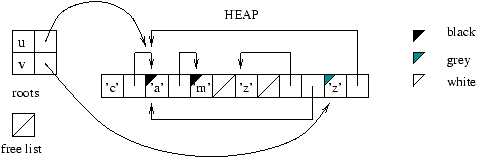

Implement a function
*cycle : 'a list -> 'a llist* that creates a lazy
list with elements from standard list, and the whole list as the tail
after the last element from the input list.
*[a1; a2; …; aN]\mapsto
|
… |
||||
-1.407730.189096-0.9632226484984790.210262600873131-0.2012170.1890960.2644529699695730.2102626008731310.751290.1890961.068792168276230.1890957798650621.788460.1890962.190633681703930.2102626008731312.19063368170393-0.191906998280196-2.0-0.2-2.0003968778939-0.001405609207567140cm*
Your function cycle can either return
LNil or fail for an empty list as argument. 1.
Note that *inv_fact* from the lecture defines
the power series for the \exp
(\cdot) function (\exp (x) =
e^x). Using *cycle* and
*inv_fact*, define the power series for \sin (\cdot) and \cos
(\cdot), and draw their graphs using helper functions from
the lecture script *Lec7.ml*.
Exercise 3: * Modify one of the puzzle solving programs (either from the previous lecture or from your previous homework) to work with lazy lists. Implement the necessary higher-order lazy list functions. Check that indeed displaying only the first solution when there are multiple solutions in the result takes shorter than computing solutions by the original program.
Exercise 4: Hamming’s problem. Generate in increasing order the numbers of the form 2^{a_{1}} 3^{a_{2}} 5^{a_{3}} \ldots p_{k}^{a_{k}}, that is numbers not divisible by prime numbers greater than the kth prime number.
- In the original Hamming’s problem posed by Dijkstra, k = 3*, which is related
to* http://en.wikipedia.org/wiki/Regular_number.
Starter code is available in the middle of the lecture script
Lec7.ml:let rec lfilter f = function | LNil -> LNil |
LCons (n, ll) -> if f n then LCons (n, lazy (lfilter f (Lazy.force
ll))) else lfilter f (Lazy.force ll)let primes = let rec sieve =
function LCons(p,nf) -> LCons(p, lazy (sieve (sift p (Lazy.force
nf)))) | LNil -> failwith “Impossible! Internal error.” and sift p =
lfilter (function n -> n mod p <> 0)in sieve (lfrom 2)let times
ll n = lmap (fun i -> i n) ll;;let rec merge xs ys = match xs,
ys with | LCons (x, lazy xr), LCons (y, lazy yr) -> if x < y then
LCons (x, lazy (merge xr ys)) else if x > y then LCons (y, lazy
(merge xs yr)) else LCons (x, lazy (merge xr yr)) | r, LNil | LNil, r
-> rlet hamming k = let pr = ltake k primes in let rec h = LCons (1,
lazy (
Exercise 5: Modify format and/or
breaks to use just a single number instead of a stack of
booleans to keep track of what groups should be inlined.
Exercise 6: Add indentation to the
pretty-printer for groups: if a group does not fit in a single line, its
consecutive lines are indented by a given amount tab of
spaces deeper than its parent group lines would be. For comparison,
let’s do several implementations.
- Modify the straightforward implementation of
*pretty*. - Modify the first pipe-based implementation of
*pretty*by modifying the*format*function. - Modify the second pipe-based implementation of
*pretty*by modifying the*breaks*function. Recover the positions of elements – the number of characters from the beginning of the document – by keeping track of the growing offset. - ** Modify a pipe-based implementation to provide a different style of indentation: indent the first line of a group, when the group starts on a new line, at the same level as the consecutive lines (rather than at the parent level of indentation).*
Exercise 7: Write a pipe that takes document elements annotated with linear position, and produces document elements annotated with (line, column) coordinates.
Write another pipe that takes so annotated elements and adds a
line number indicator in front of each line. Do not update the column
coordinate. Test the pipes by plugging them before the emit
pipe.
1: first line
2: second line, etc.Exercise 8: Write a pipe that consumes document
elements doc_e and yields the toplevel subdocuments
doc which would generate the corresponding elements.
You can modify the definition of documents to allow annotations,
so that the element annotations are preserved (gen should
ignore annotations to keep things simple):type ’a doc = Text of ’a
string | Line of ’a | Cat of doc * doc | Group of ’a * doc*
Exercise 9: * Design and implement a way to duplicate arrows outgoing from a pipe-box, that would memoize the stream, i.e. not recompute everything “upstream” for the composition of pipes. Such duplicated arrows would behave nicely with pipes reading from files.
*| Does not recompute g nor f. | Reads once and passes all content to f and g. |
-5.769180.217059-4.245171318957530.217059134806191-3.800670.238226-2.44599153327160.746229660007938-3.821830.259393-2.4459915332716-0.2909445693874851.088870.2170593.988722053181640.7250628389998681.046530.1958923.96755523217357-0.3332782114036250cm*
Lecture 8: Monads
List comprehensions. Basic monads; transformers. Probabilistic Programming.Lightweight cooperative threads.
Some examples from Tomasz Wierzbicki. Jeff Newbern ‘‘All About Monads’‘.M. Erwig, S. Kollmansberger ‘‘Probabilistic Functional Programming in Haskell’‘.Jerome Vouillon ‘‘Lwt: a Cooperative Thread Library’’.
If you see any error on the slides, let me know!
1 List comprehensions
Recall the awkward syntax we used in the Countdown Problem example:
Brute-force generation:
let combine l r = List.map (fun o->App (o,l,r)) [Add; Sub; Mul; Div]let rec exprs = function | [] -> [] | [n] -> [Val n] | ns -> split ns |-> (fun (ls,rs) -> exprs ls |-> (fun l -> exprs rs |-> (fun r -> combine l r)))
Genarate-and-test scheme:
let guard p e = if p e then [e] else []let solutions ns n = choices ns |-> (fun ns’ -> exprs ns’ |-> guard (fun e -> eval e = Some n))
Recall that we introduced the operator
let ( |-> ) x f = concatmap f x
We can do better with list comprehensions syntax extension.
#load “dynlink.cma”;;#load “camlp4o.cma”;;#load “Camlp4Parsers/Camlp4ListComprehension.cmo”;;
let test = [i * 2 | i <- fromto 2 22; i mod 3 = 0]
What it means:
[expr | ] can be translated as [expr]
[expr | v <- generator; more] can be translated as
generator|-> (fun v -> translation of [expr | more])[expr |
condition; more] can be translated asif condition then translation of [
expr| more] else []
Revisiting the Countdown Problem code snippets:
Brute-force generation:
let rec exprs = function | [] -> [] | [n] -> [Val n] | ns -> [App (o,l,r) | (ls,rs) <- split ns; l <- exprs ls; r <- exprs rs; o <- [Add; Sub; Mul; Div]]
Genarate-and-test scheme:
let solutions ns n = [e | ns’ <- choices ns; e <- exprs ns’; eval e = Some n]
Subsequences using list comprehensions (with garbage):
let rec subseqs l = match l with | [] -> [[]] | x::xs -> [ys | px <- subseqs xs; ys <- [px; x::px]]
Computing permutations using list comprehensions:
via insertion
let rec insert x = function | [] -> [[x]] | y::ys’ as ys ->
(x::ys) :: [y::zs | zs <- insert x ys’]let rec insperms = function | [] -> [[]] | x::xs -> [zs | ys <- insperms xs; zs <- insert ys]via selection
let rec select = function | [x] -> [x,[]] | x::xs -> (x,xs) :: [ y, x::ys | y,ys <- select xs]let rec selperms = function | [] -> [[]] | xs -> [x::ys | x,xs’ <- select xs; ys <- selperms xs’]
2 Generalized comprehensions aka. do-notation
We need to install the syntax extension
pa_monad- by copying the
pa_monad.cmo or pa_monad400.cmo(for OCaml 4.0) file from the course page, - or if it does not work, by compiling from sources at http://www.cas.mcmaster.ca/~carette/pa_monad/and
installing under a Unix-like shell (Windows: the Cygwin shell).
- Under Debian/Ubuntu, you may need to install
camlp4-extras
- Under Debian/Ubuntu, you may need to install
- by copying the
let rec exprs = function | [] -> [] | [n] -> [Val n] | ns ->
perform with (|->) in (ls,rs) <– split ns; l <– exprs ls; r <– exprs rs; o <– [Add; Sub; Mul; Div];
[App (o,l,r)]The perform syntax does not seem to support guards…
let solutions ns n = perform with (|->) in ns’ <– choices ns;
e <– exprs ns’; eval e = Some n; eeval e = Some n; Error: This expression has type bool but anexpression was expected of type ’a list
So it wants a list… What can we do?
We can decide whether to return anything
let solutions ns n = perform with (|->) in ns’ <– choices ns;
e <– exprs ns’; if eval e = Some n then [e] else []But what if we want to check earlier…
General “guard check” function
let guard p = if p then [()] else []
let solutions ns n = perform with (|->) in ns’ <– choices ns;
e <– exprs ns’; guard (eval e = Some n); [e]
3 Monads
A polymorphic type
'a monad(or'a Monad.t, etc.) that supports at least two operations:bind : 'a monad -> ('a -> 'b monad) -> 'b monadreturn : 'a -> 'a monad= is infix syntax for
bind: let (>>=) a b = bind a b
With
bindin scope, we do not need the with clause in performlet bind a b = concatmap b alet return x = [x] let solutions ns n =
perform ns’ <– choices ns; e <– exprs ns’; guard (eval e = Some n); return eWhy
guardlooks this way?let fail = []let guard p = if p then return () else fail
- Steps in monadic computation are composed with >>=,
e.g. |->
- as if ; was replaced by >>=
- [] |-> … does not produce anything – as needed by guarding
- [()] |-> … \rightsquigarrow (fun _ -> …) () \rightsquigarrow … i.e. keep without change
- Steps in monadic computation are composed with >>=,
e.g. |->
Throwing away the binding argument is a common practice, with infix syntax >> in Haskell, and supported in do-notation and perform.
Everything is a monad?
Different flavors of monads?
Can
guardbe defined for any monad?perform syntax in depth:
exp
[]
but uses b instead of bind
and f instead of failwith
during translation
It can be useful to redefine: let failwith = fail (why?)
3.1 Monad laws
A parametric data type is a monad only if its
bindandreturnoperations meet axioms:\begin{matrix} \operatorname{bind} (\operatorname{return}a) f & \approx & f a\\\\\\ \operatorname{bind}a (\lambda x.\operatorname{return}x) & \approx & a \\\\\\ \operatorname{bind} (\operatorname{bind}a (\lambda x.b)) (\lambda y.c) & \approx & \operatorname{bind}a (\lambda x.\operatorname{bind}b (\lambda y.c)) \end{matrix}
Check that the laws hold for our example monad
let bind a b = concatmap b alet return x = [x]
3.2 Monoid laws and monad-plus
A monoid is a type with, at least, two operations
mzero : 'a monoidmplus : 'a monoid -> 'a monoid -> 'a monoid
that meet the laws:
\begin{matrix} \operatorname{mplus}\operatorname{mzero}a & \approx & a \\\\\\ \operatorname{mplus}a\operatorname{mzero} & \approx & a \\\\\\ \operatorname{mplus}a (\operatorname{mplus}b c) & \approx & \operatorname{mplus} (\operatorname{mplus}a b) c \end{matrix}
We will define
failas synonym formzeroand infix ++ formplus.Fusing monads and monoids gives the most popular general flavor of monads which we call monad-plus after Haskell.
Monad-plus requires additional axioms that relate its “addition” and its “multiplication”.
\begin{matrix} \operatorname{bind}\operatorname{mzero}f & \approx & \operatorname{mzero}\\\\\\ \operatorname{bind}m (\lambda x.\operatorname{mzero}) & \approx & \operatorname{mzero} \end{matrix}
Using infix notation with \oplus as
mplus, \boldsymbol{0} asmzero, \vartriangleright asbindand \boldsymbol{1} asreturn, we get monad-plus axioms\begin{matrix} \boldsymbol{0} \oplus a & \approx & a \\\\\\ a \oplus \boldsymbol{0} & \approx & a \\\\\\ a \oplus (b \oplus c) & \approx & (a \oplus b) \oplus c\\\\\\ \boldsymbol{1}x \vartriangleright f & \approx & f x\\\\\\ a \vartriangleright \lambda x.\boldsymbol{1}x & \approx & a \\\\\\ (a \vartriangleright \lambda x.b) \vartriangleright \lambda y.c & \approx & a \vartriangleright (\lambda x.b \vartriangleright \lambda y.c)\\\\\\ \boldsymbol{0} \vartriangleright f & \approx & \boldsymbol{0}\\\\\\ a \vartriangleright (\lambda x.\boldsymbol{0}) & \approx & \boldsymbol{0} \end{matrix}
The list type has a natural monad and monoid structure
let mzero = [] let mplus = (@) let bind a b = concatmap b a let return a = [a]
We can define in any monad-plus
let fail = mzero let failwith = fail let (++) = mplus let (>>=) a b = bind a b let guard p = if p then return () else fail
3.3 Backtracking: computation with choice
We have seen mzero, i.e. fail in the
countdown problem. What about mplus?
let findtoeat n islandsize numislands emptycells = let honey =
honeycells n emptycells in let rec findboard s = (* Printf.printf
“findboard: %sn” (statestr s); ) match visitcell s with | None ->
perform
guard (s.beenislands = numislands); return s.eaten | Some (cell, s)
-> perform s <– findisland cell (freshisland s);
guard (s.beensize = islandsize); findboard s and findisland current s =
let s = keepcell current s in neighbors n emptycells current
|> foldM (fun neighbor s -> if CellSet.mem neighbor s.visited then
return s else let chooseeat =
if s.moretoeat <= 0 then fail else return (eatcell neighbor s) and
choosekeep = if s.beensize >= islandsize then fail else findisland
neighbor s in mplus chooseeat choosekeep) s in let cellstoeat =
List.length honey - islandsize numislands in findboard (initstate
honey cellstoeat)
4 Monad “flavors”
- Monads “wrap around” a type, but some monads need an additional type
parameter.
- Usually the additional type does not change while within a monad –
we will therefore stick to
'a monadrather than parameterize with an additional type('s, 'a) monad.
- Usually the additional type does not change while within a monad –
we will therefore stick to
- As monad-plus shows, things get interesting when we add more
operations to a basic monad (with
bindandreturn).Monads with access:
access : ’a monad -> ’a
Example: the lazy monad.
Monad-plus, non-deterministic computation:
mzero : 'a monad``mplus : 'a monad -> 'a monad -> 'a monadMonads with environment or state – parameterized by type
store:get : store monadput : store -> unit monad
There is a “canonical” state monad. Similar monads: the writer monad (with
getcalledlistenandputcalledtell); the reader monad, withoutput, but withget(calledask) andlocal:local : (store -> store) -> ’a monad -> ’a monad
The exception / error monads – parameterized by type
excn:throw : excn -> ’a monadcatch : ’a monad -> (excn -> ’a monad) -> ’a monad
The continuation monad:
callCC : ((’a -> ’b monad) -> ’a monad) -> ’a monad
We will not cover it.
Probabilistic computation:
choose : float -> ’a monad -> ’a monad -> ’a monad
satisfying the laws with a \oplus _{p} b for
choose p a band pq forp*.q, 0 \leqslant p, q \leqslant 1:\begin{matrix} a \oplus _{0} b & \approx & b \\\\\\ a \oplus _{p} b & \approx & b \oplus _{1 - p} a\\\\\\ a \oplus _{p} (b \oplus _{q} c) & \approx & \left( a \oplus _{\frac{p}{p + q - pq}} b \right) \oplus _{p + q - pq} c\\\\\\ a \oplus _{p} a & \approx & a \end{matrix}
Parallel computation as monad with access and parallel bind:
parallel :’a monad-> ’b monad-> (’a -> ’b -> ’c monad) -> ’c monad
Example: lightweight threads.
5 Interlude: the module system
I provide below much more information about the module system than we need, just for completeness. You can use it as reference.
- Module system details will not be on the exam – only the structure / signature definitions as discussed in lecture 5.
Modules collect related type definitions and operations together.
Module “values” are introduced with struct … end – structures.
Module types are introduced with sig … end – signatures.
- A structure is a package of definitions, a signature is an interface for packages.
A source file
source.mlorSource.mldefines a module Source.A source file
source.mliorSource.mlidefines its type.We can create the initial interface by entering the module in the interactive toplevel or by command
ocamlc -i source.mlIn the “toplevel” – accurately, module level – modules are defined with module ModuleName = … or module ModuleName : MODULE_TYPE = … syntax, and module types with module type MODULETYPE = … syntax.
- Corresponds to let
v_name= … resp. letv_name: v_type = … syntax for values and type vtype = … syntax for types.
- Corresponds to let
Locally in expressions, modules are defined with let module M = … in … syntax.
- Corresponds to let
v_name= … in … syntax for values.
- Corresponds to let
The content of a module is made visible in the remainder of another module by open Module
- Module Pervasives is initially visible, as if each file started with open Pervasives.
The content of a module is made visible locally in an expression with let open Module in … syntax.
Content of a module is included into another module – i.e. made part of it – by include Module.
- Just having open Module inside Parent does not affect how Parent looks from outside.
Module functions – functions from modules to modules – are called functors (not the Haskell ones!). The type of the parameter has to be given.
module Funct = functor (Arg : sig … end) -> struct … end
module Funct (Arg : sig … end) = struct … end
- Functors can return functors, i.e. modules can be parameterized by multiple modules.
- Modules are either structures or functors.
- Different kind of thing than Haskell functors.
Functor application always uses parentheses: Funct (struct … end)
We can use named module type instead of signature and named module instead of structure above.
Argument structures can contain more definitions than required.
A signature MODULETYPE with type t_name = … is like MODULETYPE but with
t_namemade more specific.We can also include signatures into other signatures, by include MODULETYPE.
- include MODULETYPE with type tname := … will substitute type
t_namewith provided type.
- include MODULETYPE with type tname := … will substitute type
Modules, just as expressions, are not recursive or mutually recursive by default. Syntax for recursive modules:module rec ModuleName : MODULETYPE = … and …
We can recover the type – i.e. signature – of a module bymodule type of Module
Finally, we can pass around modules in normal functions.
- (module Module) is an expression
- (val modulev) is a module
# module type T = sig val g : int -> int endlet f modv x = let module M = (val modv : T) in M.g x;; val f : (module T) -> int -> int = <fun> # let test = f (module struct let g i = i*i end : T);; val test : int -> int = <fun>
6 The two metaphors
- Monads can be seen as containers:
'a monadcontains stuff of type'a - and as computation:
'a monadis a special way to compute'a.- A monad fixes the sequence of computing steps – unless it is a fancy monad like parallel computation monad.
6.1 Monads as containers
- A monad is a quarantine container:
we can put something into the container with
returnwe can operate on it, but the result needs to stay in the container
let lift f m = perform x <– m; return (f x) val lift : (’a -> ’b) -> ’a monad -> ’b monad
We can deactivate-unwrap the quarantine container but only when it is in another container so the quarantine is not broken
let join m = perform x <– m; x val join : (’a monad) monad -> ’a monad
- The quarantine container for a monad-plus is more like other containers: it can be empty, or contain multiple elements.
- Monads with access allow us to extract the resulting element from
the container, other monads provide a
runoperation that exposes “what really happened behind the quarantine”.
6.2 Monads as computation
To compute the result, perform instructions, naming partial results.
Physical metaphor: assembly line
-5.762933.70556.069321338801433.72666688715439-5.72061.990996.217489085857921.990987564492666.069323.726678.926842174890862.7741599417912410.0486836883186-0.1045277153062576.217491.990996.386823653922481.736985712395826.76782643206773-0.08336089429818766.76783-0.0833609-5.29726154253208-0.1045277153062576.72549-1.84021-5.19142743749173-1.819040216959920.6717822.879992.3016271993652.879994046831597.720331.863998.12250297658420.7209783040084676.00582-0.9723674.69347797327689-0.9723673766371212.06879-0.9088670.735282444767826-0.908866913612912-5.762932.87999-4.619923270273852.87999404683159-4.42942-0.930034-5.53009657362085-0.930033734620982-9.763462.68949-8.324116946686072.26615623759757-7.308109538298720.9749801561053052.280462.371993.175100860066451.990988185174813.656303743881470.9749801561053053.88914-1.289873.31763460775235-2.263543458129383.29646778674428-2.83504762534727-4.26009-1.18404-4.64394551581309-1.82001279007382-4.72575737531419-2.72921352030692
w-7.42741.25543c3.596731.32033c'3.5293-2.47521c''-4.93743-1.586216.280990.911486.76783-0.0833609-4.408260.91148-3.916971543196911.990989632039070.206112-2.89855-0.600035853371303-1.827196584929880cmlet assemblyLine w = perform c <– makeChopsticks w c’ <– polishChopsticks c c’’ <– wrapChopsticks c’ return c’’
Any expression can be spread over a monad, e.g. for \lambda-terms:
\begin{matrix} [\![ N ]\!] = & \operatorname{return}N & \text{(constant)}\\\\\\ [\![ x ]\!] = & \operatorname{return}x & \text{(variable)}\\\\\\ [\![ \lambda x.a ]\!] = & \operatorname{return} (\lambda x. [\![ a ]\!]) & \text{(function)}\\\\\\ [\![ \operatorname{let}x = a\operatorname{in}b ]\!] = & \operatorname{bind} [\![ a ]\!] (\lambda x. [\![ b ]\!]) & \text{(local definition)}\\\\\\ [\![ a b ]\!] = & \operatorname{bind} [\![ a ]\!] (\lambda v_{a} .\operatorname{bind} [\![ b ]\!] (\lambda v_{b} .v_{a} v_{b})) & \text{(application)} \end{matrix}
When an expression is spread over a monad, its computation can be monitored or affected without modifying the expression.
7 Monad classes
To implement a monad we need to provide the implementation type,
returnandbindoperations.module type MONAD = sig type ’a t val return : ’a -> ’a t val bind : ’a t -> (’a -> ’b t) -> ’b tend
Alternatively we could start from
return,liftandjoinoperations.- For monads that change their additional type parameter we could define: module type MONAD = sig type (’s, ’a) t val return : ’a -> (’s, ’a) t val bind : (’s, ’a) t -> (’a -> (’s, ’b) t) -> (’s, ’b) tend
Based on just these two operations, we can define a whole suite of general-purpose functions. We look at just a tiny selection.
module type MONADOPS = sig type ’a monad include MONAD with type ’a t := ’a monad val ( >>= ) :’a monad -> (’a -> ’b monad) -> ’b monad val foldM : (’a -> ’b -> ’a monad) -> ’a -> ’b list -> ’a monad val whenM : bool -> unit monad -> unit monad
val lift : (’a -> ’b) -> ’a monad ->'b monadval (>>|) : ’a monad -> (’a -> ’b) -> ’b monadval join : ’a monad monad -> ’a monad val ( >=> ) : (’a ->’b monad) -> (’b ->’c monad) -> ’a -> ’c monadendGiven a particular implementation, we define these functions.
module MonadOps (M : MONAD) = struct open M type ‘a monad = ’a t let run x = x let (>>=) a b = bind a b let rec foldM f a = function | [] -> return a | x::xs -> f a x >>= fun a’ -> foldM f a’ xs let whenM p s = if p then s else return () let lift f m = perform x <– m; return (f x) let (>>|) a b = lift b a let join m = perform x <– m; x let (>=>) f g = fun x -> f x >>= gend
We make the monad “safe” by keeping its type abstract. But
runexposes “what really happened”.module Monad (M : MONAD) :sig include MONADOPS val run : ’a monad -> ’a M.tend = struct include M include MonadOps(M)end
- Our
runfunction does not do anything at all. Often more useful functions are calledrunbut then they need to be defined for each implementation separately. Ouraccessoperation (see section on monad flavors) is often calledrun.
- Our
The monad-plus class of monads has a lot of implementations. They need to provide
mzeroandmplus.module type MONADPLUS = sig include MONAD val mzero : ’a t val mplus : ’a t -> ’a t -> ’a tend
Monad-plus class also has its general-purpose functions:
module type MONADPLUSOPS = sig include MONADOPS val mzero : ’a monad val mplus : ’a monad -> ’a monad -> ’a monad val fail : ’a monad val (++) : ’a monad -> ’a monad -> ’a monad val guard : bool -> unit monad val msummap : (’a -> ’b monad) -> ’a list -> ’b monadend
We again separate the “implementation” and the “interface”.
module MonadPlusOps (M : MONADPLUS) = struct open M include MonadOps(M)
let fail = mzero let (++) a b = mplus a b let guard p = if p then return () else fail let msummap f l = List.foldright (fun a acc -> mplus (f- acc) l mzeroend
module MonadPlus (M : MONADPLUS) :sig include MONADPLUSOPS val run : ’a monad -> ’a M.tend = struct include M include MonadPlusOps(M)end
We also need a class for computations with state.
module type STATE = sig type store type ’a t val get : store t val put : store -> unit tend
The purpose of this signature is inclusion in other signatures.
8 Monad instances
We do not define a class for monads with access since accessing means running the monad, not useful while in the monad.
Notation for laziness heavy? Try a monad! (Monads with access.)
module LazyM = Monad (struct type ’a t = ’a Lazy.t let bind a b = lazy (Lazy.force (b (Lazy.force a))) let return a = lazy aend)
let laccess m = Lazy.force (LazyM.run m)
Our resident list monad. (Monad-plus.)
module ListM = MonadPlus (struct type ’a t = ’a list let bind a b = concatmap b a let return a = [a] let mzero = [] let mplus = List.appendend)
8.1 Backtracking parameterized by monad-plus
module Countdown (M : MONADPLUSOPS) = struct open MOpen the module to make monad operations visible.
let rec insert x = functionAll choice-introducing operations | [] -> return [x]need to happen in the monad. | y::ys as xs -> return (x::xs) ++ perform xys <– insert x ys; return (y::xys)
let rec choices = function | [] -> return [] | x::xs -> perform
cxs <– choices xs;Choosing which numbers in what order
return cxs ++ insert x cxsand now whether with or without
x.
type op = Add | Sub | Mul | Div
let apply op x y = match op with | Add -> x + y | Sub -> x - y | Mul -> x * y | Div -> x / y
let valid op x y = match op with | Add -> x <= y | Sub -> x > y | Mul -> x <= y && x <> 1 && y <> 1 | Div -> x mod y = 0 && y <> 1
type expr = Val of int | App of op * expr * expr
let op2str = function | Add -> “+” | Sub -> “-” | Mul -> “*” | Div -> “/” let rec expr2str = functionWe will provide solutions as strings. | Val n -> stringofint n | App (op,l,r) ->“(”expr2str lop2str opexpr2str r”)”
let combine (l,x) (r,y) o = performTry out an operator. guard (valid o x y); return (App (o,l,r), apply o x y)
let split l =Another choice: which numbers go into which argument.
let rec aux lhs = function | [] | [] -> failBoth
arguments need numbers.| [y; z] -> return (List.rev (y::lhs), [z]) |
hd::rhs ->
let lhs = hd::lhs in return (List.rev lhs, rhs) ++ aux lhs rhs in aux []
l
let rec results = functionBuild possible expressions once numbers |
[] -> failhave been picked.| [n] -> perform guard (n
> 0); return (Val n, n) | ns -> perform (ls, rs) <– split ns;
lx <– results ls; ly <– results rs;Collect solutions using each
operator. msummap (combine lx ly) [Add; Sub; Mul; Div]
let solutions ns n = performSolve the problem: ns’ <– choices ns;pick numbers and their order, (e,m) <– results ns’;build possible expressions, guard (m=n);check if the expression gives target value, return (expr2str e)‘‘print’’ the solution.end
8.2 Understanding laziness
We will measure execution times:
#load “unix.cma”;;let time f = let tbeg = Unix.gettimeofday () in let res = f () in let tend = Unix.gettimeofday () in tend -. tbeg, res
Let’s check our generalized Countdown solver using original operations.
module ListCountdown = Countdown (ListM)let test1 () = ListM.run (ListCountdown.solutions [1;3;7;10;25;50] 765)let t1, sol1 = time test1
val t1 : float = 2.2856600284576416val sol1 : string list =
[“((25-(3+7))(1+50))”; ”(((25-3)-7)(1+50))”; …What if we want only one solution? Laziness to the rescue!
type ’a llist = LNil | LCons of ’a * ’a llist Lazy.tlet rec ltake n = function | LCons (a, lazy l) when n > 0 -> a::(ltake (n-1) l) | -> []let rec lappend l1 l2 = match l1 with LNil -> l2 | LCons (hd, tl) -> LCons (hd, lazy (lappend (Lazy.force tl) l2))let rec lconcatmap f = function | LNil -> LNil | LCons (a, lazy l) ->
lappend (f a) (lconcatmap f l)That is, another monad-plus.
module LListM = MonadPlus (struct type ’a t = ’a llist let bind a b = lconcatmap b a let return a = LCons (a, lazy LNil) let mzero = LNil let mplus = lappendend)
module LListCountdown = Countdown (LListM)let test2 () = LListM.run (LListCountdown.solutions [1;3;7;10;25;50] 765)
# let t2a, sol2 = time test2;;val t2a : float = 2.51197600364685059val sol2 : string llist = LCons ("((25-(3+7))*(1+50))", <lazy>)Not good, almost the same time to even get the lazy list!
# let t2b, sol21 = time (fun () -> ltake 1 sol2);;val t2b : float = 2.86102294921875e-06val sol21 : string list = ["((25-(3+7))*(1+50))"]# let t2c, sol29 = time (fun () -> ltake 10 sol2);;val t2c : float = 9.059906005859375e-06val sol29 : string list = ["((25-(3+7))*(1+50))"; "(((25-3)-7)*(1+50))"; …# let t2d, sol239 = time (fun () -> ltake 49 sol2);;val t2d : float = 4.00543212890625e-05val sol239 : string list = ["((25-(3+7))*(1+50))"; "(((25-3)-7)*(1+50))"; …Getting elements from the list shows they are almost already computed.
Wait! Perhaps we should not store all candidates when we are only interested in one.
module OptionM = MonadPlus (struct type ’a t = ’a option let bind a b =
match a with None -> None | Some x -> b x let return a = Some a
let mzero = None let mplus a b = match a with None -> b | Some -> aend)module OptCountdown = Countdown (OptionM)let test3 () = OptionM.run (OptCountdown.solutions [1;3;7;10;25;50] 765)
# let t3, sol3 = time test3;;val t3 : float = 5.0067901611328125e-06val sol3 : string option = NoneIt very quickly computes… nothing. Why?
- What is the OptionM monad (
Maybemonad in Haskell) good for?
- What is the OptionM monad (
Our lazy list type is not lazy enough.
- Whenever we “make” a choice:
a++bormsum_map…, it computes the first candidate for each choice path. - When we bind consecutive steps, it computes the second candidate of the first step even when the first candidate would suffice.
- Whenever we “make” a choice:
We want the whole monad to be lazy: it’s called even lazy lists.
- Our
llistare called odd lazy lists.
type ’a lazylist = ’a lazylist Lazy.tand ’a lazylist = LazNil | LazCons of ’a * ’a lazylistlet rec laztake n = function | lazy (LazCons (a, l)) when n > 0 -> a::(laztake (n-1) l) | -> []let rec appendaux l1 l2 = match l1 with lazy LazNil -> Lazy.force l2 | lazy (LazCons (hd, tl)) -> LazCons (hd, lazy (appendaux tl l2))let lazappend l1 l2 = lazy (appendaux l1 l2)let rec concatmapaux f = function | lazy LazNil -> LazNil | lazy (LazCons (a, l)) -> appendaux (f a) (lazy (concatmapaux f l))let lazconcatmap f l = lazy (concatmapaux f l)
- Our
module LazyListM = MonadPlus (struct type ’a t = ’a lazylist let bind a b = lazconcatmap b a let return a = lazy (LazCons (a, lazy LazNil)) let mzero = lazy LazNil let mplus = lazappendend)
module LazyCountdown = Countdown (LazyListM)let test4 () = LazyListM.run (LazyCountdown.solutions [1;3;7;10;25;50] 765)
# let t4a, sol4 = time test4;;val t4a : float = 2.86102294921875e-06val sol4 : string lazylist = <lazy># let t4b, sol41 = time (fun () -> laztake 1 sol4);;val t4b : float = 0.367874860763549805val sol41 : string list = ["((25-(3+7))*(1+50))"]# let t4c, sol49 = time (fun () -> laztake 10 sol4);;val t4c : float = 0.234670877456665039val sol49 : string list = ["((25-(3+7))*(1+50))"; "(((25-3)-7)*(1+50))"; …# let t4d, sol439 = time (fun () -> laztake 49 sol4);;val t4d : float = 4.0594940185546875val sol439 : string list = ["((25-(3+7))*(1+50))"; "(((25-3)-7)*(1+50))"; …- Finally, the first solution in considerably less time than all solutions.
- The next 9 solutions are almost computed once the first one is.
- But computing all solutions takes nearly twice as long as without the overhead of lazy computation.
8.3 The exception monad
- Built-in non-functional exceptions in OCaml are more efficient (and more flexible).
- Instead of specifying a type of exceptional values, we could use
OCaml open type
exn, restoring some flexibility. - Monadic exceptions are safer than standard exceptions in situations
like multi-threading. Monadic lightweight-thread library Lwt has
throw(calledfailthere) andcatchoperations in its monad.
module ExceptionM(Excn : sig type t end) : sig type excn = Excn.t
type ’a t = OK of ’a | Bad of excn include MONADOPS val run : ’a monad
-> ’a t
val throw : excn -> ’a monad val catch : ’a monad -> (excn ->
’a monad) -> ’a monadend = struct type excn = Excn.t
module M = struct type ’a t = OK of ’a | Bad of excn let return a = OK a let bind m b = match m with | OK a -> b a | Bad e -> Bad e end include M include MonadOps(M) let throw e = Bad e let catch m handler = match m with | OK -> m | Bad e -> handler eend
8.4 The state monad
module StateM(Store : sig type t end) : sig type store =
Store.tPass the current store value to get the
next value.type ‘a t = store -> ’a * store include MONADOPS include
STATE with type ’a t := ’a monad
and type store := store val run : ’a monad -> ’a tend = struct type
store = Store.t module M = struct type ’a t = store -> ’a *
store
let return a = fun s -> a, sKeep the current value
unchanged.let bind m b = fun s -> let a, s’ = m s in b a s’ endTo
bind two steps, pass the value after first step to the second step.
include M include MonadOps(M) let get = fun s -> s,
sKeep the value unchanged but put it in monad.let put s’ =
fun -> (), s’Change the value; a throwaway in monad.end
The state monad is useful to hide passing-around of a “current” value.
We will rename variables in \lambda-terms to get rid of possible name clashes.
- This does not make a \lambda-term safe for multiple steps of \beta-reduction. Find a counter-example.
type term =| Var of string| Lam of string * term| App of term * term
let (!) x = Var xlet (|->) x t = Lam (x, t)let (@) t1 t2 = App (t1, t2)let test = “x” |-> (“x” |-> !“y” @ !“x”) @ !“x”
module S = StateM(struct type t = int * (string * string) list end)open S
Without opening the module, we would write S
.get, S.putand perform with S in…let rec alphaconv = function | Var x as v -> performFunction from terms to StateM monad. (_, env) <– get;Seeing a variable does not change state let v = try Var (List.assoc x env)but we need its new name.
with Notfound -> v inFree variables don’t change name. return v | Lam (x, t) -> performWe rename each bound variable. (fresh, env) <– get;We need a fresh number. let x’ = x stringofint fresh in
put (fresh+1, (x, x’)::env);Remember new name, update number. t’ <– alphaconv t; (fresh’, ) <– get;We need to restore names, put (fresh’, env);but keep the number fresh. return (Lam (x’, t’)) | App (t1, t2) -> perform t1 <– alphaconv t1;Passing around of names
t2 <– alphaconv t2;and the currently fresh number return (App (t1, t2))is done by the monad.val test : term = Lam (“x”, App (Lam (“x”, App (Var “y”, Var “x”)), Var “x”))# let = StateM.run (alphaconv test) (5, []);;- : term * (int * (string * string) list) =(Lam (“x5”, App (Lam (“x6”, App (Var “y”, Var “x6”)), Var “x5”)), (7, []))
If we separated the reader monad and the state monad, we would avoid the lines: (fresh’, ) <– get;Restoring the ‘‘reader’’ part
envput (fresh’, env);but preserving the ‘‘state’’ partfresh.The elegant way is to define the monad locally:
let alphaconv t = let module S = StateM (struct type t = int * (string
- string) list end) in let open S in let rec aux = function | Var x as
v -> perform (fresh, env) <– get; let v = try Var (List.assoc x
env) with Notfound -> v in return v | Lam (x, t) -> perform
(fresh, env) <– get; let x’ = x
stringofint fresh in put (fresh+1, (x, x’)::env); t’ <– aux t; (fresh’, ) <– get; put (fresh’, env); return (Lam (x’, t’)) | App (t1, t2) -> perform t1 <– aux t1; t2 <– aux t2; return (App (t1, t2)) in run (aux t) (0, [])
- string) list end) in let open S in let rec aux = function | Var x as
v -> perform (fresh, env) <– get; let v = try Var (List.assoc x
env) with Notfound -> v in return v | Lam (x, t) -> perform
(fresh, env) <– get; let x’ = x
9 Monad transformers
Sometimes we need merits of multiple monads at the same time, e.g. monads AM and BM.
Straightforwad idea is to nest one monad within another:
- either ’a AM.monad BM.monad
- or ’a BM.monad AM.monad.
But we want a monad that has operations of both AM and BM.
It turns out that the straightforward approach does not lead to operations with the meaning we want.
A monad transformer AT takes a monad BM and turns it into a monad AT(BM) which actually wraps around BM on both sides. AT(BM) has operations of both monads.
We will develop a monad transformer StateT which adds state to a monad-plus. The resulting monad has all:
return,bind,mzero,mplus,put,getand their supporting general-purpose functions.- There is no reason for StateT not to provide state to any flavor of monads. Our restriction to monad-plus is because the type/module system makes more general solutions harder.
We need monad transformers in OCaml because “monads are contagious”: although we have built-in state and exceptions, we need to use monadic state and exceptions when we are inside a monad.
- The reason Lwt is both a concurrency and an exception monad.
Things get interesting when we have several monad transformers, e.g. AT, BT, … We can compose them in various orders: AT(BT(CM)), BT(AT(CM)), … achieving different results.
- With a single trasformer, we will not get into issues with multiple-layer monads…
- They are worth exploring – especially if you plan a career around programming in Haskell.
The state monad, using (fun x -> …) a instead of let x = a in …
type ’a state = store -> (’a * store)
let
return(a : ’a) : ’a state = fun s -> (a, s)let bind (u : ‘a state) (f : ’a -> ’b state) : ’b state = fun s -> (fun (a, s’) -> f a s’) (u s)
Monad M transformed to add state, in pseudo-code:
type ’a stateT(M) = store -> (’a * store) M(* notice this is not an (’a M) state *)
let
return(a : ’a) : ’a stateT(M) = fun s -> M.return(a, s)Rather than returning, M.returnlet bind(u:‘a stateT(M))(f:’a->’b stateT(M)):’b stateT(M)= fun s -> M.bind (u s) (fun (a, s’) -> f a s’)Rather than let-binding, M.bind
9.1 State transformer
module StateT (MP : MONADPLUSOPS) (Store : sig type t end) :
sigFunctor takes two modules – the second one type store =
Store.tprovides only the storage type.type ‘a t = store
-> (’a * store) MP.monad include MONADPLUSOPSExporting all the
monad-plus operations include STATE with type ’a t :=
'a monadand state operations.and type store := store val
run : ’a monad -> 'a tExpose ‘‘what happened’’ –
resulting states.val runT : ’a monad -> store -> ’a MP.monadend =
structRun the state transformer – get the resulting values. type store =
Store.t
module M = struct type ‘a t = store -> (’a * store) MP.monad let
return a = fun s -> MP.return (a, s) let bind m b = fun s ->
MP.bind (m s) (fun (a, s’) -> b a s’) let mzero = fun ->
MP.mzeroLift the monad-plus operations.let mplus
ma mb = fun s -> MP.mplus (ma s) (mb s) end include M include
MonadPlusOps(M) let get = fun s -> MP.return (s, s)Instead of just
returning, let put s’ = fun -> MP.return ((), s’)MP.return. let runT
m s = MP.lift fst (m s)end
9.2 Backtracking with state
module HoneyIslands (M : MONADPLUSOPS) = struct type state = {For use
with list monad or lazy list monad. beensize: int; beenislands:
int;
unvisited: cell list; visited: CellSet.t; eaten: cell list;
moretoeat: int; } let initstate unvisited moretoeat = { beensize =
0;
beenislands = 0; unvisited; visited = CellSet.empty; eaten = [];
moretoeat; }
module BacktrackingM = StateT (M) (struct type t = state end) open BacktrackingM let rec visitcell () = performState update actions. s <– get; match s.unvisited with | [] -> return None | c::remaining when CellSet.mem c s.visited -> perform put {s with unvisited=remaining}; visitcell ()Throwaway argument because of recursion. See () | c::remaining ( when c not visited *) -> perform put {s with unvisited=remaining; visited = CellSet.add c s.visited}; return (Some c)This action returns a value.
let eatcell c = perform s <– get; put {s with eaten = c::s.eaten;
visited = CellSet.add c s.visited; moretoeat = s.moretoeat - 1}; return
()Remaining state update actions just affect the state. let keepcell c =
perform s <– get; put {s with
visited = CellSet.add c s.visited; beensize = s.beensize + 1};
return () let freshisland = perform s <– get; put {s with beensize =
0; beenislands = s.beenislands + 1}; return ()
let findtoeat n islandsize numislands emptycells = let honey =
honeycells n emptycells inOCaml does not realize that
'a monad with state is actually a function – let rec
findboard () = performit’s an abstract type.(*)
cell <– visitcell (); match cell with | None -> perform s <–
get; guard (s.beenislands = numislands); return s.eaten | Some cell
-> perform
freshisland; findisland cell; s <– get;
guard (s.beensize = islandsize); findboard ()
and findisland current = perform keepcell current; neighbors n emptycells current |> foldMThe partial answer sits
in the state – throwaway result.(fun () neighbor -> perform s <–
get; whenM (not (CellSet.mem neighbor s.visited))
(let chooseeat = perform guard (s.moretoeat > 0); eatcell
neighbor
and choosekeep = perform guard (s.beensize < islandsize); findisland
neighbor in
chooseeat ++ choosekeep)) () in
let cellstoeat = List.length honey - islandsize * numislands in initstate honey cellstoeat |> runT (findboard ())endmodule HoneyL = HoneyIslands (ListM)let findtoeat a b c d = ListM.run (HoneyL.findtoeat a b c d)
10 Probabilistic Programming
- Using a random number generator, we can define procedures that produce various output. This is not functional – mathematical functions have a deterministic result for fixed arguments.
- Similarly to how we can “simulate” (mutable) variables with state monad and non-determinism (i.e. making choices) with list monad, we can “simulate” random computation with probability monad.
- The probability monad class means much more than having randomized computation. We can ask questions about probabilities of results. Monad instances can make tradeoffs of efficiency vs. accuracy (exact vs. approximate probabilities).
- Probability monad imposes limitations on what approximation
algorithms can be implemented.
- Efficient probabilistic programming library for OCaml, based on continuations, memoisation and reified search trees:http://okmij.org/ftp/kakuritu/index.html
10.1 The probability monad
The essential functions for the probability monad class are
chooseanddistrib– remaining functions could be defined in terms of these but are provided by each instance for efficiency.Inside-monad operations:
choose : float -> ’a monad -> ’a monad -> ’a monad
choose p a brepresents an event or distribution which is a with probability p and is b with probability 1 - p.val pick : (’a * float) list -> ’a t
A result from the provided distribution over values. The argument must be a probability distribution: positive values summing to 1.
val uniform : ’a list -> ’a monad
Uniform distribution over given values.
val flip : float -> bool monad
Equal to
choose 0.5 (return true) (return false).val coin : bool monadEqual to
flip 0.5.
And some operations for getting out of the monad:
val prob : (’a -> bool) -> ’a monad -> float
Returns the probability that the predicate holds.
val distrib : ’a monad -> (’a * float) list
Returns the distribution of probabilities over the resulting values.
val access : ’a monad -> ’a
Samples a random result from the distribution – non-functional behavior.
We give two instances of the probability monad: exact distribution monad, and sampling monad, which can approximate distributions.
- The sampling monad is entirely non-functional: in Haskell, it lives in the IO monad.
The monad instances indeed represent probability distributions: collections of positive numbers that add up to 1 – although often
mergerather thannormalizeis used. Ifpickandchooseare used correctly.module type PROBABILITY = sigProbability monad class. include MONADOPS val choose : float -> ’a monad -> ’a monad -> ’a monad val pick : (’a * float) list ->
'a monadval uniform : ’a list -> ’a monadval coin : bool monad val flip : float -> bool monad val prob : (’a -> bool) -> ’a monad -> float val distrib : ’a monad -> (’a * float) list val access : ’a monad -> ’aendlet total dist =Helper functions. List.foldleft (fun a (,b)->a+.b) 0. distlet merge dist =Merge repeating elements. mapreduce (fun x->x) (+.) 0. distlet normalize dist = Normalize a measure into a distribution.
let tot = total dist in if tot = 0. then dist else List.map (fun (e,w)->e,w/.tot) distlet roulette dist =Roulette wheel from a distribution/measure. let tot = total dist in let rec aux r = function [] -> assert false | (e,w):: when w <= r -> e | (,w)::tl -> aux (r-.w) tl in aux (Random.float tot) distmodule DistribM : PROBABILITY = struct module M = structExact probability distribution – naive implementation. type ’a t = (’a * float) list
let bind a b =merge``xw.p. p and thenyw.p. q happens =[y, q*.p | (x,p) <- a; (y,q) <- b x]yresults w.p. p q. let return a = [a, 1.]Certainlya. end include M include MonadOps (M) let choose p a b = List.map (fun (e,w) -> e, p.w) a @ List.map (fun (e,w) -> e, (1. -.p).w) b let pick dist =distlet uniform elems = normalize (List.map (fun e->e,1.) elems)let coin = [true, 0.5; false, 0.5] let flip p = [true, p; false, 1. -. p]let prob p m = m |> List.filter (fun (e,) -> p e)All cases where
pholds, |> List.map snd |> List.foldleft (+.) 0.add up.
let distrib m = m let access m = roulette mendmodule SamplingM (S : sig val samples : int end) : PROBABILITY = structParameterized by how many samples module M = structused to approximate
probordistrib. type ’a t = unit ->'aRandomized computation – each call a()let bind a b () = b (a ()) () is an independent sample. let return a = fun () ->aAlwaysa.end include M include MonadOps (M) let choose p a b () = if Random.float 1. <= p then a () else b () let pick dist = fun () ->roulette distlet uniform elems = let n = List.length elems in fun () -> List.nth (Random.int n) elemslet coin = Random.bool let flip p = choose p (return true) (return false)let prob p m = let count = ref 0 in for i = 1 to S.samples do
if p (m ()) then incr count done; floatofint !count /. floatofint S.sampleslet distrib m = let dist = ref [] in for i = 1 to S.samples do dist := (m (), 1.) :: !dist done; normalize (merge!dist) let access m = m ()end
10.2 Example: The Monty Hall problem
http://en.wikipedia.org/wiki/Monty_Hall_problem: > In search of a new car, the player picks a door, say 1. The game host > then opens one of the other doors, say 3, to reveal a goat and offers to > let the player pick door 2 instead of door 1.
module MontyHall (P : PROBABILITY) = struct open P type door = A | B | C
let doors = [A; B; C]let montywin switch = perform prize <– uniform doors;
chosen <– uniform doors; opened <– uniform (listdiff doors [prize; chosen]); let final = if switch then List.hd
(listdiff doors [opened; chosen]) else chosen in return (final = prize)endmodule MontyExact = MontyHall (DistribM)module Sampling1000 = SamplingM (struct let samples = 1000 end)module MontySimul = MontyHall (Sampling1000)
# let t1 = DistribM.distrib (MontyExact.montywin false);;val t1 : (bool * float) list = [(true, 0.333333333333333315); (false, 0.66666666666666663)]# let t2 = DistribM.distrib (MontyExact.montywin true);;val t2 : (bool * float) list = [(true, 0.66666666666666663); (false, 0.333333333333333315)]# let t3 = Sampling1000.distrib (MontySimul.montywin false);;val t3 : (bool * float) list = [(true, 0.313); (false, 0.687)]# let t4 = Sampling1000.distrib (MontySimul.montywin true);;val t4 : (bool * float) list = [(true, 0.655); (false, 0.345)]10.3 Conditional probabilities
Wouldn’t it be nice to have a monad-plus rather than a monad?
We could use
guard– conditional probabilities!- P (A|B)
- Compute what is needed for both A and B.
- Guard B.
- Return A.
- P (A|B)
For the exact distribution monad it turns out very easy – we just need to allow intermediate distributions to be unnormalized (sum to less than 1).
For the sampling monad we use rejection sampling.
mplushas no straightforward correct implementation.
We implemented PROBABILITY separately for educational purposes only, as COND_PROBAB introduced below supersedes it.
module type CONDPROBAB = sigClass for conditional probability monad,
include PROBABILITYwhereguard condconditions oncond. include MONADPLUSOPS with type ’a monad := ’a monadendmodule DistribMP : CONDPROBAB = struct module MP = structThe measures no longer restricted to type ’a t = (’a * float)
listprobability distributions: let bind a b = merge [y, q*.p | (x,p) <- a; (y,q) <- b x] let return a = [a, 1.] let mzero = []Measure equal 0 everywhere is OK. let mplus = List.append end include MP include MonadPlusOps (MP) let choose p a b =It isn’taw.p. p &bw.p. (1 - p) sinceaandbList.map (fun (e,w) -> e, p.w) a @are not normalized!List.map (fun (e,w) -> e, (1. -.p).w) b let pick dist =distlet uniform elems = normalize (List.map (fun e->e,1.) elems) let coin = [true, 0.5; false, 0.5] let flip p = [true, p; false, 1. -. p] let prob p m =
normalize mFinal normalization step.|> List.filter (fun (e,) -> p e) |> List.map snd |> List.foldleft (+.) 0. let distrib m = normalize m let access m = roulette mendWe write the rejection sampler in mostly imperative style:
module SamplingMP (S : sig val samples : int end) : CONDPROBAB = struct
exception RejectedFor rejecting current sample. module MP = structMonad operations are exactly as for SamplingM type ’a t = unit -> ’a let bind a b () = b (a ()) () let return a = fun () ->alet mzero = fun () -> raise Rejectedbut now we canfail. let mplus a b = fun () -> failwith “SamplingMP.mplus not implemented” end include MP include MonadPlusOps (MP)let choose p a b () =Inside-monad operations don’t change. if Random.float 1. <= p then a () else b () let pick dist = fun () ->
roulette distlet uniform elems = let n = List.length elems in fun () -> List.nth elems (Random.int n) let coin = Random.bool let flip p = choose p (return true) (return false)let prob p m =Getting out of monad: handle rejected samples. let count = ref 0 and tot = ref 0 in while !tot < S.samples doCount up to the required trynumber of samples. if p (m ()) then incr count;m() can fail.
incr totBut if we got here it hasn’t.with Rejected -> ()Rejected, keep sampling. done; floatofint !count /. floatofint S.sampleslet distrib m = let dist = ref [] and tot = ref 0 in while !tot < S.samples do try dist := (m (), 1.) :: !dist; incr tot
with Rejected -> () done; normalize (merge !dist) let rec access m = try m () with Rejected -> access mend
10.4 Burglary example: encoding a Bayes net
We’re faced with a problem with the following dependency structure:
Burglary
Earthquake
Alarm
John calls
Mary calls
-5.525383.15826-3.04886559068663.17942188120122-3.133532874718882.73491864003175-2.11753-0.376604-0.297178859637518-0.418937690170658-0.318345680645588-0.228436301098029-5.82172-4.9063-2.98536512766239-4.90630374388147-3.64153657891255-6.028145257309170.570661-4.863973.63984984786347-4.906303743881472.85667747056489-6.091645720333380.7399953.158263.682183489879613.094754597168943.512848921815052.50208360894298-3.346952.3791-1.790454363947570.2764614914471450.9764792.39298-0.6819827901385850.319857839429467-1.87545-1.04339-3.6026998120943-3.65669671517365-0.55984-1.063621.16004444583979-3.529329161908520cm
- Alarm can be due to either a burglary or an earthquake.
- I’ve left on vacations.
- I’ve asked neighbors John and Mary to call me if the alarm rings.
- Mary only calls when she is really sure about the alarm, but John has better hearing.
- Earthquakes are twice as probable as burglaries.
- The alarm has about 30% chance of going off during earthquake.
- I can check on the radio if there was an earthquake, but I might miss the news.
module Burglary (P : CONDPROBAB) = struct open P type whathappened =
Safe | Burgl | Earthq | Burglnearthqlet check \simjohncalled \simmarycalled \simradio = perform
earthquake <– flip 0.002; guard (radio = None || radio = Some earthquake); burglary <– flip 0.001; let alarmp = match burglary, earthquake with | false, false -> 0.001 | false, true -> 0.29 | true, false -> 0.94 | true, true -> 0.95 in alarm <– flip alarmp;let johnp = if alarm then 0.9 else 0.05 in johncalls <-- flipjohnp; guard (johncalls = johncalled); let maryp = if alarm then 0.7 else 0.01 in marycalls <– flip maryp; guard (marycalls = marycalled); match burglary, earthquake with | false, false -> return Safe | true, false -> return Burgl | false, true -> return Earthq | true, true -> return Burglnearthqend
module BurglaryExact = Burglary (DistribMP)module Sampling2000 = SamplingMP (struct let samples = 2000 end)module BurglarySimul = Burglary (Sampling2000)
# let t1 = DistribMP.distrib (BurglaryExact.check $\sim$johncalled:true
$\sim$marycalled:false $\sim$radio:None);; val t1 :
(BurglaryExact.whathappened * float) list =
[(BurglaryExact.Burglnearthq, 1.03476433660005444e-05);
(BurglaryExact.Earthq, 0.00452829235738691407);
(BurglaryExact.Burgl, 0.00511951049003530299);
(BurglaryExact.Safe, 0.99034184950921178)]# let t2 = DistribMP.distrib
(BurglaryExact.check $\sim$johncalled:true $\sim$marycalled:true
$\sim$radio:None);; val t2 : (BurglaryExact.whathappened * float) list =
[(BurglaryExact.Burglnearthq, 0.00057437256500405794);
(BurglaryExact.Earthq, 0.175492465840075218);
(BurglaryExact.Burgl, 0.283597462799388911);
(BurglaryExact.Safe, 0.540335698795532)]# let t3 = DistribMP.distrib
(BurglaryExact.check $\sim$johncalled:true $\sim$marycalled:true
$\sim$radio:(Some true));; val t3 : (BurglaryExact.whathappened * float)
list = [(BurglaryExact.Burglnearthq, 0.0032622416021499262);
(BurglaryExact.Earthq, 0.99673775839785006)]
# let t4 = Sampling2000.distrib (BurglarySimul.check $\sim$johncalled:true
$\sim$marycalled:false $\sim$radio:None);; val t4 :
(BurglarySimul.whathappened * float) list = [(BurglarySimul.Earthq, 0.0035);
(BurglarySimul.Burgl, 0.0035); (BurglarySimul.Safe, 0.993)]# let t5 =
Sampling2000.distrib (BurglarySimul.check $\sim$johncalled:true
$\sim$marycalled:true $\sim$radio:None);; val t5 :
(BurglarySimul.whathappened * float) list =
[(BurglarySimul.Burglnearthq, 0.0005); (BurglarySimul.Earthq, 0.1715);
(BurglarySimul.Burgl, 0.2875); (BurglarySimul.Safe, 0.5405)]# let t6 =
Sampling2000.distrib (BurglarySimul.check $\sim$johncalled:true
$\sim$marycalled:true $\sim$radio:(Some true));; val t6 :
(BurglarySimul.whathappened * float) list =
[(BurglarySimul.Burglnearthq, 0.0015); (BurglarySimul.Earthq, 0.9985)]11 Lightweight cooperative threads
bindis inherently sequential: bind a (fun x -> b) computesa, and resumes computingbonly once the resultxis known.For concurrency we need to “suppress” this sequentiality. We introduce
parallel :’a monad-> ’b monad-> (’a -> ’b -> ’c monad) -> ’c monad
where parallel a b (fun x y -> c) does not wait for
ato be computed before it can start computingb.It can be that only accessing the value in the monad triggers the computation of the value, as we’ve seen in some monads.
- The state monad does not start computing until you “get out of the monad” and pass the initial value.
- The list monad computes right away – the
'a monadvalue is the computed results.
In former case, a “built-in”
parallelis necessary for concurrency.If the monad starts computing right away, as in the Lwt library,
parallel \concat{e}{\rsub{a}} \concat{e}{\rsub{b}} cis equivalent toperform let a = e_{a} in let b = e_{b} in x <– a; y <– b; c x y
- We will follow this model, with an imperative implementation.
- In any case, do not call
runoraccessfrom within a monad.
We still need to decide on when concurrency happens.
- Under fine-grained concurrency, every
bindis suspended and computation moves to other threads.- It comes back to complete the
bindbefore running threads created since thebindwas suspended. - We implement this model in our example.
- It comes back to complete the
- Under coarse-grained concurrency, computation is
only suspended when requested.
- Operation
suspendis often calledyieldbut the meaning is more similar toAwaitthanYieldfrom lecture 7. - Library operations that need to wait for an event or completion of
IO (file operations, etc.) should call
suspendor its equivalent internally. - We leave coarse-grained concurrency as exercise 11.
- Operation
- Under fine-grained concurrency, every
The basic operations of a multithreading monad class.
module type THREADS = sig include MONAD val parallel : ’a t -> ’b t -> (’a -> ’b -> ’c t) -> ’c tend
Although in our implementation
parallelwill be redundant, it is a principled way to make sure subthreads of a thread are run concurrently.All within-monad operations.
module type THREADOPS = sig include MONADOPS include THREADS with type ’a t := ’a monad val parallelmap : ’a list -> (’a -> ’b monad) -> ’b list monad val (>||=) : ’a monad -> ’b monad -> (’a -> ’b -> ’c monad) -> ’c monad val (>||) : ’a monad -> ’b monad -> (unit -> ’c monad) -> ’c monadend
Outside-monad operations.
module type THREADSYS = sig include THREADS val access : ’a t -> ’a
val killthreads : unit -> unitendHelper functions.
module ThreadOps (M : THREADS) = struct open M include MonadOps (M) let parallelmap l f = List.foldright (fun a bs -> parallel (f a) bs
(fun a bs -> return (a::bs))) l (return []) let (>||=) = parallel let (>||) a b c = parallel a b (fun -> c ())endPut an interface around an implementation.
module Threads (M : THREADSYS) :sig include THREADOPS val access : ’a monad -> ’a val killthreads : unit -> unitend = struct include M
include ThreadOps(M)endOur implementation, following the Lwt paper.
module Cooperative = Threads(struct type ‘a state = | Return of
'aThe thread has returned.| Sleep of (’a -> unit)
listWhen thread returns, wake up waiters.| Link of
'a tA link to the actual thread.and ’a t = {mutable state :
’a state}State of the thread can change– it can return, or more waiters
can be added.let rec find t = match t.state withUnion-find style link
chasing. | Link t -> find t | -> t let jobs = Queue.create ()Work
queue – will storeunit -> unit procedures. let wakeup m a =Thread
m has actually finished – let m = find m inupdating its
state. match m.state with | Return -> assert false | Sleep waiters
-> m.state <- Return a;Set the state, and only then
List.iter ((|>) a) waiterswake up the waiters. | Link
-> assert false let return a = {state = Return a}let connect t t’
=t was a placeholder for t'. let t’ = find t’
in match t’.state with | Sleep waiters’ -> let t = find t in (match
t.state with | Sleep waiters ->If both sleep, collect their waiters
t.state <- Sleep (waiters’ @ waiters); t’.state <- Link
tand link one to the other.| -> assert false) | Return x
-> wakeup t xIf t' returned, wake up the
placeholder.| Link -> assert falselet rec bind a b = let a = find a
in let m = {state = Sleep []} inThe resulting monad.
(match a.state with | Return x ->If a returned, we
suspend further work. let job () = connect m (b x) in(In exercise 11,
this should
Queue.push job jobsonly happen after
suspend.)| Sleep waiters ->If a sleeps, we
wait for it to return. let job x = connect m (b x) in
a.state <- Sleep (job::waiters) | Link -> assert false); m
let parallel a b c = performSince in our implementation x <– a;the
threads run as soon as they are created, y <– b;parallel
is redundant. c x ylet rec access m =Accessing not only
gets the result of m, let m = find m inbut spins the thread
loop till m terminates. match m.state with | Return x ->
xNo further work.| Sleep -> (try Queue.pop jobs
()Perform suspended work. with Queue.Empty ->
failwith “access: result not available”); access m | Link -> assert
false let killthreads () = Queue.clear jobsRemove pending work.end)
module TTest (T : THREADOPS) = struct open T let rec loop s n = perform return (Printf.printf "-- %s(%d)\n%!" s n); (* We cannot use `whenM` because the thread would be created regardless of condition. *) if n > 0 then loop s (n-1) else return () end module TT = TTest (Cooperative)- let test = Cooperative.killthreads ();Clean-up after previous tests.
let thread1 = TT.loop “A” 5 in let thread2 = TT.loop “B” 4 in
Cooperative.access thread1;We ensure threads finish computing
Cooperative.access thread2before we proceed.
# let test = Cooperative.killthreads (); let thread1 = TT.loop "A" 5 in let thread2 = TT.loop "B" 4 in Cooperative.access thread1; Cooperative.access thread2;;-- A(5)-- B(4)-- A(4)-- B(3)-- A(3)-- B(2)-- A(2)-- B(1)-- A(1)-- B(0)-- A(0)val test : unit = ()Exercise 1.
Puzzle via Oleg Kiselyov.
“U2” has a concert that starts in 17 minutes and they must all cross a bridge to get there. All four men begin on the same side of the bridge. It is night. There is one flashlight. A maximum of two people can cross at one time. Any party who crosses, either 1 or 2 people, must have the flashlight with them. The flashlight must be walked back and forth, it cannot be thrown, etc.. Each band member walks at a different speed. A pair must walk together at the rate of the slower man’s pace:
- Bono: 1 minute to cross
- Edge: 2 minutes to cross
- Adam: 5 minutes to cross
- Larry: 10 minutes to cross
For example: if Bono and Larry walk across first, 10 minutes have elapsed when they get to the other side of the bridge. If Larry then returns with the flashlight, a total of 20 minutes have passed and you have failed the mission.
Find all answers to the puzzle using a list comprehension. The comprehension will be a bit long but recursion is not needed.
Exercise 2.
Assume concat_map as defined in lecture 6. What will the
following expresions return? Why?
- perform with (|->) in return 5; return 7
- let guard p = if p then [()] else [];;perform with (|->) in guard false; return 7;;
- perform with (|->) in return 5; guard false; return 7;;
Exercise 3.
Define bind in terms of lift and
join.
Exercise 4.
Define a monad-plus implementation based on
binary trees, with constant-time mzero and
mplus. Starter code:type ’a tree = Empty | Leaf of ’a | T
of ’a t * ’a tmodule TreeM = MonadPlus (struct type ’a t = ’a tree let
bind a b = TODO let return a = TODO let mzero = TODO let mplus a b =
TODOend)
Exercise 5.
Show the monad-plus laws for one of:
Exercise 6.
Why the following monad-plus is not lazy enough?
- let rec badappend l1 l2 = match l1 with lazy LazNil -> l2 | lazy (LazCons (hd, tl)) -> lazy (LazCons (hd, badappend tl l2))let rec badconcatmap f = function | lazy LazNil -> lazy LazNil | lazy (LazCons (a, l)) -> badappend (f a) (badconcatmap f l)
- module BadyListM = MonadPlus (struct type ’a t = ’a lazylist let bind a b = badconcatmap b a let return a = lazy (LazCons (a, lazy LazNil)) let mzero = lazy LazNil let mplus = badappendend)
- module BadyCountdown = Countdown (BadyListM)let test5 () = BadyListM.run (BadyCountdown.solutions [1;3;7;10;25;50] 765)
let t5a, sol5 = time test5;;val t5a : float = 3.3954310417175293val sol5 :
string lazylist =# let t5b, sol51 = time (fun () -> laztake 1 sol5);;val t5b : float = 3.0994415283203125e-06val sol51 : string list = [“((25-(3+7))*(1+50))”]# let t5c, sol59 = time (fun () -> laztake 10 sol5);;val t5c : float = 7.8678131103515625e-06val sol59 : string list = [“((25-(3+7))*(1+50))”; “(((25-3)-7)*(1+50))”; …# let t5d, sol539 = time (fun () -> laztake 49 sol5);;val t5d : float = 2.59876251220703125e-05val sol539 : string list =
[“((25-(3+7))*(1+50))”; “(((25-3)-7)*(1+50))”; …
Exercise 7.
Convert a “rectangular” list of lists of strings, representing a matrix with inner lists being rows, into a string, where elements are column-aligned. (Exercise not related to recent material.)
Exercise 8.
Recall the overly rich way to introduce monads – providing the freedom of additional parametermodule type MONAD = sig type (’s, ’a) t val return : ’a -> (’s, ’a) t val bind : (’s, ’a) t -> (’a -> (’s, ’b) t) -> (’s, ’b) tend
Recall the operations for the exception monad:val throw : excn -> ’a monadval catch : ’a monad -> (excn -> ’a monad) -> ’a monad
- Design the signatures for the exception monad operations to use the enriched monads with (’s, ’a) monad type, so that they provide more flexibility than our exception monad.
- Does the implementation of the exception monad need to change? The
same implementation can work with both sets of signatures, but the
implementation given in lecture needs a very slight change. Can you find
it without implementing? If not, the lecture script provides RMONAD,
RMONAD_OPS, RMonadOps and RMonad, so you can implement and see for
yourself – copy ExceptionM and modify:module ExceptionRM : sig type (’e,
’a) t = KEEP/TODO include RMONADOPS val run : (’e, ’a) monad -> (’e,
’a) t val throw : TODO val catch : TODOend = struct module M =
struct
type (’e, ’a) t = KEEP/TODO let return a = OK a let bind m b = KEEP/TODO end include M include RMonadOps(M) let throw e = KEEP/TODO
let catch m handler = KEEP/TODOend
Exercise 9.
Implement the following constructs for all monads:
- for…to…
- for…downto…
- while…do…
- do…while…
- repeat…until…
Explain how, when your implementation is instantiated with the StateM monad, we get the solution to exercise 2 from lecture 4.
Exercise 10.
A canonical example of a probabilistic model is that of a lawn whose
grass may be wet because it rained, because the sprinkler was on, or for
some other reason. Oleg Kiselyov builds on this example with variables
rain, sprinkler, and wet_grass,
by adding variables cloudy and wet_roof. The
probability tables are:
\begin{eqnarray*} P (\operatorname{cloudy}) & = & 0.5 \\\\\\ P (\operatorname{rain}|\operatorname{cloudy}) & = & 0.8 \\\\\\ P (\operatorname{rain}|\operatorname{not}\operatorname{cloudy}) & = & 0.2 \\\\\\ P (\operatorname{sprinkler}|\operatorname{cloudy}) & = & 0.1 \\\\\\ P (\operatorname{sprinkler}|\operatorname{not}\operatorname{cloudy}) & = & 0.5 \\\\\\ P (\operatorname{wet\_roof}|\operatorname{not}\operatorname{rain}) & = & 0 \\\\\\ P (\operatorname{wet}\operatorname{roof}|\operatorname{rain}) & = & 0.7 \\\\\\ P (\operatorname{wet}\operatorname{grass}|\operatorname{rain} \wedge \operatorname{not}\operatorname{sprinkler}) & = & 0.9 \\\\\\ P (\operatorname{wet}\operatorname{grass}|\operatorname{sprinkler} \wedge \operatorname{not}\operatorname{rain}) & = & 0.9 \end{eqnarray*}
We observe whether the grass is wet and whether the roof is wet. What is the probability that it rained?
Exercise 11.
Implement the coarse-grained concurrency model.
- Modify
bindto compute the resulting monad straight away if the input monad has returned. - Introduce
suspendto do what in the fine-grained model was the effect ofbind (return a) b, i.e. suspend the work although it could already be started. - One possibility is to introduce
suspendof type unit monad, introduce a “dummy” monadic valueSuspend(besidesReturnandSleep), and definebind suspend bto do whatbind (return ()) bwould formerly do.
Lecture 9: Compiler
Compilation. Runtime. Optimization. Parsing.
Andrew W. Appel ‘‘Modern Compiler Implementation in ML’‘E. Chailloux, P. Manoury, B. Pagano ‘‘Developing Applications with OCaml’‘Jon D. Harrop ‘‘OCaml for Scientists’’Francois Pottier, Yann Regis-Gianas ‘‘Menhir Reference Manual’’
If you see any error on the slides, let me know!
1 OCaml Compilers
OCaml has two primary compilers: the bytecode compiler
ocamlcand the native code compilerocamlopt.- Natively compiled code runs about 10 times faster than bytecode – depending on program.
OCaml has an interactive shell called toplevel (in other languages, repl):
ocamlwhich is based on the bytecode compiler.- There is a toplevel
ocamlnatbased on the native code compiler but currently not part of the binary distribution.
- There is a toplevel
There are “third-party” compilers, most notably
js_of_ocamlwhich translates OCaml bytecode into JavaScript source.- On modern JS virtual machines like V8 the result can be 2-3x faster than on OCaml virtual machine (but can also be slower).
Stages of compilation:
Programs:
ocaml
toplevel loop
ocamlrun
bytecode interpreter (VM)
camlp4
preprocessor (syntax extensions)
ocamlc
bytecode compiler
ocamlopt
native code compiler
ocamlmktop
new toplevel constructor
ocamldep
dependencies between modules
ocamlbuild
building projects tool
ocamlbrowser
graphical browsing of sources
File extensions:
.ml
OCaml source file
.mli
OCaml interface source file
.cmi
compiled interface
.cmo
bytecode-compiled file
.cmx
native-code-compiled file
.cma
bytecode-compiled library (several source files)
.cmxa
native-code-compiled library
.cmt/.cmti/.annot
type information for editors
.c
C source file
.o
C native-code-compiled file
.a
C native-code-compiled library
Both compilers commands:
-a
construct a runtime library
-c
compile without linking
-o
name_of_executable specify the name of the executable
-linkall
link with all libraries used
-i
display all compiled global declarations
-pp
command uses command as preprocessor
-unsafe
turn off index checking for arrays
-v
display the version of the compiler
-w list
choose among the list the level of warning message
-impl file
indicate that file is a Caml source (.ml)
-intf file
indicate that file is a Caml interface (.mli)
-I directory
add directory in the list of directories; prefix + for relative
-g
generate debugging information
Warning levels:
A/a
enable/disable all messages
F/f
partial application in a sequence
P/p
for incomplete pattern matching
U/u
for missing cases in pattern matching
X/x
enable/disable all other messages for hidden object
M/m, V/v
object-oriented related warnings
Native compiler commands:
-compact
optimize the produced code for space
-S
keeps the assembly code in a file
-inline
level set the aggressiveness of inlining
Environment variable
OCAMLRUNPARAM:b
print detailed stack backtrace of runtime exceptions
s/h/i
size of the minor heap/major heap/size increment
o/O
major GC speed setting / heap compaction trigger setting
Typical use, running
prog:export OCAMLRUNPARAM='b'; ./progTo have stack backtraces, compile with option
-g.Toplevel loop directives:
#quit;;
exit
#directory "dir";;
add dir to the “search path”; + for rel.
#cd "dir-name";;
change directory
#load "file-name";;
load a bytecode .cmo/.cma file
#load_rec "file-name";;
load the files file-name depends on too
#use "file-name";;
read, compile and execute source phrases
#instal_printer pr_nm;;
register pr_nm to print values of a type
#print_depth num;;
how many nestings to print
#print_length num;;
how many nodes to print – the rest …
#trace func;;/#untrace
trace calls to func/stop tracing
1.1 Compiling multiple-file projects
Traditionally the file containing a module would have a lowercase name, although the module name is always uppercase.
- Some people think it is more elegant to use uppercase for file
names, to reflect module names, i.e. for MyModule, use
MyModule.mlrather thanmyModule.ml.
- Some people think it is more elegant to use uppercase for file
names, to reflect module names, i.e. for MyModule, use
We have a project with main module
main.mland helper modulessub1.mlandsub2.mlwith corresponding interfaces.Native compilation by hand:
…:…/Lec9$ ocamlopt sub1.mli…:…/Lec9$ ocamlopt sub2.mli…:…/Lec9$ ocamlopt -c sub1.ml…:…/Lec9$ ocamlopt -c sub2.ml…:…/Lec9$ ocamlopt -c main.ml…:…/Lec9$ ocamlopt unix.cmxa sub1.cmx sub2.cmx main.cmx -o prog…:…/Lec9$ ./progNative compilation using
make:
PROG := prog
LIBS := unix
SOURCES := sub1.ml sub2.ml main.ml
INTERFACES := $(wildcard *.mli)
OBJS := $(patsubst %.ml,%.cmx,$(SOURCES))
LIBS := $(patsubst %,%.cmxa,$(LIBS))
$(PROG): $(OBJS)
ocamlopt -o $@ $(LIBS) $(OBJS)
clean: rm -rf $(PROG) *.o *.cmx *.cmi *~
%.cmx: %.ml
ocamlopt -c $*.ml
%.cmi: %.mli
ocamlopt -c $*.mli
depend: $(SOURCES) $(INTERFACES)
ocamldep -native $(SOURCES) $(INTERFACES)- First use command:
touch .depend; make depend; make - Later just
make, after creating new source filesmake depend - Using
ocamlbuildfiles with compiled code are created in
_builddirectoryCommand:
ocamlbuild -libs unix main.nativeResulting program is called
main.native(in directory_build, but with a link in the project directory)More arguments passed after comma, e.g.
ocamlbuild -libs nums,unix,graphics main.nativePassing parameters to the compiler with
-cflags, e.g.:ocamlbuild -cflags -I,+lablgtk,-rectypes hello.nativeAdding a – at the end (followed with command-line arguments for the program) will compile and run the program:
ocamlbuild -libs unix main.native --
1.2 Editors
- Emacs
ocaml-modefrom the standard distribution- alternative
tuareg-modehttps://forge.ocamlcore.org/projects/tuareg/- cheat-sheet: http://www.ocamlpro.com/files/tuareg-mode.pdf
camldebugintergration with debugger- type feedback with
C-c C-tkey shortcut, needs.annotfiles
- Vim
- Eclipse
- OCaml Development Tools http://ocamldt.free.fr/
- an old plugin OcaIDE http://www.algo-prog.info/ocaide/
- TypeRex http://www.typerex.org/
- currently mostly as
typerex-modefor Emacs but integration with other editors will become better - Auto-completion of identifiers (experimental)
- Browsing of identifiers: show type and comment, go to definition
- local and whole-program refactoring: renaming identifiers and compilation units, open elimination
- currently mostly as
- Indentation tool
ocp-identhttps://github.com/OCamlPro/ocp-indent- Installation instructions for Emacs and Vim
- Can be used with other editors.
- Some dedicated editors
- OCamlEditor http://ocamleditor.forge.ocamlcore.org/
ocamlbrowserinspects libraries and programs- browsing contents of modules
- search by name and by type
- basic editing, with syntax highlighting
- Cameleon http://home.gna.org/cameleon/ (older)
- Camelia http://camelia.sourceforge.net/ (even older)
2 Imperative features in OCaml
OCaml is not a purely functional language, it has built-in:
Mutable arrays.
let a = Array.make 5 0 ina.(3) <- 7; a.(2), a.(3)
Hashtables in the standard distribution (based on arrays).
let h = Hashtbl.create 11 inTakes initial size of the array.Hashtbl.add h “Alpha” 5; Hashtbl.find h “Alpha”
Mutable strings. (Historical reasons…)
let a = String.make 4 ‘a’ ina.[2] <- ‘b’; a.[2], a.[3]
- Extensible mutable strings Buffer.t in standard distribution.
Loops:
- for i = a to/downto b do body done
- while condition do body done
Mutable record fields, for example:
type ’a ref = { mutable contents : ’a }Single, mutable field.
A record can have both mutable and immutable fields.
Modifying the field: record.field <- new_value
The ref type has operations:
let (:=) r v = r.contents <- vlet (!) r = r.contents
Exceptions, defined by exception, raised by raise and caught by try-with clauses.
- An exception is a variant of type exception, which is the only open algebraic datatype – new variants can be added to it.
Input-output functions have no “type safeguards” (no IO monad).
Using global state e.g. reference cells makes code non re-entrant: finish one task before starting another – any form of concurrency is excluded.
2.1 Parsing command-line arguments
To go beyond Sys.argv array, see Arg module:http://caml.inria.fr/pub/docs/manual-ocaml/libref/Arg.html
type config = { Example: configuring a Mine Sweeper game. nbcols : int ; nbrows : int ; nbmines : int }let defaultconfig = { nbcols=10; nbrows=10; nbmines=15 }let setnbcols cf n = cf := {!cf with nbcols = n}let setnbrows cf n = cf := {!cf with nbrows = n}let setnbmines cf n = cf := {!cf with nbmines = n}let readargs() = let cf = ref defaultconfig inState of configuration let speclist = will be updated by given functions. [(“-col”, Arg.Int (setnbcols cf), “number of columns”); (“-lin”, Arg.Int (setnbrows cf), “number of lines”); (“-min”, Arg.Int (setnbmines cf), “number of mines”)] in let usagemsg = “usage : minesweep [-col n] [-lin n] [-min n]” in Arg.parse speclist (fun s -> ()) usagemsg; !cf
3 OCaml Garbage Collection
3.1 Representation of values
- Pointers always end with
00in binary (addresses are in number of bytes). - Integers are represented by shifting them 1 bit, setting the last
bit to
1. - Constant constructors (i.e. variants without parameters) like
None, [] and (), and other integer-like types (char,bool) are represented in the same way as integers. - Pointers are always to OCaml blocks. Variants with parameters, strings and OCaml arrays are stored as blocks.
- A block starts with a header, followed by an array of values of size 1 word: either integer-like, or pointers.
- The header stores the size of the block, the 2-bit color used for
garbage collection, and 8-bit tag – which variant it is.
- Therefore there can be at most about 240 variants with parameters in a variant type (some tag numbers are reserved).
- Polymorphic variants are a different story.
3.2 Generational Garbage Collection
- OCaml has two heaps to store blocks: a small, continuous minor heap and a growing-as-necessary major heap.
- Allocation simply moves the minor heap pointer (aka. the young
pointer) and returns the pointed address.
- Allocation of very large blocks uses the major heap instead.
- When the minor heap runs out of space, it triggers the minor (garbage) collection, which uses the Stop & Copy algorithm.
- Together with the minor collection, a slice of major (garbage)
collection is performed to cleanup the major heap a bit.
- The major heap is not cleaned all at once because it might stop the main program (i.e. our application) for too long.
- Major collection uses the Mark & Sweep algorithm.
- Great if most minor heap blocks are already not needed when collection starts – garbage does not slow down collection.
3.3 Stop & Copy GC
- Minor collection starts from a set of roots – young blocks that definitely are not garbage.
- Besides the root set, OCaml also maintains the remembered
set of minor heap blocks pointed at from the major heap.
- Most mutations must check whether they assign a minor heap block to a major heap block field. This is called write barrier.
- Immutable blocks cannot contain pointers from major to minor heap.
- Unless they are lazy blocks.
- Collection follows pointers in the root set and remembered set to find other used blocks.
- Every found block is copied to the major heap.
- At the end of collection, the young pointer is reset so that the minor heap is empty again.
3.4 Mark & Sweep GC
- Major collection starts from a separate root set – old blocks that definitely are not garbage.
- Major garbage collection consists of a mark phase which
colors blocks that are still in use and a sweep phase that
searches for stretches of unused memory.
- Slices of the mark phase are performed by-after each minor collection.
- Unused memory is stored in a free list.
- The “proper” major collection is started when a minor collection consumes the remaining free list. The mark phase is finished and sweep phase performed.
- Colors:
- gray: marked cells whose descendents are not yet marked;
- black: marked cells whose descendents are also marked;
- hatched: free list element;
- white: elements previously being in use.
# let u = let l = ['c'; 'a'; 'm'] in List.tl l ;;``val u : char list = ['a'; 'm']``# let v = let r = ( ['z'] , u ) in match r with p -> (fst p) @ (snd p) ;;``val v : char list = ['z'; 'a'; 'm']- 

4 Stack Frames and Closures
- The nesting of procedure calls is reflected in the stack of procedure data.
- The stretch of stack dedicated to a single function is stack frame aka. activation record.
- Stack pointer is where we create new frames, stored in a special register.
- Frame pointer allows to refer to function data by offset – data known early in compilation is close to the frame pointer.
- Local variables are stored in the stack frame or in registers – some registers need to be saved prior to function call (caller-save) or at entry to a function (callee-save). OCaml avoids callee-save registers.
- Up to 4-6 arguments can be passed in registers, remaining ones on
stack.
- Note that x86 architecture has a small number of registers.
- Using registers, tail call optimization and function inlining can eliminate the use of stack entirely. OCaml compiler can also use stack more efficiently than by creating full stack frames as depicted below.
- Static links point to stack frames of parent functions, so
we can access stack-based data, e.g. arguments of a main function from
inside
aux. - A closure represents a function: it is a
block that contains address of the function: either another closure or a
machine-code pointer, and a way to access non-local variables of the
function.
- For partially applied functions, it contains the values of arguments and the address of the original function.
- Escaping variables are the variables of a function
f– arguments and local definitions – which are accessed from a nested function which is part of the returned value off(or assigned to a mutable field).- Escaping variables must be either part of the closures representing
the nested functions, or of a closure representing the function
f– in the latter case, the nested functions must also be represented by closures that have a link to the closure off.
- Escaping variables must be either part of the closures representing
the nested functions, or of a closure representing the function
4.1 Tail Recursion
- A function call
f xwithin the body of another functiongis in tail position if, roughly “callingfis the last thing thatgwill do before returning”. - Call inside try … with clause is not in tail position!
- For efficient exceptions, OCaml stores traps for try-with on the stack with topmost trap in a register, after raise unwinding directly to the trap.
- The steps for a tail call are:
- Move actual parameters into argument registers (if they aren’t already there).
- Restore callee-save registers (if needed).
- Pop the stack frame of the calling function (if it has one).
- Jump to the callee.
- Bytecode always throws
Stack_overflowexception on too deep recursion, native code will sometimes cause segmentation fault! - List
.mapfrom the standard distribution is not tail-recursive.
4.2 Generated assembly
- Let us look at examples from http://ocaml.org/tutorials/performance_and_profiling.html
5 Profiling and Optimization
- Steps of optimizing a program:
- Profile the program to find bottlenecks: where the time is spent.
- If possible, modify the algorithm used by the bottleneck to an algorithm with better asymptotic complexity.
- If possible, modify the bottleneck algorithm to access data less
randomly, to increase cache locality.
- Additionally, realtime systems may require avoiding use of huge arrays, traversed by the garbage collector in one go.
- Experiment with various implementations of data structures used (related to step 3).
- Avoid boxing and polymorphic functions. Especially for numerical processing. (OCaml specific.)
- Deforestation.
- Defunctorization.
5.1 Profiling
- We cover native code profiling because it is more useful.
- It relies on the “Unix” profiling program
gprof.
- It relies on the “Unix” profiling program
- First we need to compile the sources in profiling mode:
ocamlopt -p…or using
ocamlbuildwhen program source is inprog.ml:ocamlbuild prog.p.native --
- The execution of program
./progproduces a filegmon.out - We call
gprof prog > profile.txtor when we used
ocamlbuildas above:gprof prog.p.native > profile.txtThis redirects profiling analysis to
profile.txtfile.
- The result
profile.txthas three parts:- List of functions in the program in descending order of the time which was spent within the body of the function, excluding time spent in the bodies of any other functions.
- A hierarchical representation of the time taken by each function, and the total time spent in it, including time spent in functions it called.
- A bibliography of function references.
- It contains C/assembly function names like
camlList__assoc_1169:- Prefix
camlmeans function comes from OCaml source. List__means it belongs to a List module.associs the name of the function in source.- Postfix
_1169is used to avoid name clashes, as in OCaml different functions often have the same names.
- Prefix
- Example: computing words histogram for a large file,
Optim0.ml.
let readwords file =Imperative programming example. let input =
openin file in let words = ref [] and more = ref true in tryLecture 6
read_lines function would stack-overflow while !more
dobecause of the try-with clause. Scanf.fscanf input
“%[a-zA-Z0-9’]%[a-zA-Z0-9’]” (fun b x -> words := x :: !words; more
:= x <> ““) done; List.rev (List.tl !words) with Endoffile ->
List.rev !wordslet empty () = []let increment h w =Inefficient map
update. try let c = List.assoc w h in (w, c+1) :: List.removeassoc w h
with Notfound -> (w, 1)::hlet iterate f h =
List.iter (fun (k,v)->f k v) hlet histogram words = List.foldleft
increment (empty ()) wordslet = let words = readwords”./shakespeare.xml”
in let words = List.revmap String.lowercase words in let h = histogram
words in let output = openout “histogram.txt” in iterate (Printf.fprintf
output “%s: %dn”) h; closeout output
- Now we look at the profiling analysis, first part begins with:
% cumulative self self total
time seconds seconds calls s/call s/call name
37.88 8.54 8.54 306656698 0.00 0.00 compare_val
19.97 13.04 4.50 273169 0.00 0.00 camlList__assoc_1169
9.17 15.10 2.07 633527269 0.00 0.00 caml_page_table_lookup
8.72 17.07 1.97 260756 0.00 0.00 camlList__remove_assoc_1189
7.10 18.67 1.60 612779467 0.00 0.00 caml_string_length
4.97 19.79 1.12 306656692 0.00 0.00 caml_compare
2.84 20.43 0.64 caml_c_call
1.53 20.77 0.35 14417 0.00 0.00 caml_page_table_modify
1.07 21.01 0.24 1115 0.00 0.00 sweep_slice
0.89 21.21 0.20 484 0.00 0.00 mark_slice- List.assoc and List.removeassoc high in the ranking suggests to us
that
incrementcould be the bottleneck.- They both use comparison which could explain why
compare_valconsumes the most of time.
- They both use comparison which could explain why
- Next we look at the interesting pieces of the second part: data
about the
incrementfunction.- Each block, separated by —— lines, describes the function whose line starts with an index in brackets.
- The functions that called it are above, the functions it calls below.
index % time self children called name
-----------------------------------------------
0.00 6.47 273169/273169 camlList__fold_left_1078 [7]
[8] 28.7 0.00 6.47 273169 camlOptim0__increment_1038 [8]
4.50 0.00 273169/273169 camlList__assoc_1169 [9]
1.97 0.00 260756/260756 camlList__remove_assoc_1189 [11]- As expected,
incrementis only called by List.fold_left. But it seems to account for only 29% of time. It is becausecompareis not analysed correctly, thus not included in time forincrement:
-----------------------------------------------
1.12 12.13 306656692/306656692 caml_c_call [1]
[2] 58.8 1.12 12.13 306656692 caml_compare [2]
8.54 3.60 306656692/306656698 compare_val [3]5.2 Algorithmic optimizations
(All times measured with profiling turned on.)
Optim0.mlasymptotic time complexity: \mathcal{O} (n^2), time: 22.53s.- Garbage collection takes 6% of time.
- So little because data access wastes a lot of time.
- Garbage collection takes 6% of time.
Optimize the data structure, keep the algorithm.
let empty () = Hashtbl.create 511let increment h w = try let c = Hashtbl.find h w in Hashtbl.replace h w (c+1); h with Notfound -> Hashtbl.add h w 1; hlet iterate f h = Hashtbl.iter f h
Optim1.mlasymptotic time complexity: \mathcal{O} (n), time: 0.63s.- Garbage collection takes 17% of time.
Optimize the algorithm, keep the data structure.
let histogram words = let words = List.sort String.compare words in let k,c,h = List.foldleft (fun (k,c,h) w -> if k = w then k, c+1, h else w, 1, ((k,c)::h)) (““, 0, []) words in (k,c)::h
Optim2.mlasymptotic time complexity: \mathcal{O} (n \log n), time: 1s.- Garbage collection takes 40% of time.
Optimizing for cache efficiency is more advanced, we will not attempt it.
With algorithmic optimizations we should be concerned with asymptotic complexity in terms of the \mathcal{O} (\cdot) notation, but we will not pursue complexity analysis in the remainder of the lecture.
5.3 Low-level optimizations
Optimizations below have been made for educational purposes only.
Avoid polymorphism in generic comparison function (=).
let rec assoc x = function [] -> raise Notfound | (a,b)::l -> if String.compare a x = 0 then b else assoc x llet rec removeassoc x = function | [] -> [] | (a, b as pair) :: l -> if String.compare a x = 0 then l else pair :: removeassoc x l
Optim3.ml(based onOptim0.ml) time: 19s.- Despite implementation-wise the code is the same, as String.compare
= Pervasives.compare inside module String, and List.
associs like above but uses Pervasives.compare! - We removed polymorphism, no longer
caml_compare_valfunction. - Usually, adding type annotations would be enough. (Useful especially for numeric types int, float.)
- Despite implementation-wise the code is the same, as String.compare
= Pervasives.compare inside module String, and List.
Deforestation means removing intermediate data structures.
let readtohistogram file = let input = openin file in let h = empty () and more = ref true in try while !more do Scanf.fscanf input “%[a-zA-Z0-9’]%[a-zA-Z0-9’]” (fun b w -> let w = String.lowercase w in increment h w; more := w <> ““)
done; h with Endoffile -> hOptim4.ml(based onOptim1.ml) time: 0.51s.- Garbage collection takes 8% of time.
- So little because we have eliminated garbage.
- Garbage collection takes 8% of time.
Defunctorization means computing functor applications by hand.
- There was a tool
ocamldefunbut it is out of date. - The slight speedup comes from the fact that functor arguments are implemented as records of functions.
- There was a tool
5.4 Comparison of data structure implementations
- We perform a rough comparison of association lists, tree-based maps and hashtables. Sets would give the same results.
- We always create hashtables with initial size 511.
- 10^7 operations of: adding an association (creation), finding a key that is in the map, finding a key out of a small number of keys not in the map.
- First row gives sizes of maps. Time in seconds, to two significant digits.
| create: | ||||||||||
| assoc list | 0.25 | 0.25 | 0.18 | 0.19 | 0.17 | 0.22 | 0.19 | 0.19 | 0.19 | |
| tree map | 0.48 | 0.81 | 0.82 | 1.2 | 1.6 | 2.3 | 2.7 | 3.6 | 4.1 | 5.1 |
| hashtable | 27 | 9.1 | 5.5 | 4 | 2.9 | 2.4 | 2.1 | 1.9 | 1.8 | 3.7 |
| create: | ||||||||||||
| tree map | 6.5 | 8 | 9.8 | 15 | 19 | 26 | 34 | 41 | 51 | 67 | 80 | 130 |
| hashtable | 4.8 | 5.6 | 6.4 | 8.4 | 12 | 15 | 19 | 20 | 22 | 24 | 23 | 33 |
| found: | ||||||||||
| assoc list | 1.1 | 1.5 | 2.5 | 4.2 | 8.1 | 17 | 30 | 60 | 120 | |
| tree map | 1 | 1.1 | 1.3 | 1.5 | 1.9 | 2.1 | 2.5 | 2.8 | 3.1 | 3.6 |
| hashtable | 1.4 | 1.5 | 1.4 | 1.4 | 1.5 | 1.5 | 1.6 | 1.6 | 1.8 | 1.8 |
| found: | ||||||||||||
| tree map | 4.3 | 5.2 | 6 | 7.6 | 9.4 | 12 | 15 | 17 | 19 | 24 | 28 | 32 |
| hashtable | 1.8 | 2 | 2.5 | 3.1 | 4 | 5.1 | 5.9 | 6.4 | 6.8 | 7.6 | 6.7 | 7.5 |
| not found: | ||||||||||
| assoc list | 1.8 | 2.6 | 4.6 | 8 | 16 | 32 | 60 | 120 | 240 | |
| tree map | 1.5 | 1.5 | 1.8 | 2.1 | 2.4 | 2.7 | 3 | 3.2 | 3.5 | 3.8 |
| hashtable | 1.4 | 1.4 | 1.5 | 1.5 | 1.6 | 1.5 | 1.7 | 1.9 | 2 | 2.1 |
| not found: | ||||||||||||
| tree map | 4.2 | 4.3 | 4.7 | 4.9 | 5.3 | 5.5 | 6.1 | 6.3 | 6.6 | 7.2 | 7.5 | 7.3 |
| hashtable | 1.8 | 1.9 | 2 | 1.9 | 1.9 | 1.9 | 2 | 2 | 2.2 | 2 | 2 | 1.9 |
- Using lists makes sense for up to about 15 elements.
- Unfortunately OCaml and Haskell do not encourage the use of efficient maps, the way Scala and Python have built-in syntax for them.
6 Parsing: ocamllex and Menhir
- Parsing means transforming text, i.e. a string of characters, into a data structure that is well fitted for a given task, or generally makes information in the text more explicit.
- Parsing is usually done in stages:
- Lexing or tokenizing, dividing the text into smallest meaningful pieces called lexemes or tokens,
- composing bigger structures out of lexemes/tokens (and smaller
structures) according to a grammar.
- Alternatively to building such hierarchical structure, sometimes we build relational structure over the tokens, e.g. dependency grammars.
- We will use
ocamllexfor lexing, whose rules are like pattern matching functions, but with patterns being regular expressions. - We will either consume the results from lexer directly, or use
Menhir for parsing, a successor of
ocamlyacc, belonging to the yacc/bison family of parsers.
6.1 Lexing with ocamllex
The format of lexer definitions is as follows: file with extension
.mll{ header }let ident1 = regexp …rule
entrypoint1[arg1…argN] = parse regexp { action1 }| …| regexp { actionN }and entrypointN [arg1? argN] = parse …and …{ trailer }- Comments are delimited by (* and *), as in OCaml.
- The parse keyword can be replaced by the shortest keyword.
- ”Header”, “trailer”, “action1”, … “actionN” are arbitrary OCaml code.
- There can be multiple let-clauses and rule-clauses.
Let-clauses are shorthands for regular expressions.
Each rule-clause
entrypointdefines function(s) that as the last argument (afterarg1…argNifN>0) takes argumentlexbufof type Lexing.lexbuf.lexbufis also visible in actions, just as a regular argument.entrypoint1…entrypointNcan be mutually recursive if we need to read more before we can return output.- It seems rule keyword can be used only once.
We can use
lexbufin actions:- Lexing.lexeme lexbuf – Return the matched string.
- Lexing.lexemechar lexbuf n – Return the nth character in the matched string. The first character corresponds to n = 0.
- Lexing.lexemestart/lexemeend lexbuf – Return the absolute position in the input text of the beginning/end of the matched string (i.e. the offset of the first character of the matched string). The first character read from the input text has offset 0.
The parser will call an
entrypointwhen it needs another lexeme/token.The syntax of regular expressions
- ‘c’ – match the character ‘c’
_– match a single charactereof– match end of lexer input- “string” – match the corresponding sequence of characters
- [character set] – match the character set, characters ‘c’ and ranges of characters ‘c’-‘d’ separated by space
- [^character set] – match characters outside the character set
- [character set 1] # [character set 2] – match the difference, i.e. only characters in set 1 that are not in set 2
- regexp* – (repetition) match the concatenation of zero or more strings that match regexp
- regexp+ – (strict repetition) match the concatenation of one or more strings that match regexp
- regexp? – (option) match the empty string, or a string matching regexp.
- regexp1 | regexp2 – (alternative) match any string that matches regexp1 or regexp2
- regexp1 regexp2 – (concatenation) match the concatenation of two strings, the first matching regexp1, the second matching regexp2.
- ( regexp ) – match the same strings as regexp
ident– reference the regular expression bound to ident by an earlier letident= regexp definition- regexp as
ident– bind the substring matched by regexp to identifierident.
The precedences are: # highest, followed by *, +, ?, concatenation, |, as.
The type of as
identvariables can be string, char, string option or char option- char means obviously a single character pattern
- option means situations like (regexp as
ident)? or regexp1|(regexp2 asident) - The variables can repeat in the pattern (unlike in normal paterns) – meaning both regexpes match the same substrings.
ocamllex Lexer.mllproduces the lexer code inLexer.mlocamlbuildwill callocamllexandocamlyacc/menhirif needed
Unfortunately if the lexer patterns are big we get an error:
transition table overflow, automaton is too big
6.1.1 Example: Finding email addresses
We mine a text file for email addresses, that could have been obfuscated to hinder our job…
To compile and run
Emails.mll, processing a fileemail_corpus.xml:ocamlbuild Emails.native -- email_corpus.xml
{The header with OCaml code. open LexingMake accessing Lexing easier.
let nextline lexbuf =Typical lexer function: move position to next line.
let pos = lexbuf.lexcurrp in lexbuf.lexcurrp <- { pos with poslnum =
pos.poslnum + 1; posbol = pos.poscnum; } type state =Which step of
searching for address we’re at: | SeekSeek: still seeking, Addr (true…):
possibly finished, | Addr of bool * string * string
listAddr (false…): no domain.
(* Report the found address, if any. *)
let report state lexbuf =
match state with
| Seek -> ()
| Addr (false, _, _) -> ()
| Addr (true, name, addr) -> (* With line at which it is found. *)
Printf.printf "%d: %s@%s\n"
lexbuf.lex_curr_p.pos_lnum
name (String.concat "." (List.rev addr))
}
let newline = ('\n' | "\r\n") (* Regexp for end of line. *)
let addrchar = ['a'-'z''A'-'Z''0'-'9''-''_']
let atwsymb = "where" | "WHERE" | "at" | "At" | "AT"
let atnwsymb = '@' | "@" | "@"
let opensymb = ' '* '(' ' '* | ' '+ (* Demarcate a possible @ *)
let closesymb = ' '* ')' ' '* | ' '+ (* or . symbol. *)
let atsepsymb = opensymb? atnwsymb closesymb? | opensymb atwsymb closesymblet dotwsymb = “dot” | “DOT” | “dt” | “DT”let domwsymb = dotwsymb |
“dom” | “DOM”Obfuscation for last dot.let dotsepsymb = opensymb dotwsymb
closesymb |
opensymb? ‘.’ closesymb?let domsepsymb = opensymb domwsymb closesymb
|
opensymb? ‘.’ closesymb?let addrdom =
addrchar addrcharRestricted form of last part| “edu” |
“EDU” | “org” | “ORG” | “com” | “COM”of address.rule
email state = parse| newlineCheck state
before moving on.{ report state lexbuf; nextline lexbuf; email Seek
lexbuf }\swarrowDetected possible start
of address.| (addrchar+ as name) atsepsymb (addrchar+ as addr) { email
(Addr (false, name, [addr])) lexbuf }
state = match state with | Seek -> SeekWe weren’t looking at an
address. | Addr (, name, addrs) ->Bingo. Addr (true, name,
dom::addrs) in email state lexbuf }| dotsepsymb (addrchar+ as addr)Next
part of address – { let state =must be continued. match state with |
Seek -> Seek | Addr (, name, addrs) ->
Addr (false, name, addr::addrs) in email state lexbuf }|
eofEnd of file – end loop.{ report state lexbuf }|Some
boring character – not looking at an address yet.{ report state lexbuf;
email Seek lexbuf }{The trailer with OCaml code. let =Open a file and
start mining for email addresses. let ch = openin Sys.argv.(1) in email
Seek (Lexing.fromchannel ch); closein chClose the file at the end.}
6.2 Parsing with Menhir
The format of parser definitions is as follows: file with extension
.mly%{ header %}OCaml code put in front.%parameter < M : signature >Parameters make a functor.%token < type1 > Token1 Token2Terminal productions, variants%token < type3 > Token3returned from lexer.%token NoArgTokenWithout an argument, e.g. keywords or symbols.%nonassoc Token1This token cannot be stacked without parentheses.%left Token3Associates to left,%right Token2to right.%type < type4 > rule1Type of the action of the rule.%start < type5 > rule2The entry point of the grammar.%%Separate out the rules part.%inline rule1 (id1, …, inN) :Inlined rules can propagate priorities.|production1 { action1 }If production matches, perform action.|production2 |production3Several productions{ action2 }with the same action.
%public rule2 :Visible in other files of the grammar. | production4 { action4 }%public rule3 :Override precedence of production5 to that of productions | production5 { action5 } %prec Token1ending with Token1%%The separations are needed even if the sections are empty.trailerOCaml code put at the end of generated source.
Header, actions and trailer are OCaml code.
Comments are (* … ) in OCaml code, / … */ or // … outisde
Rules can optionally be separated by ;
%parameter turns the whole resulting grammar into a functor, multiple parameters are allowed. The parameters are visible in %{…%}.
Terminal symbols Token1 and Token2 are both variants with argument of type type1, called their semantic value.
rule1…ruleNmust be lower-case identifiers.Parameters
id1…idNcan be lower- or upper-case.Priorities, i.e. precedence, are declared implicitly: %nonassoc, %left, %right list tokens in increasing priority (Token2 has highest precedence).
- Higher precedence = a rule is applied even when tokens so far could be part of the other rule.
- Precedence of a production comes from its rightmost terminal.
- %left/%right means left/right associativity: the rule will/won’t be applied if the “other” rule is the same production.
%start symbols become names of functions exported in the
.mlifile to invoke the parser. They are automatically %public.%public rules can even be defined over multiple files, with productions joined by |.
The syntax of productions, i.e. patterns, each line shows one aspect, they can be combined:
rule2Token1rule3Match tokens in sequence with Token1 in the middle.a=rule2 t=Token3Name semantic values produced by rules/tokens.rule2; Token3Parts of pattern can be separated by semicolon.rule1(arg1,…,argN)Use a rule that takes arguments.rule2?Shorthand for option(rule2)rule2+Shorthand for nonemptylist(rule2)rule2*Shorthand for list(rule2)Always-visible “standard library” – most of rules copied below:
%public option(X): /* nothing */ { None }| x = X { Some x }%public %inline pair(X, Y): x = X; y = Y { (x, y) }
%public %inline separatedpair(X, sep, Y): x = X; sep; y = Y { (x, y) }%public %inline delimited(opening, X, closing): opening; x = X; closing
{ x }%public list(X): /* nothing */ { [] }| x = X; xs = list(X) { x :: xs }%public nonemptylist(X): x = X { [ x ] }| x = X; xs = nonemptylist(X) { x :: xs }%public %inline separatedlist(separator, X):
xs = loption(separatednonemptylist(separator, X)) { xs }%public separatednonemptylist(separator, X): x = X { [ x ] }| x = X; separator; xs = separatednonemptylist(separator, X) { x :: xs }
Only left-recursive rules are truly tail-recursive, as in:
declarations:| { [] }| ds = declarations; option(COMMA); d = declaration { d :: ds }
- This is opposite to code expressions (or recursive descent parsers), i.e. if both OK, first rather than last invocation should be recursive.
Invocations can be nested in arguments, e.g.:
plist(X):| xs = loption(Like
option, but returns a list.
delimited(LPAREN, separatednonemptylist(COMMA, X),
RPAREN)) { xs }Higher-order parameters are allowed.
procedure(list):| PROCEDURE ID list(formal) SEMICOLON block SEMICOLON {…}
Example where inlining is required (besides being an optimization)
%token < int > INT%token PLUS TIMES%left PLUS%left TIMESMultiplication has higher priority.%%expression:| i = INT { i }\swarrow Without inlining, would not distinguish priorities.| e = expression; o = op; f = expression { o e f }%inline op:Inline operator – generate corresponding rules.| PLUS { ( + ) }| TIMES { ( * ) }
Menhir is an \operatorname{LR} (1) parser generator, i.e. it fails for grammars where looking one token ahead, together with precedences, is insufficient to determine whether a rule applies.
- In particular, only unambiguous grammars.
Although \operatorname{LR} (1) grammars are a small subset of context free grammars, the semantic actions can depend on context: actions can be functions that take some form of context as input.
Positions are available in actions via keywords `startpos`(`x`) and
endpos(x) wherexis name given to part of pattern.- Do not use the Parsing module from OCaml standard library.
6.2.1 Example: parsing arithmetic expressions
Example based on a Menhir demo. Due to difficulties with
ocamlbuild, we use option--external-tokensto provide type token directly rather than having it generated.File
lexer.mll:{ type token = | TIMES | RPAREN | PLUS | MINUS | LPAREN
| INT of (int) | EOL | DIV exception Error of string}rule line = parse| ([‘n’]* ‘n’) as line { line }| eof { exit 0 }and token = parse| [’ ’ ‘t’] { token lexbuf }| ‘n’ { EOL }| [‘0’-‘9’]+ as i { INT (intofstring i) }| ‘+’ { PLUS }| ‘-’ { MINUS }| ’*’ { TIMES }| ‘/’ { DIV }| ‘(’ { LPAREN }| ‘)’ { RPAREN }| eof { exit 0 }| { raise (Error (Printf.sprintf “At offset %d: unexpected character.n” (Lexing.lexemestart lexbuf))) }
File
parser.mly:%token
INTWe still need to define tokens,%token PLUS MINUS TIMES DIVMenhir does its own checks.%token LPAREN RPAREN%token EOL%left PLUS MINUS /* lowest precedence /%left TIMES DIV / medium precedence /%nonassoc UMINUS / highest precedence /%parameter<Semantics : sig type number val inject: int -> number val ( + ): number -> number -> number val ( - ): number -> number -> number val ( ): number -> number -> number val ( / ): number -> number -> number val ( \sim-): number -> numberend>%start <Semantics.number> main%{ open Semantics %} %%main:| e = expr EOL { e }expr:| i = INT { inject i }| LPAREN e = expr RPAREN { e }| e1 = expr PLUS e2 = expr { e1 + e2 }| e1 = expr MINUS e2 = expr { e1 - e2 }| e1 = expr TIMES e2 = expr { e1 * e2 }| e1 = expr DIV e2 = expr { e1 / e2 }| MINUS e = expr %prec UMINUS { - e }
File
calc.ml:module FloatSemantics = struct type number = float let inject = floatofint let ( + ) = ( +. ) let ( - ) = ( -. ) let ( * ) = ( *. ) let ( / ) = ( /. ) let (\sim- ) = (\sim-. )endmodule FloatParser = Parser.Make(FloatSemantics)
let () = let stdinbuf = Lexing.fromchannel stdin in while true do let linebuf = Lexing.fromstring (Lexer.line stdinbuf) in try
Printf.printf “%.1fn%!” (FloatParser.main Lexer.token linebuf)
with | Lexer.Error msg -> Printf.fprintf stderr “%s%!” msg | FloatParser.Error -> Printf.fprintf stderr “At offset %d: syntax error.n%!” (Lexing.lexemestart linebuf) doneBuild and run command:
ocamlbuild calc.native -use-menhir -menhir "menhir parser.mly --base parser --external-tokens Lexer" --- Other grammar files can be provided besides
parser.mly --basegives the file (without extension) which will become the module accessed from OCaml--external-tokensprovides the OCaml module which defines thetokentype
- Other grammar files can be provided besides
6.2.2 Example: a toy sentence grammar
- Our lexer is a simple limited part-of-speech tagger. Not re-entrant.
- For debugging, we log execution in file
log.txt. - File
EngLexer.mll:
{ type sentence = {Could be in any module visible to EngParser.
subject : string;The actor/actors, i.e. subject noun. action :
string;The action, i.e. verb. plural : bool;Whether one or multiple
actors. adjs : string list;Characteristics of actor. advs : string
listCharacteristics of action. }
type token = | VERB of string | NOUN of string | ADJ of string | ADV of string | PLURAL | SINGULAR | ADET | THEDET | SOMEDET | THISDET | THATDET | THESEDET | THOSEDET | COMMACNJ | ANDCNJ | DOTPUNCT let tokstr = function …Print the token. let adjectives =Recognized adjectives. [“smart”; “extreme”; “green”; “slow”; “old”; “incredible”; “quiet”; “diligent”; “mellow”; “new”] let logfile = openout “log.txt”File with debugging information.let log s = Printf.fprintf logfile “%sn%!” s let lasttok = ref DOTPUNCTState for better tagging.
(* Token buffer, since single word is sometimes two tokens. *)
let tokbuf = Queue.create ()
let push w =
log ("lex: " ^ tokstr w); (* Log lexed token. *)
lasttok := w;
Queue.push w tokbuf
exception LexError of string
}
let alphanum = ['0'-'9' 'a'-'z' 'A'-'Z' '\'' '-']
rule line = parse (* For line-based interface. *)
| ([^'\n']* '\n') as l { l }
| eof { exit 0 }
and lexword = parse
| [' ' '\t'] (* Skip whitespace. *)
{ lexword lexbuf }
```| '.' { push DOTPUNCT }End of sentence.| "a"
{ push ADET } | "the" { push THEDET }‘‘Keywords''.| "some" { push SOMEDET }|
"this" { push THISDET } | "that" { push THATDET }| "these" { push THESEDET } |
"those" { push THOSEDET }| "A" { push ADET } | "The" { push THEDET }| "Some" {
push SOMEDET }| "This" { push THISDET } | "That" { push THATDET }| "These" {
push THESEDET } | "Those" { push THOSEDET }| "and" { push ANDCNJ }| ',' { push
COMMACNJ }| (alphanum+ as w) "ly"Adverb is adjective that ends in ‘‘ly''.{
if List.mem w adjectives then push (ADV w) else if List.mem (w"le")
adjectives then push (ADV (w"le")) else (push (NOUN w); push
SINGULAR) }
| (alphanum+ as w) "s"Plural noun or singular verb.{ if List.mem w
adjectives then push (ADJ w) else match !lasttok with | THEDET |
SOMEDET | THESEDET | THOSEDET | DOTPUNCT | ADJ -> push (NOUN
w); push PLURAL | -> push (VERB w); push SINGULAR }| alphanum+ as
`w`Noun contexts vs. verb contexts.{ if List.mem w adjectives then push
(ADJ w) else match !lasttok with | ADET | THEDET | SOMEDET | THISDET
| THATDET | DOTPUNCT | ADJ -> push (NOUN w); push SINGULAR
| -> push (VERB w); push PLURAL }
| as w { raise (LexError ("Unrecognized character "
Char.escaped w)) }{ let lexeme lexbuf =The proper interface reads from the
token buffer. if Queue.isempty tokbuf then lexword lexbuf; Queue.pop
tokbuf}
* File `EngParser.mly`:
%{ open EngLexerSource of the token type and sentence type.%}%token
<string> VERB NOUN ADJ ADV*Open word classes*.%token PLURAL
SINGULARNumber marker.%token ADET THEDET SOMEDET THISDET
THATDET‘‘Keywords''.%token THESEDET THOSEDET%token COMMACNJ ANDCNJ
DOTPUNCT%start <EngLexer.sentence> sentenceGrammar entry.%%
%public %inline sep2list(sep1, sep2, X):General purpose.| xs =
separatednonemptylist(sep1, X) sep2 x=X { xs @ [x] }We use it for
‘‘comma-and'' lists:| x=option(X)*smart, quiet **and** diligent.* { match x
with None->[] | Some x->[x] }singonlydet:How determiners relate to
number.| ADET | THISDET | THATDET { log "prs: singonlydet" }pluonlydet:|
THESEDET | THOSEDET { log "prs: pluonlydet" }otherdet:| THEDET | SOMEDET { log
"prs: otherdet" }np(det):| det adjs=list(ADJ) subject=NOUN { log "prs: np";
adjs, subject }vp(NUM):| advs=separatedlist(ANDCNJ,ADV) action=VERB NUM|
action=VERB NUM advs=sep2list(COMMACNJ,ANDCNJ,ADV) { log "prs: vp"; action,
advs }
sent(det,NUM):Sentence parameterized by number.| adjsub=np(det) NUM
vbadv=vp(NUM) { log "prs: sent"; {subject=snd adjsub; action=fst
vbadv; plural=false; adjs=fst adjsub; advs=snd vbadv}
}vbsent(NUM):Unfortunately, it doesn't always work…| NUM vbadv=vp(NUM)
{ log "prs: vbsent"; vbadv }sentence:Sentence, either singular or plural
number.| s=sent(singonlydet,SINGULAR) DOTPUNCT { log "prs: sentence1";
{s with plural = false} }| s=sent(pluonlydet,PLURAL) DOTPUNCT { log "prs:
sentence2"; {s with plural = true} }
| adjsub=np(otherdet) vbadv=vbsent(SINGULAR) DOTPUNCT { log "prs:
sentence3";Because parser allows only one token look-ahead {subject=snd
adjsub; action=fst vbadv; plural=false; adjs=fst adjsub; advs=snd vbadv}
}| adjsub=np(otherdet) vbadv=vbsent(PLURAL) DOTPUNCT { log "prs:
sentence4";we need to factor-out the ‘‘common subset''. {subject=snd
adjsub; action=fst vbadv; plural=true; adjs=fst adjsub; advs=snd vbadv}
}
* File `Eng.ml` is the same as `calc.ml` from previous example:
```ocaml
open EngLexer
let () =
let stdinbuf = Lexing.from_channel stdin in
while true do
(* Read line by line. *)
let linebuf = Lexing.from_string (line stdinbuf) in
try
(* Run the parser on a single line of input. *)
let s = EngParser.sentence lexeme linebuf in
Printf.printf "subject=%s\nplural=%b\nadjs=%s\naction=%s\nadvs=%s\n\n%!"
s.subject s.plural (String.concat ", " s.adjs)
s.action (String.concat ", " s.advs)
with
| LexError msg -> Printf.fprintf stderr "%s\n%!" msg
| EngParser.Error ->
Printf.fprintf stderr "At offset %d: syntax error.\n%!"
(Lexing.lexeme_start linebuf)
doneBuild & run command:
ocamlbuild Eng.native -use-menhir -menhir "menhir EngParser.mly --base EngParser --external-tokens EngLexer" --
7 Example: Phrase search
In lecture 6 we performed keyword search, now we turn to phrase search i.e. require that given words be consecutive in the document.
We start with some English-specific transformations used in lexer:
let whorpronoun w = w = “where” || w = “what” || w = “who” || w = “he” || w = “she” || w = “it” || w = “I” || w = “you” || w = “we” || w = “they”let abridged w1 w2 =Remove shortened forms like I’ll or press’d. if w2 = “ll” then [w1; “will”] else if w2 = “s” then if whorpronoun w1 then [w1; “is”] else [“of”; w1] else if w2 = “d” then [w1”ed”] else if w1 = “o” || w1 = “O” then if w2.[0] = ‘e’ && w2.[1] = ‘r’ then [w1”v”w2] else [“of”; w2] else if w2 = “t” then [w1; “it”] else [w1”’“w2]
For now we normalize words just by lowercasing, but see exercise 8.
In lexer we tokenize text: separate words and normalize them.
- We also handle simple aspects of XML syntax.
We store the number of each word occurrence, excluding XML tags.
{ open IndexParser let word = ref 0 let linebreaks = ref [] let
commentstart = ref Lexing.dummypos let resetasfile lexbuf s =General
purpose lexer function: let pos = lexbuf.Lexing.lexcurrp instart lexing
from a file. lexbuf.Lexing.lexcurrp <- { pos with Lexing.poslnum =
1;
posfname = s; posbol = pos.Lexing.poscnum; }; linebreaks := []; word :=
0 let nextline lexbuf =Old friend. …Besides changing position, remember
a line break. linebreaks := !word :: !linebreaks
let parseerrormsg startpos endpos report =General purpose lexer
function:
let clbeg =report a syntax error. startpos.Lexing.poscnum -
startpos.Lexing.posbol in ignore (Format.flushstrformatter ());
Printf.sprintf “File”%s”, lines %d-%d, characters %d-%d: %sn”
startpos.Lexing.posfname startpos.Lexing.poslnum endpos.Lexing.poslnum
clbeg (clbeg+(endpos.Lexing.poscnum - startpos.Lexing.poscnum))
report}let alphanum = [‘0’-‘9’ ‘a’-‘z’ ‘A’-‘Z’]let newline = (‘n’ |
“rn”)let xmlstart = (“” | “?>”)rule
token = parse | [’ ’ ‘t’] { token lexbuf } | newline { nextline lexbuf;
token lexbuf }
| ‘<’ alphanum+ ‘>’ as wDedicated token variants
for XML tags.{ OPEN w } | “</” alphanum+ ‘>’ as w { CLOSE w } |
“’tis” { word := !word+2; WORDS [“it”, !word-1; “is”, !word] } | “‘Tis”
{ word := !word+2; WORDS [“It”, !word-1; “is”, !word] } | “o’clock” {
incr word; WORDS [“o’clock”, !word] } | “O’clock” { incr word; WORDS
[“O’clock”, !word] } | (alphanum+ as w1)’’’ (alphanum+ as w2) { let
words = EngMorph.abridged w1 w2 in let words = List.map (fun w ->
incr word; w, !word) words in WORDS words } | alphanum+ as w { incr
word; WORDS [w, !word] } |”&” { incr word; WORDS [“&”, !word]
}
Dedicated tokens for punctuation:
| ['.' '!' '?'] as p { SENTENCE (Char.escaped p) } (* so that it doesn't break phrases. *)
| "--" { PUNCT "--" }
| [',' ':' '\'' '-' ';'] as p { PUNCT (Char.escaped p) }
| eof { EOF }
| xmlstart
{ commentstart := lexbuf.Lexing.lex_curr_p;
let s = comment [] lexbuf in
COMMENT s }
| _
{ let pos = lexbuf.Lexing.lex_curr_p in
let pos' = {pos with Lexing.pos_cnum = pos.Lexing.pos_cnum + 1} in
Printf.printf "%s\n%!" (parse_error_msg pos pos' "lexer error");
failwith "LEXER ERROR" }
and comment strings = parse
| xmlend { String.concat "" (List.rev strings) }
| eof
{ let pos = !commentstart in
let pos' = lexbuf.Lexing.lex_curr_p in
Printf.printf "%s\n%!" (parse_error_msg pos pos' "lexer error: unclosed comment");
failwith "LEXER ERROR" }
| newline
{ nextline lexbuf;
comment (Lexing.lexeme lexbuf :: strings) lexbuf }
| _
{ comment (Lexing.lexeme lexbuf :: strings) lexbuf }- Parsing: the inverted index and the query.
type token =| WORDS of (string * int) list| OPEN of string | CLOSE of string | COMMENT of string| SENTENCE of string | PUNCT of string| EOF
let invindex update ii lexer lexbuf = let rec aux ii = match lexer
lexbuf with | WORDS ws -> let ws = List.map (fun
(w,p)->EngMorph.normalize w, p) ws in aux (List.foldleft update ii
ws) | OPEN | CLOSE | SENTENCE | PUNCT | COMMENT -> aux ii
| EOF -> ii in aux ii
let phrase lexer lexbuf = let rec aux words = match lexer lexbuf with | WORDS ws -> let ws = List.map (fun (w,p)->EngMorph.normalize w) ws in aux (List.revappend ws words) | OPEN | CLOSE | SENTENCE | PUNCT | COMMENT -> aux words | EOF -> List.rev words in aux []
1 Naive implementation of phrase search
- We need postings lists with positions of words rather than just the document or line of document they belong to.
- First approach: association lists and merge postings lists word-by-word.
let update ii (w, p) = try let ps = List.assoc w ii inAdd position to
the postings list of w. (w, p::ps) :: List.removeassoc w ii
with Notfound -> (w, [p])::iilet empty = []let find w ii = List.assoc
w iilet mapv f ii = List.map (fun (k,v)->k, f v) iilet index file =
let ch = openin file in let lexbuf = Lexing.fromchannel ch in
EngLexer.resetasfile lexbuf file; let ii = IndexParser.invindex update
empty EngLexer.token lexbuf in closein ch;Keep postings lists in
increasing order. mapv List.rev ii, List.rev !EngLexer.linebreakslet
findline linebreaks p =Recover the line in document of a position. let
rec aux line = function | [] -> line
| bp:: when p < bp -> line | ::breaks -> aux (line+1) breaks in
aux 1 linebreakslet search (ii, linebreaks) phrase = let lexbuf =
Lexing.fromstring phrase in EngLexer.resetasfile lexbuf (“search
phrase:”phrase); let phrase = IndexParser.phrase EngLexer.token lexbuf
in let rec aux wpos = functionMerge postings lists for words in query: |
[] -> wposno more words in query;| w::ws
->for positions of w, keep those that are next to let
nwpos = find w ii infiltered positions of previous word. aux
(List.filter (fun p->List.mem (p-1) wpos) nwpos) ws in let wpos =
match phrase with | [] -> []No results for an empty query.
| w::ws -> aux (find w ii) ws in List.map (findline linebreaks)
wposAnswer in terms of document lines.
let shakespeare = index “./shakespeare.xml”let query q = let lines = search shakespeare q in Printf.printf “%s: lines %sn%!” q (String.concat “,” (List.map stringofint lines))
Test: 200 searches of the queries:
[“first witch”; “wherefore art thou”; “captain’s captain”; “flatter’d”; “of Fulvia”; “that which we call a rose”; “the undiscovered country”]
Invocation:
ocamlbuild InvIndex.native -libs unix --Time: 7.3s
2 Replace association list with hash table
- I recommend using either OCaml Batteries or OCaml
Core – replacement for the standard library. Batteries has
efficient Hashtbl.map (our
mapv). - Invocation:
ocamlbuild InvIndex1.native -libs unix -- - Time: 6.3s
3 Replace naive merging with ordered merging
- Postings lists are already ordered.
- Invocation:
ocamlbuild InvIndex2.native -libs unix -- - Time: 2.5s
4 Bruteforce optimization: biword indexes
Pairs of words are much less frequent than single words so storing them means less work for postings lists merging.
Can result in much bigger index size: \min (W^2, N) where W is the number of distinct words and N the total number of words in documents.
Invocation that gives us stack backtraces:
ocamlbuild InvIndex3.native -cflag -g -libs unix; export OCAMLRUNPARAM="b"; ./InvIndex3.nativeTime: 2.4s – disappointing.
7.1 Smart way: Information Retrieval G.V. Cormack et al.
- You should classify your problem and search literature for state-of-the-art algorithm to solve it.
- The algorithm needs a data structure for inverted index that
supports:
first(w)– first position in documents at whichwappearslast(w)– last position ofwnext(w,cp)– first position ofwafter positioncpprev(w,cp)– last position ofwbefore positioncp
- We develop
nextandprevoperations in stages:- First, a naive (but FP) approach using the Set module of OCaml.
- We could use our balanced binary search tree implementation to avoid the overhead due to limitations of Set API.
- Then, binary search based on arrays.
- Imperative linear search.
- Imperative galloping search optimization of binary search.
- First, a naive (but FP) approach using the Set module of OCaml.
7.1.1 The phrase search algorithm
- During search we maintain current position
cpof last found word or phrase. - Algorithm is almost purely functional, we use Not_found exception instead of option type for convenience.
let rec nextphrase ii phrase cp =Return the beginning and end
position let rec aux cp = functionof occurrence of phrase
after position cp. | [] -> raise NotfoundEmpty phrase
counts as not occurring. | [w] ->Single or last word of phrase has
the same let np = next ii w cp in np, npbeg. and end
position.| w::ws ->After locating the endp. move back. let np, fp =
aux (next ii w cp) ws in prev ii w np, fp inIf distance is this small,
let np, fp = aux cp phrase inwords are consecutive. if fp - np =
List.length phrase - 1 then np, fp else nextphrase ii phrase fp
let search (ii, linebreaks) phrase = let lexbuf = Lexing.fromstring
phrase in EngLexer.resetasfile lexbuf (“search phrase:”phrase); let
phrase = IndexParser.phrase EngLexer.token lexbuf in let rec aux cp =
tryFind all occurrences of the phrase. let np, fp = nextphrase ii phrase
cp in
np :: aux fp with Notfound -> [] inMoved past last occurrence.
List.map (findline linebreaks) (aux (-1))
7.1.2 Naive but purely functional inverted index
module S = Set.Make(struct type t=int let compare i j = i-j end)let
update ii (w, p) = (try let ps = Hashtbl.find ii w in Hashtbl.replace ii
w (S.add p ps) with Notfound -> Hashtbl.add ii w (S.singleton p));
iilet first ii w = S.minelt (find w ii)The functions raise Not_foundlet
last ii w = S.maxelt (find w ii)whenever such position would not
exist.let prev ii w cp = let ps = find w ii inSplit the set into
elements let smaller, , = S.split cp ps insmaller and bigger than
cp. S.maxelt smallerlet next ii w cp = let ps = find w ii
in let , , bigger = S.split cp ps in S.minelt bigger
- Invocation:
ocamlbuild InvIndex4.native -libs unix -- - Time: 3.3s – would be better without the overhead of S.split.
7.1.3 Binary search based inverted index
let prev ii w cp = let ps = find w ii in let rec aux b e =We
implement binary search separately for prev if e-b <= 1
then ps.(b)to make sure here we return less than cp else
let m = (b+e)/2 in if ps.(m) < cp then aux m eelse aux b
m in let l = Array.length ps in if l = 0 || ps.(0) >= cp then raise
Notfound else aux 0 (l-1)let next ii w cp = let ps = find w ii in let
rec aux b e = if e-b <= 1 then ps.(e)and here more than
cp. else let m = (b+e)/2 in if ps.(m) <= cp then aux m e
else aux b m in let l = Array.length ps in if l = 0 || ps.(l-1) <= cp
then raise Notfound else aux 0 (l-1)
- File:
InvIndex5.ml. Time: 2.4s
7.1.4 Imperative, linear scan
let prev ii w cp = let cw,ps = find w ii inFor each word we add a cell with last visited occurrence. let l = Array.length ps in if l = 0 || ps.(0) >= cp then raise Notfound else if ps.(l-1) < cp then cw := l-1 else (Reset pointer if current position is not ‘‘ahead’’ of it. if !cw < l-1 && ps.(!cw+1) < cp then cw := l-1;Otherwise scan while ps.(!cw) >= cp do decr cw donestarting from last visited. ); ps.(!cw)let next ii w cp = let cw,ps = find w ii in let l = Array.length ps in if l = 0 || ps.(l-1) <= cp then raise Notfound else if ps.(0) > cp then cw := 0 else (Reset pointer if current position is not ahead of it. if !cw > 0 && ps.(!cw-1) > cp then cw := 0; while ps.(!cw) <= cp do incr cw done ); ps.(!cw)
End of
index-building function:mapv (fun ps->ref 0, Array.oflist (List.rev ps)) ii,…
File:
InvIndex6.mlTime: 2.8s
7.1.5 Imperative, galloping search
let next ii w cp = let cw,ps = find w ii in let l = Array.length ps
in if l = 0 || ps.(l-1) <= cp then raise Notfound; let rec jump (b,e
as bounds) j =Locate the interval with cp inside. if e <
l-1 && ps.(e) <= cp then jump (e,e+j) (2*j) else bounds in
let rec binse b e =Binary search over that interval. if e-b <= 1 then
e else let m = (b+e)/2 in if ps.(m) <= cp then binse m e else binse b
m in if ps.(0) > cp then cw := 0 else ( let b =The invariant is that
ps.(b) <= cp. if !cw > 0 && ps.(!cw-1) <=
cp then !cw-1 else 0 in let b,e = jump (b,b+1) 2 inLocate interval
starting near !cw. let e = if e > l-1 then l-1 else e in
cw := binse b e ); ps.(!cw)
previs symmetric tonext.- File:
InvIndex7.ml - Time: 2.4s – minimal speedup in our simple test case.
Exercise 1.
(Exercise 6.1 from “Modern Compiler Implementation in ML” by
Andrew W. Appel.) Using the ocamlopt compiler with
parameter -S and other parameters turning on all possible
compiler optimizations, evaluate the compiled programs by these
criteria:
- Are local variables kept in registers? Show on an example.
- If local variable
bis live across more than one procedure call, is it kept in a callee-save register? Explain how it would speed up the program:let f a = let b = a+1 in let c = g () in let d = h c in b+c - If local variable
xis never live across a procedure call, is it properly kept in a caller-save register? Explain how doing thes would speed up the program:let h y = let x = y+1 in let z = f y in f z
Exercise 2.
As above, verify whether escaping variables of a function are kept in a closure corresponding to the function, or in closures corresponding to the local, i.e. nested, functions that are returned from the function (or assigned to a mutable field).
Exercise 3.
As above, verify that OCaml compiler performs inline expansion of small functions. Check whether the compiler can inline, or specialize (produce a local function to help inlining), recursive functions.
Exercise 4.
Write a “.mll program” that anonymizes, or masks, text.
That is, it replaces identified probable full names (of persons,
companies etc.) with fresh shorthands Mr. A, Ms. B, or
Mr./Ms. C when the gender cannot be easily determined. The same
(full) name should be replaced with the same letter.
- Do only a very rough job of course, starting with recognizing two or more capitalized words in a row.
Exercise 5.
In the lexer EngLexer we call function abridged from the
module EngMorph. Inline the operation of abridged into the
lexer by adding a new regular expression pattern for each if clause.
Assess the speedup on the Shakespeare corpus and the
readability and either keep the change or revert it.
Exercise 6.
Make the lexer re-entrant for the second Menhir example (toy English grammar parser).
Exercise 7.
Make the determiner optional in the toy English grammar.
- * Can you come up with a factorization that would avoid having two more productions in total?
Exercise 8.
Integrate into the Phrase search example, the Porter
Stemmer whose source is in the stemmer.ml file.
Exercise 9.
Revisit the search engine example from lecture 6.
- Perform optimization of data structure, i.e. replace association lists with hash tables.
- Optimize the algorithm: perform query optimization. Measure time gains for selected queries.
- For bonus points, as time and interest permits, extend the query language with OR and NOT connectives, in addition to AND.
- * Extend query optimization to the query language with AND, OR and NOT connectives.
Exercise 10.
Write an XML parser tailored to the shakespeare.xml
corpus provided with the phrase search example. Modify the phrase search
engine to provide detailed information for each found location,
e.g. which play and who speaks the phrase.
Lecture 10: FRP
Zippers. Functional Reactive Programming. GUIs.
*‘‘Zipper’‘* in Haskell Wikibook and ‘‘The Zipper’’
by Gerard Huet ‘‘How froc works’’ by Jacob Donham
‘‘The Haskell School of Expression’’ by Paul Hudak
‘‘Deprecating the Observer Pattern with
Scala.React’’ by Ingo Maier, Martin Odersky
If you see any error on the slides, let me know!
1 Zippers
- We would like to keep track of a position in a data structure: easily access and modify it at that location, easily move the location around.
- Recall how we have defined context types for datatypes: types that represent a data structure with one of elements stored in it missing.
type btree = Tip | Node of int * btree * btree\begin{matrix} T & = & 1 + xT^2\\\\\\ \frac{\partial T}{\partial x} & = & 0 + T^2 + 2 xT \frac{\partial T}{\partial x} = TT + 2 xT \frac{\partial T}{\partial x} \end{matrix}
type btree_dir = LeftBranch | RightBranch
type btree_deriv =
| Here of btree * btree
| Below of btree_dir * int * btree * btree_derivLocation = context + subtree! But there’s a problem above.
But we cannot easily move the location if Here is at the bottom.
The part closest to the location should be on top.
Revisiting equations for trees and lists:
\begin{matrix} T & = & 1 + xT^2\\\\\\ \frac{\partial T}{\partial x} & = & 0 + T^2 + 2 xT \frac{\partial T}{\partial x}\\\\\\ \frac{\partial T}{\partial x} & = & \frac{T^2}{1 - 2 xT}\\\\\\ L (y) & = & 1 + yL (y)\\\\\\ L (y) & = & \frac{1}{1 - y}\\\\\\ \frac{\partial T}{\partial x} & = & T^2 L (2 xT) \end{matrix}
I.e. the context can be stored as a list with the root as the last node.
- Of course it doesn’t matter whether we use built-in lists, or a type with Above and Root variants.
Contexts of subtrees are more useful than of single elements.
type ’a tree = Tip | Node of ’a tree * ’a * ’a treetype treedir = Leftbr | Rightbrtype ’a context = (treedir * ’a * ’a tree) listtype ’a location = {sub: ’a tree; ctx: ’a context}let access {sub} = sublet change {ctx} sub = {sub; ctx}let modify f {sub; ctx} = {sub=f sub; ctx}
We can imagine a location as a rooted tree, which is hanging pinned at one of its nodes. Let’s look at pictures inhttp://en.wikibooks.org/wiki/Haskell/Zippers
Moving around:
let ascend loc = match loc.ctx with | [] ->
locOr raise exception.| (Leftbr, n, l) :: upctx -> {sub=Node (l, n, loc.sub); ctx=upctx} | (Rightbr, n, r) :: upctx -> {sub=Node (loc.sub, n, r); ctx=upctx}let descleft loc = match loc.sub with | Tip ->locOr raise exception.| Node (l, n, r) -> {sub=l; ctx=(Rightbr, n, r)::loc.ctx}let descright loc = match loc.sub with | Tip ->locOr raise exception.| Node (l, n, r) -> {sub=r; ctx=(Leftbr, n, l)::loc.ctx}Following The Zipper, let’s look at a tree with arbitrary number of branches.
type doc = Text of string | Line | Group of doc listtype context = (doc list * doc list) listtype location = {sub: doc; ctx: context}
let goup loc = match loc.ctx with | [] -> invalidarg “goup: at
top” | (left, right) :: upctx ->Previous subdocument and its
siblings.
{sub=Group (List.rev left @ loc.sub::right); ctx=upctx}let goleft loc =
match loc.ctx with | [] -> invalidarg “goleft: at top” | (l::left,
right) :: upctx ->Left sibling of previous subdocument. {sub=l;
ctx=(left, loc.sub::right) :: upctx} | ([], ) :: -> invalidarg
“goleft: at first”
let goright loc = match loc.ctx with | [] -> invalidarg “goright: at top” | (left, r::right) :: upctx -> {sub=r; ctx=(loc.sub::left, right) :: upctx} | (, []) :: -> invalidarg “goright: at last”let godown loc =Go to the first (i.e. leftmost) subdocument. match loc.sub with | Text -> invalidarg “godown: at text” | Line -> invalidarg “godown: at line” | Group [] -> invalidarg “godown: at empty” | Group (doc::docs) -> {sub=doc; ctx=([], docs)::loc.ctx}
1.1 Example: Context rewriting
- Our friend working on the string theory asked us for help with simplifying his equations.
- The task is to pull out particular subexpressions as far to the left as we can, but changing the whole expression as little as possible.
- We can illustrate our algorithm using mathematical notation. Let:
- x be the thing we pull out
- C [e] and D [e] be big expressions with subexpression e
- operator \circ stand for one of: \ast, +
- First the groundwork:
type op = Add | Multype expr = Val of int | Var of string | App of expropexprtype exprdir = Leftarg | Rightargtype context = (exprdir * op * expr) listtype location = {sub: expr; ctx: context}
- Locate the subexpression described by
p.
let rec findaux p e = if p e then Some (e, []) else match e with | Val | Var -> None | App (l, op, r) -> match findaux p l with | Some (sub, upctx) -> Some (sub, (Rightarg, op, r)::upctx) | None -> match findaux p r with | Some (sub, upctx) -> Some (sub, (Leftarg, op, l)::upctx) | None -> None
let find p e = match findaux p e with | None -> None | Some (sub, ctx) -> Some {sub; ctx=List.rev ctx}
- Pull-out the located subexpression.
let rec pullout loc = match loc.ctx with | [] ->
locDone.| (Leftarg, op, l) :: upctx ->D [e \circ C [x]] \Rightarrow D [C [x] \circ
e] pullout {loc with ctx=(Rightarg, op, l) :: upctx} | (Rightarg,
op1, e1) :: (, op2, e2) :: upctx when op1 = op2 ->D [(C [x] \circ e_{1}) \circ e_{2}] / D [e_{2} \circ
(C [x] \circ e_{1})] \Rightarrow D [C [x] \circ (e_{1} \circ
e_{2})] pullout {loc with ctx=(Rightarg, op1, App(e1,op1,e2)) ::
upctx} | (Rightarg, Add, e1) :: (, Mul, e2) :: upctx -> pullout {loc
with ctx=D [(C [x] + e_{1}) e_{2}] / D
[e_{2} (C [x] + e_{1})] \Rightarrow D [C [x] e_{2} + e_{1}
e_{2}] (Rightarg, Mul, e2) :: (Rightarg, Add, App(e1,Mul,e2)) ::
upctx} | (Rightarg, op, r)::upctx ->Move up the context. pullout
{sub=App(loc.sub, op, r); ctx=upctx}
Since operators are commutative, we ignore the direction for the second piece of context above.
Test:
let (+) a b = App (a, Add, b)let ( * ) a b = App (a, Mul, b)let (!) a = Val alet x = Var “x”let y = Var “y”let ex = !5 + y * (!7 + x) * (!3 + y)let loc = find (fun e->e=x) exlet sol = match loc with | None -> raise Notfound | Some loc -> pullout loc# let = expr2str sol;;- : string = “(((xy)(3+y))+(((7y)(3+y))+5))”
For best results we can iterate the
pull_outfunction until fixpoint.
2 Adaptive Programming aka.Incremental Computing
- Zippers are somewhat unnatural.
- Once we change the data-structure, it is difficult to propagate the changes – need to rewrite all algorithms to work on context changes.
- In Adaptive Programming, aka. incremental computation, aka. self-adjusting computation, we write programs in straightforward functional manner, but can later modify any data causing only minimal amount of work required to update results.
- The functional description of computation is within a monad.
- We can change monadic values – e.g. parts of input – from outside
and propagate the changes.
- In the Froc library, the monadic changeables are
'a Froc_sa.t, and the ability to modify them is exposed by type'a Froc_sa.u– the writeables.
- In the Froc library, the monadic changeables are
1 Dependency Graphs (explained by Jake Dunham)
The monadic value
'a changeablewill be the dependency graph of the computation of the represented value'a.Let’s look at the example in “How froc works”, representing computation
let u = v / w + x * y + z

and its state with partial results memoized

where
n0, n1, n2are interior nodes of computation.Modify inputs
vandzsimultaneouslyWe need to update
n2beforeu.We use the gray numbers – the order of computation – for the order of update of
n0,n2andu.Similarly to
parallelin the concurrency monad, we providebind2,bind3, … – and correspondinglift2,lift3, … – to introduce nodes with several children.let n0 = bind2 v w (fun v w -> return (v / w)) let n1 = bind2 x y (fun x y -> return (x * y)) let n2 = bind2 n0 n1 (fun n0 n1 -> return (n0 + n1)) let u = bind2 n2 z (fun n2 z -> return (n2 + z))
Do-notation is not necessary to have readable expressions.
let (/) = lift2 (/) let ( * ) = lift2 ( * ) let (+) = lift2 (+) let u = v / w + x * y + z
As in other monads, we can decrease overhead by using bigger chunks.
let n0 = blift2 v w (fun v w -> v / w) let n2 = blift3 n0 x y (fun n0 x y -> n0 + x * y) let u = blift2 n2 z (fun n2 z -> n2 + z)
We have a problem if we recompute all nodes by order of computation.
let b = x >>= fun x -> return (x = 0) let n0 = x >>= fun x -> return (100 / x) let y = bind2 b n0 (fun b n0->if b then return 0 else n0)

Rather than a signle “time” stamp, we store intervals: begin and end of computation

When updating the
ynode, we first detach nodes in range 4-9 from the graph.- Computing the expression will re-attach the nodes as needed.
When value of
bdoes not change, then we skip updatingyand proceed with updatingn0.- I.e. no children of
ywith time stamp smaller thanychange. - The value of
yis a link to the value ofn0so it will change anyway.
- I.e. no children of
We need memoization to re-attach the same nodes in case they don’t need updating.
- Are they up-to-date? Run updating past the node’s timestamp range.
2.1 Example using Froc
Download Froc from https://github.com/jaked/froc/downloads
Install for example with
cd froc-0.2a; ./configure; make all; sudo make installFrocsa (for self-adjusting) exports the monadic type
tfor changeable computation, and a handle typeufor updating the computation.open Frocsatype tree =Binary tree with nodes storing their screen location.| Leaf of int * intWe will grow the tree| Node of int * int * tree t * tree tby modifying subtrees.
let rec display px py t =Displaying the tree is changeable effect: match t withwhenever the tree changes, displaying will be updated. | Leaf (x,
- ->Only new nodes will be drawn after update. return
(Graphics.drawpolyline [|px,py;x,y|];We return Graphics.drawcircle x y 3)a throwaway value. | Node (x, y, l, r) -> return (Graphics.drawpolyline [|px,py;x,y|]) >>= fun -> l >>= display x y >>= fun -> r >>= display x y
- ->Only new nodes will be drawn after update. return
let growat (x, depth, upd) = let xl = x-f2i (width.(2.0(\sim-.(i2f (depth+1))))) in let l, updl = changeable (Leaf (xl, (depth+1)20)) in
let xr = x+f2i (width.(2.0(\sim-.(i2f (depth+1))))) in let r, updr = changeable (Leaf (xr, (depth+1)20)) in write upd (Node (x, depth*20, l, r));Update the old leaf propagate ();and keep handles to make future updates. [xl, depth+1, updl; xr, depth+1, updr]let rec loop t subts steps = if steps <= 0 then () else loop t (concatmap growat subts) (steps-1)let incremental steps () =
Graphics.opengraph ” 1024x600”; let t, u = changeable (Leaf (512, 20)) in
let d = t >>= display (f2i (width /. 2.)) 0 inDisplay once loop t [512, 1, u] steps;– new nodes will be drawn automatically.
Graphics.closegraph ();;Compare with rebuilding and redrawing the whole tree. Unfortunately the overhead of incremental computation is quite large. Byte code run:
depth
12
13
14
15
16
17
18
19
20
incremental
0.66s
1s
2.2s
4.4s
9.3s
21s
50s
140s
255s
rebuilding
0.5s
0.63s
1.3s
3s
5.3s
13s
39s
190s
3 Functional Reactive Programming
FRP is an attempt to declaratively deal with time.
Behaviors are functions of time.
- A behavior has a specific value in each instant.
Events are sets of (time, value) pairs.
- I.e. they are organised into streams of actions.
Two problems
- Behaviors / events are well defined when they don’t depend on future
- Efficiency: minimize overhead
FRP is synchronous: it is possible to set up for events to happen at the same time, and it is continuous: behaviors can have details at arbitrary time resolution.
- Although the results are sampled, there’s no fixed (minimal) time step for specifying behavior.
- Asynchrony refers to various ideas so ask what people mean.
Ideally we would define:
type time = floattype ’a behavior = time -> ’aArbitrary function.type ’a event = (’a, time) streamIncreasing time instants.
Forcing a lazy list (stream) of events would wait till an event arrives.
But behaviors need to react to external events:
type useraction =| Key of char * bool| Button of int * int * bool * bool| MouseMove of int * int| Resize of int * inttype ’a behavior = useraction event -> time -> ’a
Scanning through an event list since the beginnig of time till current time, each time we evaluate a behavior – very wasteful wrt. time&space.
Producing a stream of behaviors for the stream of time allows to forget about events already in the past.
type ’a behavior = useraction event -> time stream -> ’a stream
Next optimization is to pair user actions with sampling times.
type ’a behavior = (useraction option * time) stream -> ’a stream
None action corresponds to sampling time when nothing happens.
Turning behaviors and events from functions of time into input-output streams is similar to optimizing interesction of ordered lists from O (mn) to O (m + n) time.
Now we can in turn define events in terms of behaviors:
type ’a event = ’a option behavior
although it betrays the discrete character of events (happening at points in time rather than varying over intervals of time).
We’ve gotten very close to stream processing as discussed in lecture 7.
- Recall the incremental pretty-printing example that can “react” to more input.
- Stream combinators, fork from exercise 9 for lecture 7, and a corresponding merge, turn stream processing into synchronous discrete reactive programming.
Behaviors are monadic (but see next point) – in original specification:
type ’a behavior = time -> ’aval return : ’a -> ’a behaviorlet return a = fun -> aval bind : ’a behavior -> (’a -> ’b behavior) -> ’b behaviorlet bind a f = fun t -> f (a t) t
As we’ve seen with changeables, we mostly use lifting. In Haskell world we’d call behaviors applicative. To build our own lifters in any monad:
val ap : (’a -> ’b) monad -> ’a monad -> ’b monadlet ap fm am = perform f <– fm; a <– am; return (f a)
- Note that for changeables, the naive implementation above will
introduce unnecessary dependencies. Monadic libraries for
incremental computing or FRP should provide optimized variants
if needed.
- Compare with
parallelfor concurrent computing.
- Compare with
- Note that for changeables, the naive implementation above will
introduce unnecessary dependencies. Monadic libraries for
incremental computing or FRP should provide optimized variants
if needed.
Going from events to behaviors.
untilandswitchhave type’a behavior -> ’a behavior event -> ’a behavior
stephas type’a -> ’a event -> ’a behavior
until b esbehaves asbuntil the first event ines, then behaves as the behavior in that eventswitch b esbehaves as the behavior from the last event inesprior to current time, if any, otherwise asbstep a bstarts with behavior returningaand then switches to returning the value of the last event inb(prior to current time) – a step function.
We will use “signal” to refer to a behavior or an event. But often “signal” is used as our behavior (check terminology when looking at a new FRP library).
4 Reactivity by Stream Processing
The stream processing infrastructure should be familiar.
type ’a stream = ’a stream Lazy.tand ’a stream = Cons of ’a * ’a streamlet rec lmap f l = lazy ( let Cons (x, xs) = Lazy.force l in Cons (f x, lmap f xs))let rec liter (f : ’a -> unit) (l : ’a stream) : unit = let Cons (x, xs) = Lazy.force l in f x; liter f xslet rec lmap2 f xs ys = lazy (
let Cons (x, xs) = Lazy.force xs in let Cons (y, ys) = Lazy.force ys in
Cons (f x y, lmap2 f xs ys))let rec lmap3 f xs ys zs = lazy ( let Cons (x, xs) = Lazy.force xs in let Cons (y, ys) = Lazy.force ys in let Cons (z, zs) = Lazy.force zs in Cons (f x y z, lmap3 f xs ys zs))let rec lfold acc f (l : ’a stream) = lazy ( let Cons (x, xs) = Lazy.force l inFold a function over the stream let acc = f acc x inproducing a stream of partial results.
Cons (acc, lfold acc f xs))Since a behavior is a function of user actions and sample times, we need to ensure that only one stream is created for the actual input stream.
type (‘a, ’b) memo1 = {memof : ’a -> ’b; mutable memor : (’a * ’b) option}let memo1 f = {memof = f; memor = None}let memo1app f x = match f.memor with | Some (y, res) when x == y ->
resPhysical equality is OK –| ->external input is ‘‘physically’’ unique. let res = f.memof x inWhile debugging, we can monitor f.memor <- Some (x, res);whether f.memor = None before. reslet ($) = memo1apptype ’a behavior =
((useraction option * time) stream, ’a stream) memo1The monadic/applicative functions to build complex behaviors.
- If you do not provide type annotations in
.mlfiles, work together with an.mlifile to catch problems early. You can later add more type annotations as needed to find out what’s wrong.
let returnB x : ’a behavior = let rec xs = lazy (Cons (x, xs)) in memo1 (fun -> xs)let ( !* ) = returnBlet liftB f fb = memo1 (fun uts -> lmap f (fb $ uts))let liftB2 f fb1 fb2 = memo1 (fun uts -> lmap2 f (fb1 $ uts) (fb2 $ uts))let liftB3 f fb1 fb2 fb3 = memo1 (fun uts -> lmap3 f (fb1 $ uts) (fb2 $ uts) (fb3 $ uts))let liftE f (fe : ’a event) : ’b event = memo1 (fun uts -> lmap (function Some e -> Some (f e) | None -> None) (fe $ uts))let (=>>) fe f = liftE f felet (->>) e v = e =>> fun -> v
- If you do not provide type annotations in
Creating events out of behaviors.
let whileB (fb : bool behavior) : unit event = memo1 (fun uts ->
lmap (function true -> Some () | false -> None) (fb $ uts))let unique fe : ’a event = memo1 (fun uts -> let xs = fe $ uts in
lmap2 (fun x y -> if x = y then None else y) (lazy (Cons (None, xs))) xs)let whenB fb = memo1 (fun uts -> unique (whileB fb) $ uts)let snapshot fe fb : (’a * ’b) event = memo1 (fun uts -> lmap2 (fun x->function Some y -> Some (y,x) | None -> None) (fb $ uts) (fe $ uts))Creating behaviors out of events.
let step acc fe =The step function: value of last event. memo1 (fun uts -> lfold acc (fun acc -> function None -> acc | Some v -> v) (fe $ uts))let stepaccum acc ff =Transform a value by a series of functions. memo1 (fun uts -> lfold acc (fun acc -> function | None -> acc | Some f -> f acc) (ff $ uts))
To numerically integrate a behavior, we need to access the sampling times.
let integral fb = let rec loop t0 acc uts bs = let Cons ((,t1), uts) = Lazy.force uts in let Cons (b, bs) = Lazy.force bs in let acc = acc +. (t1 -. t0) *. b inb =\operatorname{fb} (t_{1}), \operatorname{acc} \approx \int_{t \leqslant t_{0}} f. Cons (acc, lazy (loop t1 acc uts bs)) in memo1 (fun uts -> lazy ( let Cons ((,t), uts’) = Lazy.force uts in Cons (0., lazy (loop t 0. uts’ (fb $ uts)))))
- In our paddle game example, we paradoxically express position and velocity in mutually recursive manner. The trick is the same as in chapter 7 – integration introduces one step of delay.
User actions:
let lbp : unit event = memo1 (fun uts -> lmap (function Some(Button(,)), -> Some() | -> None) uts)let mm : (int * int) event = memo1 (fun uts -> lmap (function Some(MouseMove(x,y)), ->Some(x,y) | ->None) uts)let screen : (int * int) event = memo1 (fun uts -> lmap (function Some(Resize(x,y)), ->Some(x,y) | ->None) uts)let mousex : int behavior = step 0 (liftE fst mm)let mousey : int behavior = step 0 (liftE snd mm)let width : int behavior = step 640 (liftE fst screen)let height : int behavior = step 512 (liftE snd screen)
1 The Paddle Game example
A scene graph is a data structure that represents a “world” which can be drawn on screen.
type scene =| Rect of int * int * int * intposition, width, height| Circle of int * int * intposition, radius| Group of scene list| Color of Graphics.color *
scenecolor of subscene objects|Translate of float * float * sceneadditional offset of originDrawing a scene explains what we mean above.
let draw sc = let f2i = intoffloat in let open Graphics in let rec aux tx ty = functionAccumulate translations. | Rect (x, y, w, h) ->
fillrect (f2i tx+x) (f2i ty+y) w h | Circle (x, y, r) -> fillcircle (f2i tx+x) (f2i ty+y) r | Group scs -> List.iter (aux tx ty)scs\swarrow Set color forscobjects.| Color (c, sc) -> setcolor c; aux tx ty sc | Translate (x, y, sc) -> aux (tx+.x) (ty+.y) sc in
cleargraph ();‘‘Fast and clean’’ removing of previous picture. aux 0. 0. sc; synchronize ()Synchronize the double buffer – avoiding flickering.An animation is a scene behavior. To animate it we need to create the input stream: the user actions and sampling times stream.
- We could abstract away drawing from time sampling in
reactimate, asking for (i.e. passing as argument) a producer of user actions and a consumer of scene graphs (likedraw).
let reactimate (anim : scene behavior) = let open Graphics in let notb = function Some (Button (,)) -> false | -> true in let current oldm oldscr (oldu, t0) = let rec delay () = let t1 = Unix.gettimeofday () in let d = 0.01 -. (t1 -. t0) in try if d > 0. then Thread.delay d; Unix.gettimeofday () with Unix.Unixerror (( Unix.EAGAIN ), , ) -> delay () in let t1 = delay () in let s = Graphics.waitnextevent [Poll] in let x = s.mousex and y = s.mousey and scrx = Graphics.sizex () and scry = Graphics.sizey () in let ue = if s.keypressed then Some (Key s.key) else if (scrx, scry) <> oldscr then Some (Resize (scrx,scry)) else if s.button && notb oldu then Some (Button (x, y)) else if (x, y) <> oldm then Some (MouseMove (x, y)) else None in (x, y), (scrx, scry), (ue, t1) in opengraph ““;Open window. displaymode false;Draw using double buffering. let t0 = Unix.gettimeofday () in let rec utstep mpos scr ut = lazy ( let mpos, scr, ut = current mpos scr ut in Cons (ut, utstep mpos scr ut)) in let scr = Graphics.sizex (), Graphics.sizey () in let ut0 = Some (Resize (fst scr, snd scr)), t0 in liter draw (anim $ lazy (Cons (ut0, utstep (0,0) scr ut0))); closegraph ()Close window – unfortunately never happens.
- We could abstract away drawing from time sampling in
General-purpose behavior operators.
let (+) = liftB2 (+)let (-) = liftB2 (-)let ( *** ) = liftB2 ( * )let (/) = liftB2 (/)let (&&) = liftB2 (&&)let (||) = liftB2 (||)let (<) = liftB2 (<)let (>*) = liftB2 (>)
The walls are drawn on left, top and right borders of the window.
let walls = liftB2 (fun w h -> Color (Graphics.blue, Group [Rect (0, 0, 20, h-1); Rect (0, h-21, w-1, 20); Rect (w-21, 0, 20, h-1)]))
width heightThe paddle is tied to the mouse at the bottom border of the window.
let paddle = liftB (fun mx -> Color (Graphics.black, Rect (mx, 0, 50, 10))) mousex
The ball has a velocity in pixels per second. It bounces from the walls, which is hard-coded in terms of distance from window borders.
- Unfortunately OCaml, being an eager language, does not let us encode recursive behaviors in elegant way. We need to unpack behaviors and events as functions of the input stream.
- xbounce ->> (\sim-.) event is just the negation function happening at each horizontal bounce.
- stepaccum vel (xbounce ->> (\sim-.)) behavior is
velvalue changing sign at each horizontal bounce. - liftB intoffloat (integral xvel) +* width /* !*2 – first integrate velocity, then truncate it to integers and offset to the middle of the window.
- whenB ((xpos >* width -* !27) || (xpos <* !*27)) – issue an event the first time the position exceeds the bounds. This ensures there are no further bouncings until the ball moves out of the walls.
let pbal vel = let rec xvel uts = stepaccum vel (xbounce ->> (\sim-.)) $ uts and xvel = {memof = xvel; memor = None} and xpos uts = (liftB intoffloat (integral xvel) +* width /* !2) $ uts and xpos = {memof = xpos; memor = None} and xbounce uts = whenB ((xpos > width -* !27) || (xpos <* !27)) $ uts and xbounce = {memof = xbounce; memor = None} in let rec yvel uts = (stepaccum vel (ybounce ->> (\sim-.))) $ uts and yvel = {memof = yvel; memor = None} and ypos uts = (liftB intoffloat (integral yvel) + height /* !2) $ uts and ypos = {memof = ypos; memor = None} and ybounce uts = whenB ( (ypos > height -* !27) || ((ypos <* !17) && (ypos >* !7) && (xpos >* mousex) &&* (xpos <* mousex +* !*50))) $ uts and ybounce = {memof = ybounce; memor = None} in liftB2 (fun x y -> Color (Graphics.red, Circle (x, y, 6))) xpos ypos
Invocation:
ocamlbuild Lec10b.native -cflags -I,+threads -libs graphics,unix,threads/threads --
5 Reactivity by Incremental Computing
- In Froc behaviors and events are both implemented as
changeables but only behaviors persist, events are “instantaneous”.
- Behaviors are composed out of constants and prior events, capture the “changeable” aspect.
- Events capture the “writeable” aspect – after their values are propagated, the values are removed.
- Froc does not represent time, and provides the function
changes : ’a behavior -> ’a event, which violates the continuous
semantics we introduced before.
- It breaks the illusion that behaviors vary continuously rather than at discrete points in time.
- But it avoids the need to synchronize global time samples with events in the system. It is “less continuous but more dense”.
- Sending an event –
send– starts an update cycle. Signals cannot callsend, but cansend_deferredwhich will send an event in next cycle.- Things that happen in the same update cycle are simultaneous.
- Events are removed (detached from dependency graph) after an update cycle.
- Froc provides the
fix_b,fix_efunctions to define signals recursively. Current value refers to value from previous update cycle, and defers next recursive step to next cycle, until convergence. - Update cycles can happen “back-to-back” via
send_deferredandfix_b,fix_e, or can be invoked from outside Froc by sending events at arbitrary times.- With a
timebehavior that holds aclockevent value, events from “back-to-back” update cycles can be at the same clock time although not simultaneous in this sense. - Update cycles prevent glitches, where outdated signal is used e.g. to issue an event.
- With a
- Let’s familiarize ourselves with Froc API:http://jaked.github.com/froc/doc/Froc.html
- A behavior is written in pure style, when its definition
does not use
send,send_deferred,notify_e,notify_bandsample:sample,notify_e,notify_bare used from outside the behavior (from its “environment”) analogously to observing result of a function,send,send_deferredare used from outside analogously to providing input to a function.
- We will develop an example in a pragmatic, impure style, but since purity is an important aspect of functional programming, I propose to rewrite it in pure style as an exercise (ex. 5).
- When writing in impure style we need to remember to refer from
somewhere to all the pieces of our behavior, otherwise the unreferred
parts will be garbage collected breaking the behavior.
- A value is referred to, when it has a name in the global environment or is part of a bigger value that is referred to (for example it’s stored somewhere). Signals can be referred to by being part of the dependency graph, but also by any of the more general ways.
1 Reimplementing the Paddle Game example
Rather than following our incremental computing example (a scene with changeable parts), we follow our FRP example: a scene behavior.
First we introduce time:
open Froclet clock, tick = makeevent ()let time = hold (Unix.gettimeofday ()) clock
Next we define integration:
let integral fb = let aux (sum, t0) t1 = sum +. (t1 -. t0) *. sample fb, t1 in collectb aux (0., sample time) clock
For convenience, the integral remembers the current upper limit of integration. It will be useful to get the integer part:
let integres fb = lift (fun (v,) -> intoffloat v) (integral fb)
We can also define integration in pure style:
let pair fa fb = lift2 (fun x y -> x, y) fa fblet integralnice fb = let samples = changes (pair fb time) in let aux (sum, t0) (fv, t1) = sum +. (t1 -. t0) *. fv, t1 in collectb aux (0., sample time) samples
The initial value (0., sample time) is not “inside” the behavior so
samplehere does not spoil the pure style.The
scenedatatype and how wedrawa scene does not change.Signals which will be sent to behaviors:
let mousemovex, movemousex = makeevent ()let mousemovey, movemousey = makeevent ()let mousex = hold 0 mousemovexlet mousey = hold 0 mousemovexlet widthresized, resizewidth = makeevent ()let heightresized, resizeheight = makeevent ()let width = hold 640 widthresizedlet height = hold 512 heightresizedlet mbuttonpressed, pressmbutton = makeevent ()let keypressed, presskey = makeevent ()
The user interface main loop, emiting signals and observing behaviors:
let reactimate (anim : scene behavior) = let open Graphics in let rec loop omx omy osx osy omb t0 = let rec delay () = let t1 = Unix.gettimeofday () in let d = 0.01 -. (t1 -. t0) in try if d > 0. then Thread.delay d; Unix.gettimeofday () with Unix.Unixerror ((* Unix.EAGAIN *), , ) -> delay () in let t1 = delay () in let s = Graphics.waitnextevent [Poll] in let x = s.mousex and y = s.mousey and scrx = Graphics.sizex () and scry = Graphics.sizey () in if s.keypressed then send presskey s.key;We can send signals if scrx <> osx then send resizewidth scrx;one by one. if scry <> osy then send resizeheight scry; if s.button && not omb then send pressmbutton (); if x <> omx then send movemousex x; if y <> omy then send movemousey y; send tick t1; draw (sample anim);After all signals are updated, observe behavior. loop x y scrx scry s.button t1 in opengraph ““; displaymode false; loop 0 0 640 512 false (Unix.gettimeofday ()); closegraph ()
The simple behaviors as in
Lec10b.ml. Pragmatic (impure) bouncing:let pbal vel = let xbounce, bouncex = makeevent () in let ybounce, bouncey = makeevent () in let xvel = collectb (fun v -> $\sim$-.v) vel xbounce in let yvel = collectb (fun v -> $\sim$-.v) vel ybounce in let xpos = integres xvel +* width /* !*2 in let ypos = integres yvel +* height /* !*2 in let xbounce = whentrue ((xpos >* width -* !*27) ||* (xpos <* !*27)) in notifye xbounce (send bouncex); let ybounce = whentrue ( (ypos >* height -* !*27) ||* ((ypos <* !*17) &&* (ypos >* !*7) &&* (xpos >* mousex) &&* (xpos <* mousex +* !*50))) in notifye ybounce (send bouncey); lift4 (fun x y -> Color (Graphics.red, Circle (x, y, 6))) xpos ypos (hold () xbounce) (hold () ybounce)We hold on to xbounce and ybounce above to prevent garbage collecting them. We could instead remember them in the “toplevel”:
let pbal vel = … xbounce, ybounce, lift2 (fun x y -> Color (Graphics.red, Circle (x, y, 6))) xpos yposlet xb, yb, ball = pbal 100.let game = lift3 (fun walls paddle ball -> Group [walls; paddle; ball]) walls paddle ball
We can easily monitor signals while debugging, e.g.:
notifye xbounce (fun () -> Printf.printf "xbounce\n%!"); notifye ybounce (fun () -> Printf.printf "ybounce\n%!");Invocation:
ocamlbuild Lec10c.native -cflags -I,+froc,-I,+threads -libs froc/froc,unix,graphics,threads/threads --
6 Direct Control
Real-world behaviors often are state machines, going through several stages. We don’t have declarative means for it yet.
- Example: baking recipes. 1. Preheat the oven. 2. Put flour, sugar, eggs into a bowl. 3. Spoon the mixture. etc.
We want a flow to be able to proceed through events: when the first event arrives we remember its result and wait for the next event, disregarding any further arrivals of the first event!
- Therefore Froc constructs like mapping an event:
map, or attaching a notification to a behavior change:bind b1 (fun v1 -> notify_b ~now:false b2 (fun v2 ->…)), will not work.
- Therefore Froc constructs like mapping an event:
We also want to be able to repeat or loop a flow, but starting from the notification of the first event that happens after the notification of the last event.
next eis an event propagating only the first occurrence ofe. This will be the basis of ourawaitfunction.The whole flow should be cancellable from outside at any time.
A flow is a kind of a lightweight thread as in end of lecture 8, we’ll make it a monad. It only “stores” a non-unit value when it
awaits an event. But it has a primitive toemitvalues.- We actually implement coarse-grained threads (lecture 8
exercise 11), with
awaitin the role ofsuspend.
- We actually implement coarse-grained threads (lecture 8
exercise 11), with
We build a module Flow with monadic type (’a, ’b) flow “storing”
'band emitting'a.type (’a, ’b) flowtype cancellableA handle to cancel a flow (stop further computation).val noopflow : (’a, unit) flowSame as
return().val return : ’b -> (’a, ’b) flowCompleted flow.val await : ’b Froc.event -> (’a, ’b) flowWait and store event:val bind :the principled way to input. (’a, ’b) flow -> (’b -> (’a, ’c) flow) -> (’a, ’c) flowval emit : ’a -> (’a, unit) flowThe principled way to output.val cancel : cancellable -> unitval repeat :Loop the given flow and store the stop event. ?until:’a Froc.event -> (’b, unit) flow -> (’b, ’a) flowval eventflow : (’a, unit) flow -> ’a Froc.event * cancellableval behaviorflow :The initial value of a behavior and a flow to update it.
’a -> (’a, unit) flow -> ’a Froc.behavior * cancellableval iscancelled : cancellable -> boolWe follow our (or Lwt) implementation of lightweight threads, adapting it to the need of cancelling flows.
module F = Froctype ’a result =| Return of
'a\downarrowNotifications to cancel when cancelled.| Sleep of (’a -> unit) list * F.cancel ref list| Cancelled| Link of ’a stateand ’a state = {mutable state : ’a result}type cancellable = unit stateFunctions
find,wakeup,connectare as in lecture 8 (but connecting to cancelled thread cancels the other thread).Our monad is actually a reader monad over the result state. The reader supplies the
emitfunction. (See exercise 10.)type (’a, ’b) flow = (’a -> unit) -> ’b state
The
returnandbindfunctions are as in our lightweight threads, but we need to handle cancelled flows: form = bind a b, ifais cancelled thenmis cancelled, and ifmis cancelled then don’t wake upb:let waiter x = if not (iscancelled m) then connect m (bx emit) in …
awaitis implemented likenext, but it wakes up a flow:let await t = fun emit -> let c = ref F.nocancel in let m = {state=Sleep ([], [c])} in c := F.notifyecancel t begin fun r ->
F.cancel !c; c := F.nocancel; wakeup m r end; mrepeatattaches the whole loop as a waiter for the loop body.let repeat ?(until=F.never) fa = fun emit -> let c = ref F.nocancel in let out = {state=Sleep ([], [c])} in let cancelbody = ref {state=Cancelled} in c := F.notifyecancel until begin fun tv ->
F.cancel !c; c := F.nocancel; Exiting the loop consists of cancelling the loop body cancel !cancelbody;wakeup out tvand waking up loop waiters.end; let rec loop () = let a = find (fa emit) in cancelbody := a; (match a.state with | Cancelled -> cancel out; F.cancel !c | Return x -> failwith “loopuntil: not implemented for unsuspended flows” | Sleep (xwaiters, xcancels) -> a.state <- Sleep (loop::xwaiters, xcancels)
| Link -> assert false) in loop (); outExample: drawing shapes. Invocation:
ocamlbuild Lec10d.native -pp "camlp4o monad/pa_monad.cmo" -libs froc/froc,graphics -cflags -I,+froc --The event handlers and drawing/event dispatch loop
reactimateis similar to the paddle game example (we removed unnecessary events).The scene is a list of shapes, the first shape is open.
type scene = (int * int) list listlet draw sc = let open Graphics in
cleargraph (); (match sc with | [] -> () | opn::cld ->
drawpolyline (Array.oflist opn); List.iter (fillpoly -| Array.oflist) cld); synchronize ()We build a flow and turn it into a behavior to animate.
let painter = let cld = ref [] inGlobal state of painter. repeat (perform
await mbuttonpressed;Start when button down. let opn = ref [] in
repeat (perform mpos <– await mousemove;\swarrowAdd next position to line. emit (opn := mpos :: !opn; !opn :: !cld))
\simuntil:mbuttonreleased;\swarrowStart new shape. emit (cld := !opn :: !cld; opn := []; [] :: !cld))let painter, cancelpainter = behaviorflow [] painterlet () = reactimate painter
1 Flows and state
Global state and thread-local state can be used with lightweight threads, but pay attention to semantics – which computations are inside the monad and which while building the initial monadic value.
- Side effects hidden in
returnandemitarguments are not inside the monad. E.g. if in the “first line” of a loop effects are executed only at the start of the loop – but if after bind (“below first line” of a loop), at each step of the loop.
let f = repeat (perform
emit (Printf.printf "[0]\n%!"; '0');
() <-- await aas;
emit (Printf.printf "[1]\n%!"; '1');
() <-- await bs;
emit (Printf.printf "[2]\n%!"; '2');
() <-- await cs;
emit (Printf.printf "[3]\n%!"; '3');
() <-- await ds;
emit (Printf.printf "[4]\n%!"; '4'))
let e, cancele = eventflow f
let () =
F.notifye e (fun c -> Printf.printf "flow: %c\n%!" c);
Printf.printf "notification installed\n%!"
let () =
F.send a (); F.send b (); F.send c (); F.send d ();
F.send a (); F.send b (); F.send c (); F.send d ()[0]Only printed once – when building the
loop.notification installedOnly installed
after the first flow event sent.event: aEvent
notification (see source Lec10e.ml).[1]Second
emit computed after first await returns.flow:
1Emitted signal.event: bNext event…[2]flow: 2event: c[3]flow: 3event:
d[4]flow: 4Last signal emitted from first turn of the loop –flow: 0and
first signal of the second turn (but [0] not
printed).event: a[1]flow: 1event: b[2]flow: 2event: c[3]flow: 3event:
d[4]flow: 4flow: 0Program ends while flow in third turn of the loop.
7 Graphical User Interfaces
- In-depth discussion of GUIs is beyond the scope of this course. We only cover what’s needed for an example reactive program with direct control.
- Demo of libraries LablTk based on optional labelled arguments discussed in lecture 2 exercise 2, and polymorphic variants, and LablGtk additionally based on objects. We will learn more about objects and polymorphic variants in next lecture.
7.1 Calculator Flow
let digits, digit = F.makeevent ()We represent the mechanicslet ops,
op = F.makeevent ()of the calculator directly as a flow.let dots, dot =
F.makeevent ()let calc =We need two state variables for two arguments of
calculation let f = ref (fun x -> x) and now = ref 0.0 inbut we
repeat (performremember the older argument in partial application. op
<– repeat
(performEnter the digits of a number (on later turns d <– await
digits;starting from the second digit) emit (now := 10. *. !now +. d;
!now)) \simuntil:ops;until operator
button is pressed.
emit (now := !f !now; f := op !now; !now); d <–
repeat\nwarrowCompute the
result and ‘‘store away’’ the operator.(perform op <– await ops;
return (f := op !now)) \simuntil:digits;The user can pick a
different operator. emit (now := d; !now))Reset the state to a new
number.let calce, cancelcalc = eventflow calcNotifies display
update.
7.2 Tk: LablTk
Widget toolkit Tk known from the Tcl language.
Invocation:
ocamlbuild Lec10tk.byte -cflags -I,+froc -libs froc/froc -pkg labltk -pp "camlp4o monad/pa_monad.cmo" --- For unknown reason I had build problems with
ocamlopt(native).
- For unknown reason I had build problems with
Layout of the calculator – common across GUIs.
let layout = [|[|“7”,‘Di 7.; “8”,‘Di 8.; “9”,‘Di 9.; “+”,‘O (+.)|];
[|“4”,‘Di 4.; “5”,‘Di 5.; “6”,‘Di 6.; “-”,‘O (-.)|]; [|“1”,‘Di 1.; “2”,‘Di 2.; “3”,‘Di 3.; ““,‘O ( .)|]; [|“0”,‘Di 0.; “.”,‘Dot; “=”, ‘O sk; “/”,‘O (/.)|]|]Every widget (window gadget) has a parent in which it is located.
Buttons have action associated with pressing them, labels just provide information, entries (aka. edit fields) are for entering info from keyboard.
- Actions are callback functions passed as the \sim
commandargument.
- Actions are callback functions passed as the \sim
Frames in Tk group widgets.
The parent is sent as last argument, after optional labelled arguments.
let top = Tk.openTk ()let btnframe = Frame.create \simrelief:‘Groove \simborderwidth:2 toplet buttons = Array.map (Array.map (function | text, ‘Dot -> Button.create \simtext \simcommand:(fun () -> F.send dot ()) btnframe | text, ‘Di d -> Button.create \simtext \simcommand:(fun () -> F.send digit d) btnframe | text, ‘O f -> Button.create \simtext \simcommand:(fun () -> F.send op f) btnframe)) layoutlet result = Label.create \simtext:“0” \simrelief:‘Sunken top
GUI toolkits have layout algorithms, so we only need to tell which widgets hang together and whether they should fill all available space etc. – via
pack, orgridfor “rectangular” organization.\simfill: the allocated space in
‘X,‘Y,‘Bothor‘Noneaxes;\simexpand: maximally how much space is allocated or only as needed.\simanchor: allows to glue a widget in particular direction (
‘Center,‘E,‘Neetc.)The
gridpacking flexibility: \simcolumnspan and \simrowspan.configurefunctions accept the same arguments ascreatebut change existing widgets.let () = Wm.titleset top “Calculator”; Tk.pack [result] \simside:‘Top \simfill:‘X; Tk.pack [btnframe] \simside:‘Bottom \simexpand:true;
Array.iteri (fun column ->Array.iteri (fun row button -> Tk.grid \simcolumn \simrow [button])) buttons; Wm.geometryset top “200x200”;
F.notifye calce (fun now -> Label.configure \simtext:(stringoffloat now) result); Tk.mainLoop ()
7.3 GTk+: LablGTk
LablGTk is build as an object-oriented layer over a low-level layer of functions interfacing with the GTk+ library, which is written in C.
In OCaml, object fields are only visible to object methods, and methods are called with # syntax, e.g. window#show ()
The interaction with the application is reactive:
- Our events are called signals in GTk+.
- Registering a notification is called connecting a signal handler,
e.g.button#connect#clicked \simcallback:hello which takes \sim
{\nobreak}callback:(unit -> unit) and returns GtkSignal.id.
- As with Froc notifications, multiple handlers can be attached.
- GTk+ events are a subclass of signals related to more specific window events, e.g.window#event#connect#delete \simcallback:deleteevent
- GTk+ event callbacks take more info: \simcallback:(event -> unit) for some type
event.
Automatic layout (aka. packing) seems less sophisticated than in Tk:
- only horizontal and vertical boxes,
- therefore \simfill is binary and
\simanchor is replaced by \simfrom
‘STARTor‘END.
Automatic grid layout is called
table.- \simfill and \simexpand take
‘X,‘Y,‘BOTH,‘NONE.
- \simfill and \simexpand take
The
coercemethod casts the type of the object (in Tk there iscoefunction).Labels don’t have a dedicated module – see definition of
resultwidget.Widgets have setter methods
widget#set_X(instead of a singleconfigurefunction in Tk).Invocation:
ocamlbuild Lec10gtk.native -cflags -I,+froc -libs froc/froc -pkg lablgtk2 -pp "camlp4o monad/pa_monad.cmo" --The model part of application doesn’t change.
Setup:
let = GtkMain.Main.init ()let window = GWindow.window \simwidth:200 \simheight:200 \simtitle:“Calculator” ()let top = GPack.vbox \simpacking:window#add ()let result = GMisc.label \simtext:“0” \simpacking:top#add ()let btnframe = GPack.table \simrows:(Array.length layout) \simcolumns:(Array.length layout.(0)) \simpacking:top#add ()
Button actions:
let buttons = Array.map (Array.map (function | label, ‘Dot -> let b = GButton.button \simlabel () in let = b#connect#clicked
\simcallback:(fun () -> F.send dot ()) in b | label, ‘Di d ->
let b = GButton.button \simlabel () in let = b#connect#clicked
\simcallback:(fun () -> F.send digit d) in b | label, ‘O f ->
let b = GButton.button \simlabel () in let = b#connect#clicked
\simcallback:(fun () -> F.send op f) in b)) layoutButton layout, result notification, start application:
let deleteevent = GMain.Main.quit (); falselet () = let = window#event#connect#delete \simcallback:deleteevent in Array.iteri (fun column->Array.iteri (fun row button -> btnframe#attach \simleft:column \simtop:row \simfill:‘BOTH \simexpand:‘BOTH (button#coerce)) ) buttons; F.notifye calce (fun now -> result#setlabel (stringoffloat now)); window#show (); GMain.Main.main ()

Functional Programming
Zippers, Reactivity, GUIs
Exercise 1: Introduce operators -, / into the context rewriting “pull out subexpression” example. Remember that they are not commutative.
Exercise 2: Add to the paddle game example:
- game restart,
- score keeping,
- game quitting (in more-or-less elegant way).
Exercise 3: Our numerical integration function roughly corresponds to the rectangle rule. Modify the rule and write a test for the accuracy of:
- the trapezoidal rule;
- *the Simpson’s
rule.* http://en.wikipedia.org/wiki/Simpson%27s_rule
Exercise 4: Explain the recursive behavior of integration:
- In paddle game implemented by stream
processing –
*Lec10b.ml*, do we look at past velocity to determine current position, at past position to determine current velocity, both, or neither? - What is the difference between
*integral*and*integral_nice*in*Lec10c.ml*, what happens when we replace the former with the latter in the*pbal*function? How about after rewriting*pbal*into pure style as in the following exercise?
Exercise 5: Reimplement the Froc based
paddle ball example in a pure style: rewrite the pbal
function to not use notify_e.
Exercise 6: * Our implementation of flows is a bit
heavy. One alternative approach is to use continuations, as in
Scala.React. OCaml has a continuations library
Delimcc; for how it can cooperate with Froc, seehttp://ambassadortothecomputers.blogspot.com/2010/08/mixing-monadic-and-direct-style-code.html
Exercise 7: Implement parallel for
flows, retaining coarse-grained implementation and using the event queue
from Froc somehow (instead of introducing a new job queue).
Exercise 8: Add quitting, e.g. via a
'q' key press, to the painter example. Use the
is_cancelled function.
Exercise 9: Our calculator example is not finished.
Implement entering decimal fractions: add handling of the
dots event.
Exercise 10: The Flow module has reader monad functions that have not been discussed on slides:let local f m = fun emit -> m (fun x -> emit (f x))let localopt f m = fun emit -> m (fun x -> match f x with None -> () | Some y -> emit y)val local : (’a -> ’b) -> (’a, ’c) flow -> (’b, ’c) flowval localopt : (’a -> ’b option) -> (’a, ’c) flow -> (’b, ’c) flow
Implement an example that uses this compositionality-increasing capability.
The Expression Problem
The Expression Problem
Code organization, extensibility and reuse
Ralf Lämmel lectures on MSDN’s Channel 9:The Expression Problem, Haskell’s Type Classes
The old book Developing Applications with Objective Caml:Comparison of Modules and Objects, Extending Components
The new book Real World OCaml: Chapter 11: Objects, Chapter 12: Classes
Jacques Garrigue’s Code reuse through polymorphic variants,and Recursive Modules for Programming with Keiko Nakata
Graham Hutton’s and Erik Meijer’s Monadic Parser CombinatorsThe Expression Problem: Definition
The Expression Problem: design an implementation for expressions, where:
- new variants of expressions can be added (datatype extensibility),
- new operations on the expressions can be added (functional extensibility).
By extensibility we mean three conditions:
- code-level modularization: the new datatype variants, and new operations, are in separate files,
- separate compilation: the files can be compiled and distributed separately,
- static type safety: we do not lose the type checking help and guarantees.
The name comes from an example: extend a language of expressions with new constructs:
- lambda calculus: variables
Var, \lambda-abstractionsAbs, function applicationsApp; - arithmetics: variables
Var, constantsNum, additionAdd, multiplicationMult; …
and new oparations:
- evaluation
eval; - pretty-printing to strings
string_of; - free variables
free_vars; …Functional Programming Non-solution: ordinary Algebraic Datatypes
- lambda calculus: variables
Pattern matching makes functional extensibility easy in functional programming.
Ensuring datatype extensibility is complicated when using standard variant types.
For brevity, we will place examples in a single file, but the component type and function definitions are not mutually recursive so can be put in separate modules.
Non-solution penalty points:
- Functions implemented for a broader language
(e.g.
lexpr_t) cannot be used with a value from a narrower langugage (e.g.expr_t). - Significant memory (and some time) overhead due to so called
tagging: work of the
wrapandunwrapfunctions, adding tags e.g.LambdaandExpr. - Some code bloat due to tagging. For example, deep pattern matching
needs to be manually unrolled and interspersed with calls to
unwrap.
Verdict: non-solution, but better than extensible variant types-based approach (next) and direct OOP approach (later).
- Functions implemented for a broader language
(e.g.
type0.5emvar0.5em=0.5emstringVariables constitute a sub-language of
its own.We treat this sub-language slightly differently – no need for a
dedicated
variant.let0.5emevalvar0.5emwrap0.5emsub0.5em(s0.5em:0.5emvar)0.5em=0.5em0.5emtry0.5emList.assoc0.5ems0.5emsub0.5emwith0.5emNotfound0.5em->0.5emwrap0.5emstype0.5em’a0.5emlambda0.5em=Here
we define the sub-language of \lambda-expressions.0.5em0.5emVarL0.5emof0.5emvar0.5em|0.5emAbs0.5emof0.5emstring0.5em0.5em’a0.5em|0.5emApp0.5emof0.5em’a0.5em0.5em’aDuring
evaluation, we need to freshen variables to avoid
capturelet0.5emgensym0.5em=0.5emlet0.5emn0.5em=0.5emref0.5em00.5emin0.5emfun0.5em()0.5em->0.5emincr0.5emn;0.5em”“0.5emˆ0.5emstringofint0.5em!n(mistaking
distinct variables with the same
name).let0.5emevallambda0.5emevalrec0.5emwrap0.5emunwrap0.5emsubst0.5eme0.5em=0.5em0.5emmatch0.5emunwrap0.5eme0.5emwithAlternatively,
unwrapping could use an
exception,0.5em0.5em|0.5emSome0.5em(VarL0.5emv)0.5em->0.5emevalvar0.5em(fun0.5emv0.5em->0.5emwrap0.5em(VarL0.5emv))0.5emsubst0.5emv0.5em0.5em|0.5emSome0.5em(App0.5em(l1,0.5eml2))0.5em->but
we use the option type as it is
safer0.5em0.5em0.5em0.5emlet0.5eml1’0.5em=0.5emevalrec0.5emsubst0.5eml1and
more flexible in this
context.0.5em0.5em0.5em0.5emand0.5eml2’0.5em=0.5emevalrec0.5emsubst0.5eml20.5eminRecursive
processing function returns
expression0.5em0.5em0.5em0.5em(match0.5emunwrap0.5eml1’0.5emwithof the
completed language, we
need0.5em0.5em0.5em0.5em|0.5emSome0.5em(Abs0.5em(s,0.5embody))0.5em->to
unwrap it into the current
sub-language.0.5em0.5em0.5em0.5em0.5em0.5emevalrec0.5em[s,0.5eml2’]0.5embodyThe
recursive call is already
wrapped.0.5em0.5em0.5em0.5em|0.5em0.5em _
->0.5emwrap0.5em(App0.5em(l1’,0.5eml2’)))Wrap into the completed
language.0.5em0.5em0.5emSome0.5em(Abs0.5em(s,0.5eml1))0.5em->0.5em0.5em0.5em0.5emlet0.5ems’0.5em=0.5emgensym0.5em()0.5eminRename
variable to avoid capture (\alpha-equivalence).0.5em0.5em0.5em0.5emwrap0.5em(Abs0.5em(s’,0.5emevalrec0.5em((s,0.5emwrap0.5em(VarL0.5ems’))::subst)0.5eml1))0.5em0.5em0.5emNone0.5em->0.5emeFalling-through
when not in the current
sub-language.type0.5emlambdat0.5em=0.5emLambdat0.5emof0.5emlambdat0.5emlambdaDefining
\lambda-expressionsas the completed
language,let0.5emrec0.5emeval10.5emsubst0.5em=and the corresponding
eval
function.0.5em0.5emevallambda0.5emeval10.5em0.5em0.5em0.5em(fun0.5eme0.5em->0.5emLambdat0.5eme)0.5em(fun0.5em(Lambdat0.5eme)0.5em->0.5emSome0.5eme)0.5emsubsttype0.5em’a0.5emexpr0.5em=The
sub-language of arithmetic
expressions.0.5em0.5emVarE0.5emof0.5emvar0.5em0.5emNum0.5emof0.5emint0.5em0.5emAdd0.5emof0.5em’a0.5em0.5em’a0.5em0.5emMult0.5emof0.5em’a0.5em0.5em’alet0.5emevalexpr0.5emevalrec0.5emwrap0.5emunwrap0.5emsubst0.5eme0.5em=0.5em0.5emmatch0.5emunwrap0.5eme0.5emwith0.5em0.5em0.5emSome0.5em(Num0.5em)0.5em->0.5eme0.5em0.5em0.5emSome0.5em(VarE0.5emv)0.5em->0.5em0.5em0.5em0.5emevalvar0.5em(fun0.5emx0.5em->0.5emwrap0.5em(VarE0.5emx))0.5emsubst0.5emv0.5em0.5em0.5emSome0.5em(Add0.5em(m,0.5emn))0.5em->0.5em0.5em0.5em0.5emlet0.5emm’0.5em=0.5emevalrec0.5emsubst0.5emm0.5em0.5em0.5em0.5emand0.5emn’0.5em=0.5emevalrec0.5emsubst0.5emn0.5emin0.5em0.5em0.5em0.5em(match0.5emunwrap0.5emm’,0.5emunwrap0.5emn’0.5emwithUnwrapping
to check if the
subexpressions0.5em0.5em0.5em0.5em0.5emSome0.5em(Num0.5emm’),0.5emSome0.5em(Num0.5emn’)0.5em->got
computed to
values.0.5em0.5em0.5em0.5em0.5em0.5emwrap0.5em(Num0.5em(m’0.5em+0.5emn’))0.5em0.5em0.5em0.5em->0.5emwrap0.5em(Add0.5em(m’,0.5emn’)))Here
m' and n' are
wrapped.0.5em0.5em0.5emSome0.5em(Mult0.5em(m,0.5emn))0.5em->0.5em0.5em0.5em0.5emlet0.5emm’0.5em=0.5emevalrec0.5emsubst0.5emm0.5em0.5em0.5em0.5emand0.5emn’0.5em=0.5emevalrec0.5emsubst0.5emn0.5emin0.5em0.5em0.5em0.5em(match0.5emunwrap0.5emm’,0.5emunwrap0.5emn’0.5emwith0.5em0.5em0.5em0.5em0.5emSome0.5em(Num0.5emm’),0.5emSome0.5em(Num0.5emn’)0.5em->0.5em0.5em0.5em0.5em0.5em0.5emwrap0.5em(Num0.5em(m’0.5em*0.5emn’))0.5em0.5em0.5em0.5em->0.5emwrap0.5em(Mult0.5em(m’,0.5emn’)))0.5em0.5em0.5emNone0.5em->0.5emetype0.5emexprt0.5em=0.5emExprt0.5emof0.5emexprt0.5emexprDefining
arithmetic expressionsas the completed
language,let0.5emrec0.5emeval20.5emsubst0.5em=aka. ‘‘tying the recursive
knot’‘.0.5em0.5emevalexpr0.5emeval20.5em0.5em0.5em0.5em(fun0.5eme0.5em->0.5emExprt0.5eme)0.5em(fun0.5em(Exprt0.5eme)0.5em->0.5emSome0.5eme)0.5emsubsttype0.5em’a0.5emlexpr0.5em=The
language merging \lambda-expressions
and arithmetic
expressions,0.5em0.5emLambda0.5emof0.5em’a0.5emlambda0.5em0.5emExpr0.5emof0.5em’a0.5emexprcan
also be used asa sub-language for further
extensions.let0.5emevallexpr0.5emevalrec0.5emwrap0.5emunwrap0.5emsubst0.5eme0.5em=0.5em0.5emevallambda0.5emevalrec0.5em0.5em0.5em0.5em(fun0.5eme0.5em->0.5emwrap0.5em(Lambda0.5eme))0.5em0.5em0.5em0.5em(fun0.5eme0.5em->0.5em0.5em0.5em0.5em0.5em0.5emmatch0.5emunwrap0.5eme0.5emwith0.5em0.5em0.5em0.5em0.5em0.5em0.5emSome0.5em(Lambda0.5eme)0.5em->0.5emSome0.5eme0.5em0.5em0.5em0.5em0.5em0.5em->0.5emNone)0.5em0.5em0.5em0.5emsubst0.5em0.5em0.5em0.5em(evalexpr0.5emevalrecWe
use the ‘‘fall-through’’ property of
eval_expr``0.5em0.5em0.5em0.5em0.5em0.5em0.5em(fun0.5eme0.5em->0.5emwrap0.5em(Expr0.5eme))to
combine the
evaluators.0.5em0.5em0.5em0.5em0.5em0.5em0.5em(fun0.5eme0.5em->0.5em0.5em0.5em0.5em0.5em0.5em0.5em0.5em0.5emmatch0.5emunwrap0.5eme0.5emwith0.5em0.5em0.5em0.5em0.5em0.5em0.5em0.5em0.5em0.5emSome0.5em(Expr0.5eme)0.5em->0.5emSome0.5eme0.5em0.5em0.5em0.5em0.5em0.5em0.5em0.5em0.5em->0.5emNone)0.5em0.5em0.5em0.5em0.5em0.5em0.5emsubst0.5eme)type0.5emlexprt0.5em=0.5emLExprt0.5emof0.5emlexprt0.5emlexprTying
the recursive knot one last
time.let0.5emrec0.5emeval30.5emsubst0.5em=0.5em0.5emevallexpr0.5emeval30.5em0.5em0.5em0.5em(fun0.5eme0.5em->0.5emLExprt0.5eme)0.5em0.5em0.5em0.5em(fun0.5em(LExprt0.5eme)0.5em->0.5emSome0.5eme)0.5emsubstLightweight
FP non-solution: Extensible Variant Types
- Exceptions have always formed an extensible variant type in OCaml, whose pattern matching is done using the try\ldotswith syntax. Since recently, new extensible variant types can be defined. This augments the normal function extensibility of FP with straightforward data extensibility.
- Non-solution penalty points:
- Giving up exhaustivity checking, which is an important aspect of static type safety.
- More natural with “single inheritance” extension chains, although merging is possible, and demonstrated in our example.
- Requires “tying the recursive knot” for functions.
type0.5emexpr0.5em=0.5em..This is how extensible variant types are defined.type0.5emvarname0.5em=0.5emstringtype0.5emexpr0.5em+=0.5emVar0.5emof0.5emstringWe add a variant case.let0.5emevalvar0.5emsub0.5em=0.5emfunction0.5em0.5em0.5emVar0.5ems0.5emas0.5emv0.5em->0.5em(try0.5emList.assoc0.5ems0.5emsub0.5emwith0.5emNotfound0.5em->0.5emv)0.5em0.5em0.5eme0.5em->0.5emelet0.5emgensym0.5em=0.5emlet0.5emn0.5em=0.5emref0.5em00.5emin0.5emfun0.5em()0.5em->0.5emincr0.5emn;0.5em”“0.5em0.5emstringofint0.5em!ntype0.5emexpr0.5em+=0.5emAbs0.5emof0.5emstring0.5em0.5emexpr0.5em0.5emApp0.5emof0.5emexpr0.5em0.5emexprThe sub-languagesare not differentiated by types, a shortcoming of this non-solution.let0.5emevallambda0.5emevalrec0.5emsubst0.5em=0.5emfunction0.5em0.5em0.5emVar0.5em0.5emas0.5emv0.5em->0.5emevalvar0.5emsubst0.5emv0.5em0.5em0.5emApp0.5em(l1,0.5eml2)0.5em->0.5em0.5em0.5em0.5emlet0.5eml2’0.5em=0.5emevalrec0.5emsubst0.5eml20.5emin0.5em0.5em0.5em0.5em(match0.5emevalrec0.5emsubst0.5eml10.5emwith0.5em0.5em0.5em0.5em0.5emAbs0.5em(s,0.5embody)0.5em->0.5em0.5em0.5em0.5em0.5em0.5emevalrec0.5em[s,0.5eml2’]0.5embody0.5em0.5em0.5em0.5em0.5eml1’0.5em->0.5emApp0.5em(l1’,0.5eml2’))0.5em0.5em0.5emAbs0.5em(s,0.5eml1)0.5em->0.5em0.5em0.5em0.5emlet0.5ems’0.5em=0.5emgensym0.5em()0.5emin0.5em0.5em0.5em0.5emAbs0.5em(s’,0.5emevalrec0.5em((s,0.5emVar0.5ems’)::subst)0.5eml1)0.5em0.5em0.5eme0.5em->0.5emelet0.5emfreevarslambda0.5emfreevarsrec0.5em=0.5emfunction0.5em0.5em0.5emVar0.5emv0.5em->0.5em[v]0.5em0.5em0.5emApp0.5em(l1,0.5eml2)0.5em->0.5emfreevarsrec0.5eml10.5em@0.5emfreevarsrec0.5eml20.5em0.5em0.5emAbs0.5em(s,0.5eml1)0.5em->0.5em0.5em0.5em0.5emList.filter0.5em(fun0.5emv0.5em->0.5emv0.5em<>0.5ems)0.5em(freevarsrec0.5eml1)0.5em0.5em->0.5em[]let0.5emrec0.5emeval10.5emsubst0.5eme0.5em=0.5emevallambda0.5emeval10.5emsubst0.5emelet0.5emrec0.5emfreevars10.5eme0.5em=0.5emfreevarslambda0.5emfreevars10.5emelet0.5emtest10.5em=0.5emApp0.5em(Abs0.5em(”x”,0.5emVar0.5em”x”),0.5emVar0.5em”y”)let0.5emetest0.5em=0.5emeval10.5em[]0.5emtest1let0.5emfvtest0.5em=0.5emfreevars10.5emtest1type0.5emexpr0.5em+=0.5emNum0.5emof0.5emint0.5em0.5emAdd0.5emof0.5emexpr0.5em0.5emexpr0.5em0.5emMult0.5emof0.5emexpr0.5em0.5emexprlet0.5emmapexpr0.5emf0.5em=0.5emfunction0.5em0.5em0.5emAdd0.5em(e1,0.5eme2)0.5em->0.5emAdd0.5em(f0.5eme1,0.5emf0.5eme2)0.5em0.5em0.5emMult0.5em(e1,0.5eme2)0.5em->0.5emMult0.5em(f0.5eme1,0.5emf0.5eme2)0.5em0.5em0.5eme0.5em->0.5emelet0.5emevalexpr0.5emevalrec0.5emsubst0.5eme0.5em=0.5em0.5emmatch0.5emmapexpr0.5em(evalrec0.5emsubst)0.5eme0.5emwith0.5em0.5em0.5emAdd0.5em(Num0.5emm,0.5emNum0.5emn)0.5em->0.5emNum0.5em(m0.5em+0.5emn)0.5em0.5em0.5emMult0.5em(Num0.5emm,0.5emNum0.5emn)0.5em->0.5emNum0.5em(m0.5em*0.5emn)0.5em0.5em0.5em(Num0.5em0.5em0.5emAdd0.5em0.5em0.5emMult0.5em)0.5emas0.5eme0.5em->0.5eme0.5em0.5em0.5eme0.5em->0.5emelet0.5emfreevarsexpr0.5emfreevarsrec0.5em=0.5emfunction0.5em0.5em0.5emNum0.5em0.5em->0.5em[]0.5em0.5em0.5emAdd0.5em(e1,0.5eme2)0.5em0.5emMult0.5em(e1,0.5eme2)0.5em->0.5emfreevarsrec0.5eme10.5em@0.5emfreevarsrec0.5eme20.5em0.5em->0.5em[]let0.5emrec0.5emeval20.5emsubst0.5eme0.5em=0.5emevalexpr0.5emeval20.5emsubst0.5emelet0.5emrec0.5emfreevars20.5eme0.5em=0.5emfreevarsexpr0.5emfreevars20.5emelet0.5emtest20.5em=0.5emAdd0.5em(Mult0.5em(Num0.5em3,0.5emVar0.5em”x”),0.5emNum0.5em1)let0.5emetest20.5em=0.5emeval20.5em[]0.5emtest2let0.5emfvtest20.5em=0.5emfreevars20.5emtest2let0.5emevallexpr0.5emevalrec0.5emsubst0.5eme0.5em=0.5em0.5emevalexpr0.5emevalrec0.5emsubst0.5em(evallambda0.5emevalrec0.5emsubst0.5eme)let0.5emfreevarslexpr0.5emfreevarsrec0.5eme0.5em=0.5em0.5emfreevarslambda0.5emfreevarsrec0.5eme0.5em@0.5emfreevarsexpr0.5emfreevarsrec0.5emelet0.5emrec0.5emeval30.5emsubst0.5eme0.5em=0.5emevallexpr0.5emeval30.5emsubst0.5emelet0.5emrec0.5emfreevars30.5eme0.5em=0.5emfreevarslexpr0.5emfreevars30.5emelet0.5emtest30.5em=0.5em0.5emApp0.5em(Abs0.5em(“x”,0.5emAdd0.5em(Mult0.5em(Num0.5em3,0.5emVar0.5em”x”),0.5emNum0.5em1)),0.5em0.5em0.5em0.5em0.5em0.5em0.5emNum0.5em2)let0.5emetest30.5em=0.5emeval30.5em[]0.5emtest3let0.5emfvtest30.5em=0.5emfreevars30.5emtest3Object Oriented Programming: Subtyping
- OCaml’s objects are values, somewhat similar to records.
- Viewed from the outside, an OCaml object has only methods, identifying the code with which to respond to messages, i.e. method invocations.
- All methods are late-bound, the object determines what code is run (i.e. virtual in C++ parlance).
- Subtyping determines if an object can be used in some context. OCaml has structural subtyping: the content of the types concerned decides if an object can be used.
- Parametric polymorphism can be used to infer if an object has the required methods.
let0.5emf0.5emx0.5em=0.5emx#mMethod invocation:
object#method.val0.5emf0.5em:0.5em<0.5emm0.5em:0.5em’a;0.5em..0.5em>0.5em->0.5em’aType
poymorphic in two ways: 'a is the method type,.. means that
objects with more methods will be accepted.
Methods are computed when they are invoked, even if they do not take arguments.
We define objects inside object…end (compare: records {…}) using keywords method for methods, val for constant fields and val mutable for mutable fields. Constructor arguments can often be used instead of constant fields:
let0.5emsquare0.5emw0.5em=0.5emobject0.5em0.5emmethod0.5emarea0.5em=0.5emfloatofint0.5em(w0.5em*0.5emw)0.5emmethod0.5emwidth0.5em=0.5emw0.5emend
Subtyping often needs to be explicit: we write (object :> supertype) or in more complex cases (object : type :> supertype).
- Technically speaking, subtyping in OCaml always is explicit, and open types, containing .., use row polymorphism rather than subtyping.
let0.5ema0.5em=0.5emobject0.5emmethod0.5emm0.5em=0.5em70.5em0.5emmethod0.5emx0.5em=0.5em”a”0.5emendToy example: object typeslet0.5emb0.5em=0.5emobject0.5emmethod0.5emm0.5em=0.5em420.5emmethod0.5emy0.5em=0.5em”b”0.5emendshare some but not all methods.let0.5eml0.5em=0.5em[a;0.5emb]The exact types of the objects do not agree.Error:0.5emThis0.5emexpression0.5emhas0.5emtype0.5em<0.5emm0.5em:0.5emint;0.5emy0.5em:0.5emstring0.5em>0.5em0.5em0.5em0.5em0.5em0.5em0.5embut0.5eman0.5emexpression0.5emwas0.5emexpected0.5emof0.5emtype0.5em<0.5emm0.5em:0.5emint;0.5emx0.5em:0.5emstring0.5em>0.5em0.5em0.5em0.5em0.5em0.5em0.5emThe0.5emsecond0.5emobject0.5emtype0.5emhas0.5emno0.5emmethod0.5emylet0.5eml0.5em=0.5em[(a0.5em:>0.5em<m0.5em:0.5em’a>);0.5em(b0.5em:>0.5em<m0.5em:0.5em’a>)]But the types share a supertype.val0.5eml0.5em:0.5em<0.5emm0.5em:0.5emint0.5em>0.5emlist
- Variance determines how type parameters behave wrt.
subtyping:
Invariant parameters cannot be subtyped:
let0.5emf0.5emx0.5em=0.5em(x0.5em:0.5em<m0.5em:0.5emint;0.5emn0.5em:0.5emfloat>0.5emarray0.5em:>0.5em<m0.5em:0.5emint>0.5emarray)Error:0.5emType0.5em<0.5emm0.5em:0.5emint;0.5emn0.5em:0.5emfloat0.5em>0.5emarray0.5emis0.5emnot0.5ema0.5emsubtype0.5emof0.5em0.5em0.5em0.5em0.5em0.5em0.5em0.5em0.5em<0.5emm0.5em:0.5emint0.5em>0.5emarray0.5em0.5em0.5em0.5em0.5em0.5em0.5em0.5emThe0.5emsecond0.5emobject0.5emtype0.5emhas0.5emno0.5emmethod0.5emn
Covariant parameters are subtyped in the same direction as the type:
let0.5emf0.5emx0.5em=0.5em(x0.5em:0.5em<m0.5em:0.5emint;0.5emn0.5em:0.5emfloat>0.5emlist0.5em:>0.5em<m0.5em:0.5emint>0.5emlist)val0.5emf0.5em:0.5em<0.5emm0.5em:0.5emint;0.5emn0.5em:0.5emfloat0.5em>0.5emlist0.5em->0.5em<0.5emm0.5em:0.5emint0.5em>0.5emlist
Contravariant parameters are subtyped in the opposite direction:
let0.5emf0.5emx0.5em=0.5em(x0.5em:0.5em<m0.5em:0.5emint;0.5emn0.5em:0.5emfloat>0.5em->0.5emfloat0.5em:>0.5em<m0.5em:0.5emint>0.5em->0.5emfloat)Error:0.5emType0.5em<0.5emm0.5em:0.5emint;0.5emn0.5em:0.5emfloat0.5em>0.5em->0.5emfloat0.5emis0.5emnot0.5ema0.5emsubtype0.5emof0.5em0.5em0.5em0.5em0.5em0.5em0.5em0.5em0.5em<0.5emm0.5em:0.5emint0.5em>0.5em->0.5emfloat0.5em0.5em0.5em0.5em0.5em0.5em0.5em0.5emType0.5em<0.5emm0.5em:0.5emint0.5em>0.5emis0.5emnot0.5ema0.5emsubtype0.5emof0.5em<0.5emm0.5em:0.5emint;0.5emn0.5em:0.5emfloat0.5em>0.5emlet0.5emf0.5emx0.5em=0.5em(x0.5em:0.5em<m0.5em:0.5emint>0.5em->0.5emfloat0.5em:>0.5em<m0.5em:0.5emint;0.5emn0.5em:0.5emfloat>0.5em->0.5emfloat)val0.5emf0.5em:0.5em(<0.5emm0.5em:0.5emint0.5em>0.5em->0.5emfloat)0.5em->0.5em<0.5emm0.5em:0.5emint;0.5emn0.5em:0.5emfloat0.5em>0.5em->0.5emfloatObject Oriented Programming: Inheritance
- The system of object classes in OCaml is similar to the module
system.
- Object classes are not types. Classes are a way to build object constructors – functions that return objects.
- Classes have their types (compare: modules and signatures).
- In OCaml parlance:
- late binding is not called anything – all methods are late-bound (in C++ called virtual)
- a method or field declared to be defined in sub-classes is virtual (in C++ called abstract); classes that use virtual methods or fields are also called virtual
- a method that is only visible in sub-classes is private (in C++ called protected)
- a method not visible outside the class is not called anything (in
C++ called private) – provide the type for the class, and omit the
method in the class type (compare: module signatures and
.mlifiles)
- OCaml allows multiple inheritance, which can be used to implement mixins as virtual / abstract classes.
- Inheritance works somewhat similarly to textual inclusion.
- See the excellent examples in https://realworldocaml.org/v1/en/html/classes.html
- You can perform
ocamlc -i Objects.mletc. to see inferred object and class types.
OOP Non-solution: direct approach
- It turns out that although object oriented programming was designed with data extensibility in mind, it is a bad fit for recursive types, like in the expression problem. Below is my attempt at solving our problem using classes – can you do better?
- Non-solution penalty points:
- Functions implemented for a broader language (e.g. corresponding to
lexpr_ton other slides) cannot handle values from a narrower one (e.g. corresponding toexpr_t). - Writing a new function requires extending the language.
- No deep pattern matching.
- Functions implemented for a broader language (e.g. corresponding to
type0.5emvarname0.5em=0.5emstringlet0.5emgensym0.5em=0.5emlet0.5emn0.5em=0.5emref0.5em00.5emin0.5emfun0.5em()0.5em->0.5emincr0.5emn;0.5em”“0.5em0.5emstringofint0.5em!nclass0.5emvirtual0.5em[’lang]0.5emevaluable0.5em=The
abstract class for objects supporting the eval
method.object0.5emFor \lambda-calculus,
we need helper
functions:0.5em0.5emmethod0.5emvirtual0.5emeval0.5em:0.5em(varname0.5em0.5em’lang)0.5emlist0.5em->0.5em’lang0.5em0.5emmethod0.5emvirtual0.5emrename0.5em:0.5emvarname0.5em->0.5emvarname0.5em->0.5em'langrenaming
of free
variables,0.5em0.5emmethod0.5emapply0.5em(arg0.5em:0.5em’lang)\beta-reduction if possible (fallback
otherwise).0.5em0.5em0.5em0.5em(fallback0.5em:0.5emunit0.5em->0.5em’lang)0.5em(subst0.5em:0.5em(varname0.5em0.5em’lang)0.5emlist)0.5em=0.5em0.5em0.5em0.5emfallback0.5em()endclass0.5em[’lang]0.5emvar0.5em(v0.5em:0.5emvarname)0.5em=object0.5em(self)We
name the current object
self.0.5em0.5eminherit0.5em[’lang]0.5emevaluable0.5em0.5emval0.5emv0.5em=0.5emv0.5em0.5emmethod0.5emeval0.5emsubst0.5em=0.5em0.5em0.5em0.5emtry0.5emList.assoc0.5emv0.5emsubst0.5emwith0.5emNotfound0.5em->0.5emself0.5em0.5emmethod0.5emrename0.5emv10.5emv20.5em=Renaming
a
variable:0.5em0.5em0.5em0.5emif0.5emv0.5em=0.5emv10.5emthen0.5em{<0.5emv0.5em=0.5emv20.5em>}0.5emelse0.5emselfwe
clone the current object putting the new
name.endclass0.5em[’lang]0.5emabs0.5em(v0.5em:0.5emvarname)0.5em(body0.5em:0.5em’lang)0.5em=object0.5em(self)0.5em0.5eminherit0.5em[’lang]0.5emevaluable0.5em0.5emval0.5emv0.5em=0.5emv0.5em0.5emval0.5embody0.5em=0.5embody0.5em0.5emmethod0.5emeval0.5emsubst0.5em=We
do \alpha-conversion prior to
evaluation.0.5em0.5em0.5em0.5emlet0.5emv’0.5em=0.5emgensym0.5em()0.5eminAlternatively,
we could evaluate
with0.5em0.5em0.5em0.5em{<0.5emv0.5em=0.5emv’;0.5embody0.5em=0.5em(body#rename0.5emv0.5emv’)#eval0.5emsubst0.5em>}substitution
of v0.5em0.5emmethod0.5emrename0.5emv10.5emv20.5em=by
v_inst v' : 'lang similar to num_inst
below.0.5em0.5em0.5em0.5emif0.5emv0.5em=0.5emv10.5emthen0.5emselfRenaming
the free variable v1, so no work if
v=v1.0.5em0.5em0.5em0.5emelse0.5em{<0.5embody0.5em=0.5embody#rename0.5emv10.5emv20.5em>}0.5em0.5emmethod0.5emapply0.5emargsubst0.5em=0.5em0.5em0.5em0.5embody#eval0.5em((v,0.5emarg)::subst)endclass0.5em[’lang]0.5emapp0.5em(f0.5em:0.5em’lang)0.5em(arg0.5em:0.5em’lang)0.5em=object0.5em(self)0.5em0.5eminherit0.5em[’lang]0.5emevaluable0.5em0.5emval0.5emf0.5em=0.5emf0.5em0.5emval0.5emarg0.5em=0.5emarg0.5em0.5emmethod0.5emeval0.5emsubst0.5em=We
use apply to differentiate between
f = abs0.5em0.5em0.5em0.5emlet0.5emarg’0.5em=0.5emarg#eval0.5emsubst0.5emin
(\beta-redexes) and
f ≠ abs.0.5em0.5em0.5em0.5emf#apply0.5emarg’0.5em(fun0.5em()0.5em->0.5em{<0.5emf0.5em=0.5emf#eval0.5emsubst;0.5emarg0.5em=0.5emarg’0.5em>})0.5emsubst0.5em0.5emmethod0.5emrename0.5emv10.5emv20.5em=Cloning
the object ensures that it will be a subtype of
'lang0.5em0.5em0.5em0.5em{<0.5emf0.5em=0.5emf#rename0.5emv10.5emv2;0.5emarg0.5em=0.5emarg#rename0.5emv10.5emv20.5em>}rather
than just
'lang app.endtype0.5emevaluablet0.5em=0.5emevaluablet0.5emevaluableThese
definitions only add nice-looking
types.let0.5emnewvar10.5emv0.5em:0.5emevaluablet0.5em=0.5emnew0.5emvar0.5emvlet0.5emnewabs10.5emv0.5em(body0.5em:0.5emevaluablet)0.5em:0.5emevaluablet0.5em=0.5emnew0.5emabs0.5emv0.5embodyclass0.5emvirtual0.5emcomputemixin0.5em=0.5emobjectFor
evaluating arithmetic expressions we
need0.5em0.5emmethod0.5emcompute0.5em:0.5emint0.5emoption0.5em=0.5emNone0.5em0.5ema
heper method
compute.endclass0.5em[’lang]0.5emvarc0.5emv0.5em=0.5emobjectTo
use \lambda-expressions together with
arithmetic
expressions0.5em0.5eminherit0.5em[’lang]0.5emvar0.5emvwe
need to upgrade them with the helper
method.0.5em0.5eminherit0.5emcomputemixinendclass0.5em[’lang]0.5emabsc0.5emv0.5embody0.5em=0.5emobject0.5em0.5eminherit0.5em[’lang]0.5emabs0.5emv0.5embody0.5em0.5eminherit0.5emcomputemixinendclass0.5em[’lang]0.5emappc0.5emf0.5emarg0.5em=0.5emobject0.5em0.5eminherit0.5em[’lang]0.5emapp0.5emf0.5emarg0.5em0.5eminherit0.5emcomputemixinendclass0.5em[’lang]0.5emnum0.5em(i0.5em:0.5emint)0.5em=A
numerical
constant.object0.5em(self)0.5em0.5eminherit0.5em[’lang]0.5emevaluable0.5em0.5emval0.5emi0.5em=0.5emi0.5em0.5emmethod0.5emeval0.5emsubst0.5em=0.5emself0.5em0.5emmethod0.5emrename0.5em=0.5emself0.5em0.5emmethod0.5emcompute0.5em=0.5emSome0.5emiendclass0.5emvirtual0.5em[’lang]0.5emoperationAbstract
class for evaluating arithmetic
operations.0.5em0.5em0.5em0.5em(numinst0.5em:0.5emint0.5em->0.5em’lang)0.5em(n10.5em:0.5em’lang)0.5em(n20.5em:0.5em’lang)0.5em=object0.5em(self)0.5em0.5eminherit0.5em[’lang]0.5emevaluable0.5em0.5emval0.5emn10.5em=0.5emn10.5em0.5emval0.5emn20.5em=0.5emn20.5em0.5emmethod0.5emeval0.5emsubst0.5em=0.5em0.5em0.5em0.5emlet0.5emself’0.5em=0.5em{<0.5emn10.5em=0.5emn1#eval0.5emsubst;0.5emn20.5em=0.5emn2#eval0.5emsubst0.5em>}0.5emin0.5em0.5em0.5em0.5emmatch0.5emself’#compute0.5emwith0.5em0.5em0.5em0.5em0.5emSome0.5emi0.5em->0.5emnuminst0.5emiWe
need to inject the integer as a constant that
is0.5em0.5em0.5em0.5em->0.5emself'a subtype of
'lang.0.5em0.5emmethod0.5emrename0.5emv10.5emv20.5em=0.5em{<0.5emn10.5em=0.5emn1#rename0.5emv10.5emv2;0.5emn20.5em=0.5emn2#rename0.5emv10.5emv20.5em>}endclass0.5em[’lang]0.5emadd0.5emnuminst0.5emn10.5emn20.5em=object0.5em(self)0.5em0.5eminherit0.5em[’lang]0.5emoperation0.5emnuminst0.5emn10.5emn20.5em0.5emmethod0.5emcompute0.5em=If
compute is called by eval, as
intended,0.5em0.5em0.5em0.5emmatch0.5emn1#compute,0.5emn2#compute0.5emwiththen
n1 and n2 are already
computed.0.5em0.5em0.5em0.5em0.5emSome0.5emi1,0.5emSome0.5emi20.5em->0.5emSome0.5em(i10.5em+0.5emi2)0.5em0.5em0.5em0.5em->0.5emNoneendclass0.5em[’lang]0.5emmult0.5emnuminst0.5emn10.5emn20.5em=object0.5em(self)0.5em0.5eminherit0.5em[’lang]0.5emoperation0.5emnuminst0.5emn10.5emn20.5em0.5emmethod0.5emcompute0.5em=0.5em0.5em0.5em0.5emmatch0.5emn1#compute,0.5emn2#compute0.5emwith0.5em0.5em0.5em0.5em0.5emSome0.5emi1,0.5emSome0.5emi20.5em->0.5emSome0.5em(i10.5em*0.5emi2)0.5em0.5em0.5em0.5em->0.5emNoneendclass0.5emvirtual0.5em[’lang]0.5emcomputable0.5em=This
class is defined merely to provide an object type,objectwe could also
define this object type ‘‘by
hand’’.0.5em0.5eminherit0.5em[’lang]0.5emevaluable0.5em0.5eminherit0.5emcomputemixinendtype0.5emcomputablet0.5em=0.5emcomputablet0.5emcomputableNice
types for all the
constructors.let0.5emnewvar20.5emv0.5em:0.5emcomputablet0.5em=0.5emnew0.5emvarc0.5emvlet0.5emnewabs20.5emv0.5em(body0.5em:0.5emcomputablet)0.5em:0.5emcomputablet0.5em=0.5emnew0.5emabsc0.5emv0.5embodylet0.5emnewapp20.5emv0.5em(body0.5em:0.5emcomputablet)0.5em:0.5emcomputablet0.5em=0.5emnew0.5emappc0.5emv0.5embodylet0.5emnewnum20.5emi0.5em:0.5emcomputablet0.5em=0.5emnew0.5emnum0.5emilet0.5emnewadd20.5em(n10.5em:0.5emcomputablet)0.5em(n20.5em:0.5emcomputablet)0.5em:0.5emcomputablet0.5em=0.5em0.5emnew0.5emadd0.5emnewnum20.5emn10.5emn2let0.5emnewmult20.5em(n10.5em:0.5emcomputablet)0.5em(n20.5em:0.5emcomputablet)0.5em:0.5emcomputablet0.5em=0.5em0.5emnew0.5emmult0.5emnewnum20.5emn10.5emn2OOP:
The Visitor Pattern
- The Visitor Pattern is an object-oriented programming pattern for turning objects into variants with shallow pattern-matching (i.e. dispatch based on which variant a value is). It replaces data extensibility by operation extensibility.
- I needed to use imperative features (mutable fields), can you do better?
- Penalty points:
- Heavy code bloat.
- Side-effects appear to be required.
- No deep pattern matching.
type0.5em’visitor0.5emvisitable0.5em=0.5em<0.5emaccept0.5em:0.5em’visitor0.5em->0.5emunit0.5em>The
variants need be visitable.We store the computation as side effect
because of the difficultytype0.5emvarname0.5em=0.5emstringto keep the
visitor polymorphic but have the result typedepend on the
visitor.class0.5em[’visitor]0.5emvar0.5em(v0.5em:0.5emvarname)0.5em=The
'visitor will determine the
(sub)languageobject0.5em(self)to which a given var variant
belongs.0.5em0.5emmethod0.5emv0.5em=0.5emv0.5em0.5emmethod0.5emaccept0.5em:0.5em’visitor0.5em->0.5emunit0.5em=The
visitor pattern inverts the
way0.5em0.5em0.5em0.5emfun0.5emvisitor0.5em->0.5emvisitor#visitVar0.5emselfpattern
matching proceeds: the variantendselects the pattern matching
branch.let0.5emnewvar0.5emv0.5em=0.5em(new0.5emvar0.5emv0.5em:>0.5em’a0.5emvisitable)Visitors
need to see the stored data,but distinct constructors need to belong to
the same
type.class0.5em[’visitor]0.5emabs0.5em(v0.5em:0.5emvarname)0.5em(body0.5em:0.5em’visitor0.5emvisitable)0.5em=object0.5em(self)0.5em0.5emmethod0.5emv0.5em=0.5emv0.5em0.5emmethod0.5embody0.5em=0.5embody0.5em0.5emmethod0.5emaccept0.5em:0.5em’visitor0.5em->0.5emunit0.5em=0.5em0.5em0.5em0.5emfun0.5emvisitor0.5em->0.5emvisitor#visitAbs0.5emselfendlet0.5emnewabs0.5emv0.5embody0.5em=0.5em(new0.5emabs0.5emv0.5embody0.5em:>0.5em’a0.5emvisitable)class0.5em[’visitor]0.5emapp0.5em(f0.5em:0.5em’visitor0.5emvisitable)0.5em(arg0.5em:0.5em’visitor0.5emvisitable)0.5em=object0.5em(self)0.5em0.5emmethod0.5emf0.5em=0.5emf0.5em0.5emmethod0.5emarg0.5em=0.5emarg0.5em0.5emmethod0.5emaccept0.5em:0.5em’visitor0.5em->0.5emunit0.5em=0.5em0.5em0.5em0.5emfun0.5emvisitor0.5em->0.5emvisitor#visitApp0.5emselfendlet0.5emnewapp0.5emf0.5emarg0.5em=0.5em(new0.5emapp0.5emf0.5emarg0.5em:>0.5em’a0.5emvisitable)class0.5emvirtual0.5em[’visitor]0.5emlambdavisit0.5em=This
abstract class has two uses:objectit defines the visitors for the
sub-langauge of \lambda-expressions,0.5em0.5emmethod0.5emvirtual0.5emvisitVar0.5em:0.5em’visitor0.5emvar0.5em->0.5emunitand
it will provide an early
check0.5em0.5emmethod0.5emvirtual0.5emvisitAbs0.5em:0.5em’visitor0.5emabs0.5em->0.5emunitthat
the visitor
classes0.5em0.5emmethod0.5emvirtual0.5emvisitApp0.5em:0.5em’visitor0.5emapp0.5em->0.5emunitimplement
all the
methods.endlet0.5emgensym0.5em=0.5emlet0.5emn0.5em=0.5emref0.5em00.5emin0.5emfun0.5em()0.5em->0.5emincr0.5emn;0.5em”“0.5em0.5emstringofint0.5em!nclass0.5em[’visitor]0.5emevallambda0.5em0.5em(subst0.5em:0.5em(varname0.5em0.5em’visitor0.5emvisitable)0.5emlist)0.5em0.5em(result0.5em:0.5em’visitor0.5emvisitable0.5emref)0.5em=An
output argument, but also used internallyobject0.5em(self)to store
intermediate
results.0.5em0.5eminherit0.5em[’visitor]0.5emlambdavisit0.5em0.5emval0.5emmutable0.5emsubst0.5em=0.5emsubstWe
avoid threading the argument through the visit
methods.0.5em0.5emval0.5emmutable0.5embetaredex0.5em:0.5em(varname0.5em0.5em’visitor0.5emvisitable)0.5emoption0.5em=0.5emNoneWe
work around0.5em0.5emmethod0.5emvisitVar0.5emvar0.5em=the need to
differentiate between abs and non-abs
values0.5em0.5em0.5em0.5embetaredex0.5em<-0.5emNone;of app#f inside
visitApp.0.5em0.5em0.5em0.5emtry0.5emresult0.5em:=0.5emList.assoc0.5emvar#v0.5emsubst0.5em0.5em0.5em0.5emwith0.5emNotfound0.5em->0.5emresult0.5em:=0.5em(var0.5em:>0.5em’visitor0.5emvisitable)0.5em0.5emmethod0.5emvisitAbs0.5emabs0.5em=0.5em0.5em0.5em0.5emlet0.5emv’0.5em=0.5emgensym0.5em()0.5emin0.5em0.5em0.5em0.5emlet0.5emorigsubst0.5em=0.5emsubst0.5emin0.5em0.5em0.5em0.5emsubst0.5em<-0.5em(abs#v,0.5emnew_var0.5emv’)::subst;‘‘Pass’’
the updated
substitution0.5em0.5em0.5em0.5em(abs#body)#accept0.5emself;to the
recursive
call0.5em0.5em0.5em0.5emlet0.5embody’0.5em=0.5em!result0.5eminand
collect the result of the recursive
call.0.5em0.5em0.5em0.5emsubst0.5em<-0.5emorigsubst;0.5em0.5em0.5em0.5embetaredex0.5em<-0.5emSome0.5em(v’,0.5embody’);Indicate
that an abs has just been
visited.0.5em0.5em0.5em0.5emresult0.5em:=0.5emnewabs0.5emv’0.5embody’0.5em0.5emmethod0.5emvisitApp0.5emapp0.5em=0.5em0.5em0.5em0.5emapp#arg#accept0.5emself;0.5em0.5em0.5em0.5emlet0.5emarg’0.5em=0.5em!result0.5emin0.5em0.5em0.5em0.5emapp#f#accept0.5emself;0.5em0.5em0.5em0.5emlet0.5emf’0.5em=0.5em!result0.5emin0.5em0.5em0.5em0.5emmatch0.5embetaredex0.5emwithPattern-match
on
app#f.0.5em0.5em0.5em0.5em0.5emSome0.5em(v’,0.5embody’)0.5em->0.5em0.5em0.5em0.5em0.5em0.5embetaredex0.5em<-0.5emNone;0.5em0.5em0.5em0.5em0.5em0.5emlet0.5emorigsubst0.5em=0.5emsubst0.5emin0.5em0.5em0.5em0.5em0.5em0.5emsubst0.5em<-0.5em(v’,0.5emarg’)::subst;0.5em0.5em0.5em0.5em0.5em0.5embody’#accept0.5emself;0.5em0.5em0.5em0.5em0.5em0.5emsubst0.5em<-0.5emorigsubst0.5em0.5em0.5em0.5em0.5emNone0.5em->0.5emresult0.5em:=0.5emnewapp0.5emf’0.5emarg’endclass0.5em[’visitor]0.5emfreevarslambda0.5em(result0.5em:0.5emvarname0.5emlist0.5emref)0.5em=object0.5em(self)We
use result as an
accumulator.0.5em0.5eminherit0.5em[’visitor]0.5emlambdavisit0.5em0.5emmethod0.5emvisitVar0.5emvar0.5em=0.5em0.5em0.5em0.5emresult0.5em:=0.5emvar#v0.5em::0.5em!result0.5em0.5emmethod0.5emvisitAbs0.5emabs0.5em=0.5em0.5em0.5em0.5em(abs#body)#accept0.5emself;0.5em0.5em0.5em0.5emresult0.5em:=0.5emList.filter0.5em(fun0.5emv’0.5em->0.5emv’0.5em<>0.5emabs#v)0.5em!result0.5em0.5emmethod0.5emvisitApp0.5emapp0.5em=0.5em0.5em0.5em0.5emapp#arg#accept0.5emself;0.5emapp#f#accept0.5emselfendtype0.5emlambdavisitt0.5em=0.5emlambdavisitt0.5emlambdavisitVisitor
for the language of \lambda-expressions.type0.5emlambdat0.5em=0.5emlambdavisitt0.5emvisitablelet0.5emeval10.5em(e0.5em:0.5emlambdat)0.5emsubst0.5em:0.5emlambdat0.5em=0.5em0.5emlet0.5emresult0.5em=0.5emref0.5em(newvar0.5em”“)0.5eminThis
initial value will be
ignored.0.5em0.5eme#accept0.5em(new0.5emevallambda0.5emsubst0.5emresult0.5em:>0.5emlambdavisitt);0.5em0.5em!resultlet0.5emfreevars10.5em(e0.5em:0.5emlambdat)0.5em=0.5em0.5emlet0.5emresult0.5em=0.5emref0.5em[]0.5eminInitial
value of the
accumulator.0.5em0.5eme#accept0.5em(new0.5emfreevarslambda0.5emresult);0.5em0.5em!resultlet0.5emtest10.5em=0.5em0.5em(newapp0.5em(newabs0.5em”x”0.5em(newvar0.5em”x”))0.5em(newvar0.5em”y”)0.5em:>0.5emlambdat)let0.5emetest0.5em=0.5emeval10.5emtest10.5em[]let0.5emfvtest0.5em=0.5emfreevars10.5emtest1class0.5em[’visitor]0.5emnum0.5em(i0.5em:0.5emint)0.5em=object0.5em(self)0.5em0.5emmethod0.5emi0.5em=0.5emi0.5em0.5emmethod0.5emaccept0.5em:0.5em’visitor0.5em->0.5emunit0.5em=0.5em0.5em0.5em0.5emfun0.5emvisitor0.5em->0.5emvisitor#visitNum0.5emselfendlet0.5emnewnum0.5emi0.5em=0.5em(new0.5emnum0.5emi0.5em:>0.5em’a0.5emvisitable)class0.5emvirtual0.5em[’visitor]0.5emoperation0.5em0.5em(arg10.5em:0.5em’visitor0.5emvisitable)0.5em(arg20.5em:0.5em’visitor0.5emvisitable)0.5em=object0.5em(self)Shared
accessor
methods.0.5em0.5emmethod0.5emarg10.5em=0.5emarg10.5em0.5emmethod0.5emarg20.5em=0.5emarg2endclass0.5em[’visitor]0.5emadd0.5emarg10.5emarg20.5em=object0.5em(self)0.5em0.5eminherit0.5em[’visitor]0.5emoperation0.5emarg10.5emarg20.5em0.5emmethod0.5emaccept0.5em:0.5em’visitor0.5em->0.5emunit0.5em=0.5em0.5em0.5em0.5emfun0.5emvisitor0.5em->0.5emvisitor#visitAdd0.5emselfendlet0.5emnewadd0.5emarg10.5emarg20.5em=0.5em(new0.5emadd0.5emarg10.5emarg20.5em:>0.5em’a0.5emvisitable)class0.5em[’visitor]0.5emmult0.5emarg10.5emarg20.5em=object0.5em(self)0.5em0.5eminherit0.5em[’visitor]0.5emoperation0.5emarg10.5emarg20.5em0.5emmethod0.5emaccept0.5em:0.5em’visitor0.5em->0.5emunit0.5em=0.5em0.5em0.5em0.5emfun0.5emvisitor0.5em->0.5emvisitor#visitMult0.5emselfendlet0.5emnewmult0.5emarg10.5emarg20.5em=0.5em(new0.5emmult0.5emarg10.5emarg20.5em:>0.5em’a0.5emvisitable)class0.5emvirtual0.5em[’visitor]0.5emexprvisit0.5em=The
sub-language of arithmetic
expressions.object0.5em0.5emmethod0.5emvirtual0.5emvisitNum0.5em:0.5em’visitor0.5emnum0.5em->0.5emunit0.5em0.5emmethod0.5emvirtual0.5emvisitAdd0.5em:0.5em’visitor0.5emadd0.5em->0.5emunit0.5em0.5emmethod0.5emvirtual0.5emvisitMult0.5em:0.5em’visitor0.5emmult0.5em->0.5emunitendclass0.5em[’visitor]0.5emevalexpr0.5em0.5em(result0.5em:0.5em’visitor0.5emvisitable0.5emref)0.5em=object0.5em(self)0.5em0.5eminherit0.5em[’visitor]0.5emexprvisit0.5em0.5emval0.5emmutable0.5emnumredex0.5em:0.5emint0.5emoption0.5em=0.5emNoneThe
numeric result, if
any.0.5em0.5emmethod0.5emvisitNum0.5emnum0.5em=0.5em0.5em0.5em0.5emnumredex0.5em<-0.5emSome0.5emnum#i;0.5em0.5em0.5em0.5emresult0.5em:=0.5em(num0.5em:>0.5em’visitor0.5emvisitable)0.5em0.5emmethod0.5emprivate0.5emvisitOperation0.5emnewe0.5emop0.5eme0.5em=0.5em0.5em0.5em0.5em(e#arg1)#accept0.5emself;0.5em0.5em0.5em0.5emlet0.5emarg1’0.5em=0.5em!result0.5emand0.5emi10.5em=0.5emnumredex0.5emin0.5em0.5em0.5em0.5em(e#arg2)#accept0.5emself;0.5em0.5em0.5em0.5emlet0.5emarg2’0.5em=0.5em!result0.5emand0.5emi20.5em=0.5emnumredex0.5emin0.5em0.5em0.5em0.5emmatch0.5emi1,0.5emi20.5emwith0.5em0.5em0.5em0.5em0.5emSome0.5emi1,0.5emSome0.5emi20.5em->0.5em0.5em0.5em0.5em0.5em0.5emlet0.5emres0.5em=0.5emop0.5emi10.5emi20.5emin0.5em0.5em0.5em0.5em0.5em0.5emnumredex0.5em<-0.5emSome0.5emres;0.5emresult0.5em:=0.5emnewnum0.5emres0.5em0.5em0.5em0.5em->0.5em0.5em0.5em0.5em0.5em0.5emnumredex0.5em<-0.5emNone;0.5em0.5em0.5em0.5em0.5em0.5emresult0.5em:=0.5emnewe0.5emarg1’0.5emarg2’0.5em0.5emmethod0.5emvisitAdd0.5emadd0.5em=0.5emself#visitOperation0.5emnewadd0.5em(0.5em+0.5em)0.5emadd0.5em0.5emmethod0.5emvisitMult0.5emmult0.5em=0.5emself#visitOperation0.5emnewmult0.5em(0.5em*0.5em)0.5emmultendclass0.5em[’visitor]0.5emfreevarsexpr0.5em(result0.5em:0.5emvarname0.5emlist0.5emref)0.5em=Flow-through
classobject0.5em(self)for computing free
variables.0.5em0.5eminherit0.5em[’visitor]0.5emexprvisit0.5em0.5emmethod0.5emvisitNum=0.5em()0.5em0.5emmethod0.5emvisitAdd0.5emadd0.5em=0.5em0.5em0.5em0.5emadd#arg1#accept0.5emself;0.5emadd#arg2#accept0.5emself0.5em0.5emmethod0.5emvisitMult0.5emmult0.5em=0.5em0.5em0.5em0.5emmult#arg1#accept0.5emself;0.5emmult#arg2#accept0.5emselfendtype0.5emexprvisitt0.5em=0.5emexprvisitt0.5emexprvisitThe
language of arithmetic
expressionstype0.5emexprt0.5em=0.5emexprvisitt0.5emvisitable– in this
example without
variables.let0.5emeval20.5em(e0.5em:0.5emexprt)0.5em:0.5emexprt0.5em=0.5em0.5emlet0.5emresult0.5em=0.5emref0.5em(newnum0.5em0)0.5eminThis
initial value will be
ignored.0.5em0.5eme#accept0.5em(new0.5emevalexpr0.5emresult);0.5em0.5em!resultlet0.5emtest20.5em=0.5em0.5em(newadd0.5em(newmult0.5em(newnum0.5em3)0.5em(newnum0.5em3))0.5em(newnum0.5em1)0.5em:>0.5emexprt)let0.5emetest0.5em=0.5emeval20.5emtest2class0.5emvirtual0.5em[’visitor]0.5emlexprvisit0.5em=Combining
the variants /
constructors.object0.5em0.5eminherit0.5em[’visitor]0.5emlambdavisit0.5em0.5eminherit0.5em[’visitor]0.5emexprvisitendclass0.5em[’visitor]0.5emevallexpr0.5emsubst0.5emresult0.5em=Combining
the ‘‘pattern-matching
branches’’.object0.5em0.5eminherit0.5em[’visitor]0.5emevalexpr0.5emresult0.5em0.5eminherit0.5em[’visitor]0.5emevallambda0.5emsubst0.5emresultendclass0.5em[’visitor]0.5emfreevarslexpr0.5emresult0.5em=object0.5em0.5eminherit0.5em[’visitor]0.5emfreevarsexpr0.5emresult0.5em0.5eminherit0.5em[’visitor]0.5emfreevarslambda0.5emresultendtype0.5emlexprvisitt0.5em=0.5emlexprvisitt0.5emlexprvisitThe
language
combiningtype0.5emlexprt0.5em=0.5emlexprvisitt0.5emvisitable\lambda-expressions and arithmetic
expressions.let0.5emeval30.5em(e0.5em:0.5emlexprt)0.5emsubst0.5em:0.5emlexprt0.5em=0.5em0.5emlet0.5emresult0.5em=0.5emref0.5em(newnum0.5em0)0.5emin0.5em0.5eme#accept0.5em(new0.5emevallexpr0.5emsubst0.5emresult);0.5em0.5em!resultlet0.5emfreevars30.5em(e0.5em:0.5emlexprt)0.5em=0.5em0.5emlet0.5emresult0.5em=0.5emref0.5em[]0.5emin0.5em0.5eme#accept0.5em(new0.5emfreevarslexpr0.5emresult);0.5em0.5em!resultlet0.5emtest30.5em=0.5em0.5em(newadd0.5em(newmult0.5em(newnum0.5em3)0.5em(newvar0.5em”x”))0.5em(newnum0.5em1)0.5em:>0.5emlexprt)let0.5emetest0.5em=0.5emeval30.5emtest30.5em[]let0.5emfvtest0.5em=0.5emfreevars30.5emtest3let0.5emoldetest0.5em=0.5emeval30.5em(test20.5em:>0.5emlexprt)0.5em[]let0.5emoldfvtest0.5em=0.5emeval30.5em(test20.5em:>0.5emlexprt)0.5em[]Polymorphic
Variant Types: Subtyping
Polymorphic variants are to ordinary variants as objects are to records: both enable open types and subtyping, both allow different types to share the same components.
- They are dual concepts in that if we replace “product” of records / objects by “sum” (see lecture 2), we get variants / polymorphic variants.Duality implies many behaviors are opposite.
While object subtypes have more methods, polymorphic variant subtypes have less tags.
The > sign means “these tags or more”:
let0.5eml0.5em=0.5em[‘Int0.5em3;0.5em‘Float0.5em4.];;val0.5eml0.5em:0.5em[>0.5em‘Float0.5emof0.5emfloat0.5em0.5em‘Int0.5emof0.5emint0.5em]0.5emlist0.5em=0.5em[‘Int0.5em3;0.5em‘Float0.5em4.]
The < sign means “these tags or less”:
let0.5emispositive0.5em=0.5emfunction0.5em0.5em0.5em0.5em0.5em0.5em‘Int0.5em0.5em0.5emx0.5em->0.5emSome0.5em(x0.5em>0.5em0)0.5em0.5em0.5em0.5em0.5em0.5em‘Float0.5emx0.5em->0.5emSome0.5em(x0.5em>0.5em0.)0.5em0.5em0.5em0.5em0.5em0.5em‘Notanumber0.5em->0.5emNone;;val0.5emispositive0.5em:0.5em0.5em[<0.5em‘Float0.5emof0.5emfloat0.5em0.5em‘Int0.5emof0.5emint0.5em0.5em‘Notanumber0.5em]0.5em->0.5em bool0.5emoption0.5em=0.5em
No sign means a closed type (similar to an object type without the ..)
Both an upper and a lower bound are sometimes inferred,see https://realworldocaml.org/v1/en/html/variants.html
List.filter0.5em0.5em(fun0.5emx0.5em->0.5emmatch0.5emispositive0.5emx0.5emwith0.5emNone0.5em->0.5emfalse0.5em0.5emSome0.5emb0.5em->0.5emb)0.5eml;;-0.5em:0.5em[<0.5em‘Float0.5emof0.5emfloat0.5em0.5em‘Int0.5emof0.5emint0.5em0.5em‘Notanumber0.5em>0.5em‘Float0.5em‘Int0.5em]0.5em list0.5em=[‘Int0.5em3;0.5em‘Float0.5em4.]Polymorphic Variant Types: The Expression Problem
Because distinct polymorphic variant types can share the same tags, the solution to the Expression Problem is straightforward.
Penalty points:
- The need to “tie the recursive knot” separately both at the type level and the function level. At the function level, an \eta-expansion is required due to value recursion problem. At the type level, the type variable can be confusing.
- There can be a slight time cost compared to the visitor pattern-based approach: additional dispatch at each level of type aggregation (i.e. merging sub-languages).
Verdict: a flexible and concise solution, second-best place.
type0.5emvar0.5em=0.5em[‘Var0.5emof0.5emstring]let0.5emevalvar0.5emsub0.5em(‘Var0.5ems0.5emas0.5emv0.5em:0.5emvar)0.5em=0.5em0.5emtry0.5emList.assoc0.5ems0.5emsub0.5emwith0.5emNotfound0.5em->0.5emvtype0.5em’a0.5emlambda0.5em=0.5em0.5em[‘Var0.5emof0.5emstring0.5em0.5em‘Abs0.5emof0.5emstring0.5em0.5em’a0.5em0.5em‘App0.5emof0.5em’a0.5em0.5em’a]let0.5emgensym0.5em=0.5emlet0.5emn0.5em=0.5emref0.5em00.5emin0.5emfun0.5em()0.5em->0.5emincr0.5emn;0.5em”“0.5em0.5emstringofint0.5em!nlet0.5emevallambda0.5emevalrec0.5emsubst0.5em:0.5em’a0.5emlambda0.5em->0.5em’a0.5em=0.5emfunction0.5em0.5em0.5em#var0.5emas0.5emv0.5em->0.5emevalvar0.5emsubst0.5emvWe
could also leave the type
open0.5em0.5em0.5em‘App0.5em(l1,0.5eml2)0.5em->rather than closing it
to
lambda.0.5em0.5em0.5em0.5emlet0.5eml2’0.5em=0.5emevalrec0.5emsubst0.5eml20.5emin0.5em0.5em0.5em0.5em(match0.5emevalrec0.5emsubst0.5eml10.5emwith0.5em0.5em0.5em0.5em0.5em‘Abs0.5em(s,0.5embody)0.5em->0.5em0.5em0.5em0.5em0.5em0.5emevalrec0.5em[s,0.5eml2’]0.5embody0.5em0.5em0.5em0.5em0.5eml1’0.5em->0.5em‘App0.5em(l1’,0.5eml2’))0.5em0.5em0.5em‘Abs0.5em(s,0.5eml1)0.5em->0.5em0.5em0.5em0.5emlet0.5ems’0.5em=0.5emgensym0.5em()0.5emin0.5em0.5em0.5em0.5em‘Abs0.5em(s’,0.5emevalrec0.5em((s,0.5em‘Var0.5ems’)::subst)0.5eml1)let0.5emfreevarslambda0.5emfreevarsrec0.5em:0.5em’a0.5emlambda0.5em->0.5em’b0.5em=0.5emfunction0.5em0.5em0.5em‘Var0.5emv0.5em->0.5em[v]0.5em0.5em0.5em‘App0.5em(l1,0.5eml2)0.5em->0.5emfreevarsrec0.5eml10.5em@0.5emfreevarsrec0.5eml20.5em0.5em0.5em‘Abs0.5em(s,0.5eml1)0.5em->0.5em0.5em0.5em0.5emList.filter0.5em(fun0.5emv0.5em->0.5emv0.5em<>0.5ems)0.5em(freevarsrec0.5eml1)type0.5emlambdat0.5em=0.5emlambdat0.5emlambdalet0.5emrec0.5emeval10.5emsubst0.5eme0.5em:0.5emlambdat0.5em=0.5emevallambda0.5emeval10.5emsubst0.5emelet0.5emrec0.5emfreevars10.5em(e0.5em:0.5emlambdat)0.5em=0.5emfreevarslambda0.5emfreevars10.5emelet0.5emtest10.5em=0.5em(‘App0.5em(‘Abs0.5em(”x”,0.5em‘Var0.5em”x”),0.5em‘Var0.5em”y”)0.5em:>0.5emlambdat)let0.5emetest0.5em=0.5emeval10.5em[]0.5emtest1let0.5emfvtest0.5em=0.5emfreevars10.5emtest1type0.5em’a0.5emexpr0.5em=0.5em0.5em[‘Var0.5emof0.5emstring0.5em0.5em‘Num0.5emof0.5emint0.5em0.5em‘Add0.5emof0.5em’a0.5em0.5em’a0.5em0.5em‘Mult0.5emof0.5em’a0.5em0.5em’a]let0.5emmapexpr0.5em(f0.5em:0.5em0.5em->0.5em’a)0.5em:0.5em’a0.5emexpr0.5em->0.5em’a0.5em=0.5emfunction0.5em0.5em0.5em#var0.5emas0.5emv0.5em->0.5emv0.5em0.5em0.5em‘Num0.5em0.5emas0.5emn0.5em->0.5emn0.5em0.5em0.5em‘Add0.5em(e1,0.5eme2)0.5em->0.5em‘Add0.5em(f0.5eme1,0.5emf0.5eme2)0.5em0.5em0.5em‘Mult0.5em(e1,0.5eme2)0.5em->0.5em‘Mult0.5em(f0.5eme1,0.5emf0.5eme2)let0.5emevalexpr0.5emevalrec0.5emsubst0.5em(e0.5em:0.5em’a0.5emexpr)0.5em:0.5em’a0.5em=0.5em0.5emmatch0.5emmapexpr0.5em(evalrec0.5emsubst)0.5eme0.5emwith0.5em0.5em0.5em#var0.5emas0.5emv0.5em->0.5emevalvar0.5emsubst0.5emvHere
and elsewhere, we could also
factor-out0.5em0.5em0.5em‘Add0.5em(‘Num0.5emm,0.5em‘Num0.5emn)0.5em->0.5em‘Num0.5em(m0.5em+0.5emn)the
sub-language of
variables.0.5em0.5em0.5em‘Mult0.5em(‘Num0.5emm,0.5em‘Num0.5emn)0.5em->0.5em‘Num0.5em(m0.5em*0.5emn)0.5em0.5em0.5eme0.5em->0.5emelet0.5emfreevarsexpr0.5emfreevarsrec0.5em:0.5em’a0.5emexpr0.5em->0.5em’b0.5em=0.5emfunction0.5em0.5em0.5em‘Var0.5emv0.5em->0.5em[v]0.5em0.5em0.5em‘Num0.5em0.5em->0.5em[]0.5em0.5em0.5em‘Add0.5em(e1,0.5eme2)0.5em0.5em‘Mult0.5em(e1,0.5eme2)0.5em->0.5emfreevarsrec0.5eme10.5em@0.5emfreevarsrec0.5eme2type0.5emexprt0.5em=0.5emexprt0.5emexprlet0.5emrec0.5emeval20.5emsubst0.5eme0.5em:0.5emexprt0.5em=0.5emevalexpr0.5emeval20.5emsubst0.5emelet0.5emrec0.5emfreevars20.5em(e0.5em:0.5emexprt)0.5em=0.5emfreevarsexpr0.5emfreevars20.5emelet0.5emtest20.5em=0.5em(‘Add0.5em(‘Mult0.5em(‘Num0.5em3,0.5em‘Var0.5em”x”),0.5em‘Num0.5em1)0.5em:0.5emexprt)let0.5emetest20.5em=0.5emeval20.5em[“x”,0.5em‘Num0.5em2]0.5emtest2let0.5emfvtest20.5em=0.5emfreevars20.5emtest2type0.5em’a0.5emlexpr0.5em=0.5em[’a0.5emlambda0.5em0.5em’a0.5emexpr]let0.5emevallexpr0.5emevalrec0.5emsubst0.5em:0.5em’a0.5emlexpr0.5em->0.5em’a0.5em=0.5emfunction0.5em0.5em0.5em#lambda0.5emas0.5emx0.5em->0.5emevallambda0.5emevalrec0.5emsubst0.5emx0.5em0.5em0.5em#expr0.5emas0.5emx0.5em->0.5emevalexpr0.5emevalrec0.5emsubst0.5emxlet0.5emfreevarslexpr0.5emfreevarsrec0.5em:0.5em’a0.5emlexpr0.5em->0.5em’b0.5em=0.5emfunction0.5em0.5em0.5em#lambda0.5emas0.5emx0.5em->0.5emfreevarslambda0.5emfreevarsrec0.5emx0.5em0.5em0.5em#expr0.5emas0.5emx0.5em->0.5emfreevarsexpr0.5emfreevarsrec0.5emxtype0.5emlexprt0.5em=0.5emlexprt0.5emlexprlet0.5emrec0.5emeval30.5emsubst0.5eme0.5em:0.5emlexprt0.5em=0.5emevallexpr0.5emeval30.5emsubst0.5emelet0.5emrec0.5emfreevars30.5em(e0.5em:0.5emlexprt)0.5em=0.5emfreevarslexpr0.5emfreevars30.5emelet0.5emtest30.5em=0.5em0.5em(‘App0.5em(‘Abs0.5em(“x”,0.5em‘Add0.5em(‘Mult0.5em(‘Num0.5em3,0.5em‘Var0.5em”x”),0.5em‘Num0.5em1)),0.5em0.5em0.5em0.5em0.5em0.5em0.5em0.5em0.5em‘Num0.5em2)0.5em:0.5emlexprt)let0.5emetest30.5em=0.5emeval30.5em[]0.5emtest3let0.5emfvtest30.5em=0.5emfreevars30.5emtest3let0.5emeoldtest0.5em=0.5emeval30.5em[]0.5em(test20.5em:>0.5emlexprt)let0.5emfvoldtest0.5em=0.5emfreevars30.5em(test20.5em:>0.5emlexprt)Polymorphic
Variants and Recursive Modules
- Using recursive modules, we can clean-up the confusing or cluttering aspects of tying the recursive knots: type variables, recursive call arguments.
- We need private types, which for objects and polymorphic
variants means private rows.
We can conceive of open row types, e.g. [> ‘Int0.5emof0.5emint0.5em0.5em‘String0.5emof0.5emstring] as using a row variable, e.g.
'a:[‘Int0.5emof0.5emint0.5em0.5em‘String0.5emof0.5emstring0.5em0.5em’a]
and then of private row types as abstracting the row variable:
type0.5emtrowtype0.5emt0.5em=0.5em[‘Int0.5emof0.5emint0.5em0.5em‘String0.5emof0.5emstring0.5em0.5emtrow]
But the actual formalization of private row types is more complex.
- Penalty points:
- We still need to tie the recursive knots for types, for example private0.5em[>0.5em’a0.5emlambda]0.5emas0.5em’a.
- There can be slight time costs due to the use of functors and dispatch on merging of sub-languages.
- Verdict: a clean solution, best place.
type0.5emvar0.5em=0.5em[‘Var0.5emof0.5emstring]let0.5emevalvar0.5emsubst0.5em(‘Var0.5ems0.5emas0.5emv0.5em:0.5emvar)0.5em=0.5em0.5emtry0.5emList.assoc0.5ems0.5emsubst0.5emwith0.5emNotfound0.5em->0.5emvtype0.5em’a0.5emlambda0.5em=0.5em0.5em[‘Var0.5emof0.5emstring0.5em0.5em‘Abs0.5emof0.5emstring0.5em0.5em’a0.5em0.5em‘App0.5emof0.5em’a0.5em0.5em’a]module0.5emtype0.5emEval0.5em=sig0.5emtype0.5emexp0.5emval0.5emeval0.5em:0.5em(string0.5em*0.5emexp)0.5emlist0.5em->0.5emexp0.5em->0.5emexp0.5emendmodule0.5emLF(X0.5em:0.5emEval0.5emwith0.5emtype0.5emexp0.5em=0.5emprivate0.5em[>0.5em’a0.5emlambda]0.5emas0.5em’a)0.5em=struct0.5em0.5emtype0.5emexp0.5em=0.5emX.exp0.5emlambda0.5em0.5emlet0.5emgensym0.5em=0.5em
let0.5emn0.5em=0.5emref0.5em00.5emin0.5emfun0.5em()0.5em->0.5emincr0.5emn;0.5em”“0.5em0.5emstringofint0.5em!n0.5em0.5emlet0.5emeval0.5emsubst0.5em:0.5emexp0.5em->0.5emX.exp0.5em=0.5emfunction0.5em0.5em0.5em0.5em0.5em#var0.5emas0.5emv0.5em->0.5emevalvar0.5emsubst0.5emv0.5em0.5em0.5em0.5em0.5em‘App0.5em(l1,0.5eml2)0.5em->0.5em0.5em0.5em0.5em0.5em0.5emlet0.5eml2’0.5em=0.5emX.eval0.5emsubst0.5eml20.5emin0.5em0.5em0.5em0.5em0.5em0.5em(match0.5emX.eval0.5emsubst0.5eml10.5emwith0.5em0.5em0.5em0.5em0.5em0.5em0.5em‘Abs0.5em(s,0.5embody)0.5em->0.5em0.5em0.5em0.5em0.5em0.5em0.5em0.5emX.eval0.5em[s,0.5eml2’]0.5embody0.5em0.5em0.5em0.5em0.5em0.5em0.5eml1’0.5em->0.5em‘App0.5em(l1’,0.5eml2’))0.5em0.5em0.5em0.5em0.5em‘Abs0.5em(s,0.5eml1)0.5em->0.5em0.5em0.5em0.5em0.5em0.5emlet0.5ems’0.5em=0.5emgensym0.5em()0.5emin0.5em0.5em0.5em0.5em0.5em0.5em‘Abs0.5em(s’,0.5emX.eval0.5em((s,0.5em‘Var0.5ems’)::subst)0.5eml1)endmodule0.5emrec0.5emLambda0.5em:0.5em(Eval0.5emwith0.5emtype0.5emexp0.5em=0.5emLambda.exp0.5emlambda)0.5em=0.5em0.5emLF(Lambda)module0.5emtype0.5emFreeVars0.5em=sig0.5emtype0.5emexp0.5emval0.5emfreevars0.5em:0.5emexp0.5em->0.5emstring0.5emlist0.5emendmodule0.5emLFVF(X0.5em:0.5emFreeVars0.5emwith0.5emtype0.5emexp0.5em=0.5emprivate0.5em[>0.5em’a0.5emlambda]0.5emas0.5em’a)0.5em=struct0.5em0.5emtype0.5emexp0.5em=0.5emX.exp0.5emlambda0.5em0.5emlet0.5emfreevars0.5em:0.5emexp0.5em->0.5em’b0.5em=0.5emfunction0.5em0.5em0.5em0.5em0.5em‘Var0.5emv0.5em->0.5em[v]0.5em0.5em0.5em0.5em0.5em‘App0.5em(l1,0.5eml2)0.5em->0.5emX.freevars0.5eml10.5em@0.5emX.freevars0.5eml20.5em0.5em0.5em0.5em0.5em‘Abs0.5em(s,0.5eml1)0.5em->0.5em0.5em0.5em0.5em0.5em0.5emList.filter0.5em(fun0.5emv0.5em->0.5emv0.5em<>0.5ems)0.5em(X.freevars0.5eml1)endmodule0.5emrec0.5emLambdaFV0.5em:0.5em(FreeVars0.5emwith0.5emtype0.5emexp0.5em=0.5emLambdaFV.exp0.5emlambda)0.5em=0.5em0.5emLFVF(LambdaFV)let0.5emtest10.5em=0.5em(‘App0.5em(‘Abs0.5em(”x”,0.5em‘Var0.5em”x”),0.5em‘Var0.5em”y”)0.5em:0.5emLambda.exp)let0.5emetest0.5em=0.5emLambda.eval0.5em[]0.5emtest1let0.5emfvtest0.5em=0.5emLambdaFV.freevars0.5emtest1type0.5em’a0.5emexpr0.5em=0.5em0.5em[‘Var0.5emof0.5emstring0.5em0.5em‘Num0.5emof0.5emint0.5em0.5em‘Add0.5emof0.5em’a0.5em0.5em’a0.5em0.5em‘Mult0.5emof0.5em’a0.5em0.5em’a]module0.5emtype0.5emOperations0.5em=sig0.5eminclude0.5emEval0.5eminclude0.5emFreeVars0.5emwith0.5emtype0.5emexp0.5em:=0.5emexp0.5emendmodule0.5emEF(X0.5em:0.5emOperations0.5emwith0.5emtype0.5emexp0.5em=0.5emprivate0.5em[>0.5em’a0.5emexpr]0.5emas0.5em’a)0.5em=struct0.5em0.5emtype0.5emexp0.5em=0.5emX.exp0.5emexpr0.5em0.5emlet0.5emmapexpr0.5emf0.5em=0.5emfunction0.5em0.5em0.5em0.5em0.5em#var0.5emas0.5emv0.5em->0.5emv0.5em0.5em0.5em0.5em0.5em‘Num0.5em0.5emas0.5emn0.5em->0.5emn0.5em0.5em0.5em0.5em0.5em‘Add0.5em(e1,0.5eme2)0.5em->0.5em‘Add0.5em(f0.5eme1,0.5emf0.5eme2)0.5em0.5em0.5em0.5em0.5em‘Mult0.5em(e1,0.5eme2)0.5em->0.5em‘Mult0.5em(f0.5eme1,0.5emf0.5eme2)0.5em0.5emlet0.5emeval0.5emsubst0.5em(e0.5em:0.5emexp)0.5em:0.5emX.exp0.5em=0.5em0.5em0.5em0.5emmatch0.5emmapexpr0.5em(X.eval0.5emsubst)0.5eme0.5emwith0.5em0.5em0.5em0.5em0.5em#var0.5emas0.5emv0.5em->0.5emevalvar0.5emsubst0.5emv0.5em0.5em0.5em0.5em0.5em‘Add0.5em(‘Num0.5emm,0.5em‘Num0.5emn)0.5em->0.5em‘Num0.5em(m0.5em+0.5emn)0.5em0.5em0.5em0.5em0.5em‘Mult0.5em(‘Num0.5emm,0.5em‘Num0.5emn)0.5em->0.5em‘Num0.5em(m0.5em*0.5emn)0.5em0.5em0.5em0.5em0.5eme0.5em->0.5eme0.5em0.5emlet0.5emfreevars0.5em:0.5emexp0.5em->0.5em’b0.5em=0.5emfunction0.5em0.5em0.5em0.5em0.5em‘Var0.5emv0.5em->0.5em[v]0.5em0.5em0.5em0.5em0.5em‘Num0.5em0.5em->0.5em[]0.5em0.5em0.5em0.5em0.5em‘Add0.5em(e1,0.5eme2)0.5em0.5em‘Mult0.5em(e1,0.5eme2)0.5em->0.5emX.freevars0.5eme10.5em@0.5emX.freevars0.5eme2endmodule0.5emrec0.5emExpr0.5em:0.5em(Operations0.5emwith0.5emtype0.5emexp0.5em=0.5emExpr.exp0.5emexpr)0.5em=0.5em0.5emEF(Expr)let0.5emtest20.5em=0.5em(‘Add0.5em(‘Mult0.5em(‘Num0.5em3,0.5em‘Var0.5em”x”),0.5em‘Num0.5em1)0.5em:0.5emExpr.exp)let0.5emetest20.5em=0.5emExpr.eval0.5em[“x”,0.5em‘Num0.5em2]0.5emtest2let0.5emfvstest20.5em=0.5emExpr.freevars0.5emtest2type0.5em’a0.5emlexpr0.5em=0.5em[’a0.5emlambda0.5em0.5em’a0.5emexpr]module0.5emLEF(X0.5em:0.5emOperations0.5emwith0.5emtype0.5emexp0.5em=0.5emprivate0.5em[>0.5em’a0.5emlexpr]0.5emas0.5em’a)0.5em=struct0.5em0.5emtype0.5emexp0.5em=0.5emX.exp0.5emlexpr0.5em0.5emmodule0.5emLambdaX0.5em=0.5emLF(X)0.5em0.5emmodule0.5emLambdaFVX0.5em=0.5emLFVF(X)0.5em0.5emmodule0.5emExprX0.5em=0.5emEF(X)0.5em0.5emlet0.5emeval0.5emsubst0.5em:0.5emexp0.5em->0.5emX.exp0.5em=0.5emfunction0.5em0.5em0.5em0.5em0.5em#LambdaX.exp0.5emas0.5emx0.5em->0.5emLambdaX.eval0.5emsubst0.5emx0.5em0.5em0.5em0.5em0.5em#ExprX.exp0.5emas0.5emx0.5em->0.5emExprX.eval0.5emsubst0.5emx0.5em0.5emlet0.5emfreevars0.5em:0.5emexp0.5em->0.5em’b0.5em=0.5emfunction0.5em0.5em0.5em0.5em0.5em#lambda0.5emas0.5emx0.5em->0.5emLambdaFVX.freevars0.5emxEither
of #lambda or #LambdaX.exp is
fine.0.5em0.5em0.5em0.5em0.5em#expr0.5emas0.5emx0.5em->0.5emExprX.freevars0.5emxEither
of #expr or #ExprX.exp is
fine.endmodule0.5emrec0.5emLExpr0.5em:0.5em(Operations0.5emwith0.5emtype0.5emexp0.5em=0.5emLExpr.exp0.5emlexpr)0.5em=0.5em0.5emLEF(LExpr)let0.5emtest30.5em=0.5em0.5em(‘App0.5em(‘Abs0.5em(“x”,0.5em‘Add0.5em(‘Mult0.5em(‘Num0.5em3,0.5em‘Var0.5em”x”),0.5em‘Num0.5em1)),0.5em0.5em0.5em0.5em0.5em0.5em0.5em0.5em0.5em‘Num0.5em2)0.5em:0.5emLExpr.exp)let0.5emetest30.5em=0.5emLExpr.eval0.5em[]0.5emtest3let0.5emfvtest30.5em=0.5emLExpr.freevars0.5emtest3let0.5emeoldtest0.5em=0.5emLExpr.eval0.5em[]0.5em(test20.5em:>0.5emLExpr.exp)let0.5emfvoldtest0.5em=0.5emLExpr.freevars0.5em(test20.5em:>0.5emLExpr.exp)Digression:
Parser Combinators
We have done parsing using external languages OCamlLex and Menhir, now we will look at parsers written directly in OCaml.
Language combinators are ways defining languages by composing definitions of smaller languages. For example, the combinators of the Extended Backus-Naur Form notation are:
- concatenation: S = A, B stands for S = \lbrace a b|a \in A, b \in b \rbrace,
- alternation: S = A|B stands for S = \lbrace a|a \in A \vee a \in B \rbrace,
- option: S = [A] stands for S = \lbrace \epsilon \rbrace \cup A, where \epsilon is an empty string,
- repetition: S = \lbrace A \rbrace stands for S = \lbrace \epsilon \rbrace \cup \lbrace a s|a \in A, s \in S \rbrace,
- terminal string: S ='' a'' stands for S = \lbrace a \rbrace.
Parsers implemented directly in a functional programming paradigm are functions from character streams to the parsed values. Algorithmically they are recursive descent parsers.
Parser combinators approach builds parsers as monad plus values:
Bind:
val (>>=) : 'a parser -> ('a -> 'b parser) -> 'b parserp >>= fis a parser that first parsesp, and makes the result available for parsingf.
Return:
val return : 'a -> 'a parserreturn xparses an empty string, symbolically S = \lbrace \epsilon \rbrace, and returnsx.
MZero:
val fail : 'a parserfailfails to parse anything, symbolically S = \varnothing = \lbrace \rbrace.
MPlus: either
val <|> : 'a parser -> 'a parser -> 'a parser,or
val <|> : 'a parser -> 'b parser -> ('a, 'b) choice parserp <|> qtriesp, and ifpsucceeds, its result is returned, otherwise the parserqis used.
The only non-monad-plus operation that has to be built into the monad is some way to consume a single character from the input stream, for example:
val satisfy : (char -> bool) -> char parsersatisfy (fun c -> c = 'a')consumes the character “a” from the input stream and returns it; if the input stream starts with a different character, this parser fails.
Ordinary monadic recursive descent parsers do not allow left-recursion: if a cycle of calls not consuming any character can be entered when a parse failure should occur, the cycle will keep repeating.
- For example, if we define numbers N := D | N D, where D stands for digits, then a stack of uses of the rule N \rightarrow N D will build up when the next character is not a digit.
- On the other hand, rules can share common prefixes.Parser Combinators: Implementation
The parser monad is actually a composition of two monads:
- the state monad for storing the stream of characters that remain to be parsed,
- the backtracking monad for handling parse failures and ambiguities.
Alternatively, one can split the state monad into a reader monad with the parsed string, and a state monad with the parsing position.
Recall Lecture 8, especially slides 54-63.
On my new OPAM installation of OCaml, I run the parsing example with:
ocamlbuild Plugin1.cmxs -pp "camlp4o /home/lukstafi/.opam/4.02.1/lib/monad-custom/pa_monad.cmo"ocamlbuild Plugin2.cmxs -pp "camlp4o /home/lukstafi/.opam/4.02.1/lib/monad-custom/pa_monad.cmo"ocamlbuild PluginRun.native -lib dynlink -pp "camlp4o ~/.opam/4.02.1/lib/monad-custom/pa_monad.cmo" -- "(3*(6+1))" _build/Plugin1.cmxs _build/Plugin2.cmxsWe experiment with a different approach to monad-plus. The merits of this approach (or lack thereof) is left as an exercise. lazy-monad-plus:
val0.5emmplus0.5em:0.5em’a0.5emmonad ->0.5em’a0.5emmonad0.5emLazy.t0.5em->0.5em’a0.5emmonad
Parser Combinators: Implementation of lazy-monad-plus
- Excerpts from
Monad.ml. First an operation from MonadPlusOps.
0.5em0.5emlet0.5emmsummap0.5emf0.5eml0.5em=0.5em0.5em0.5em0.5emList.foldleftFolding
left reversers the apparent order of
composition,0.5em0.5em0.5em0.5em0.5em0.5em(fun0.5emacc0.5ema0.5em->0.5emmplus0.5emacc0.5em(lazy0.5em(f0.5ema)))0.5emmzero0.5emlorder
from l is preserved.
- The implementation of the lazy-monad-plus.
type0.5em’a0.5emllist0.5em=0.5emLNil0.5em0.5emLCons0.5emof0.5em’a0.5em0.5em’a0.5emllist0.5emLazy.tlet0.5emrec0.5emltake0.5emn0.5em=0.5emfunction0.5em0.5emLCons0.5em(a,0.5eml)0.5emwhen0.5emn0.5em>0.5em10.5em->0.5ema::(ltake0.5em(n-1)0.5em(Lazy.force0.5eml))0.5em0.5emLCons0.5em(a,0.5eml)0.5emwhen0.5emn0.5em=0.5em10.5em->0.5em[a]Avoid
forcing the tail if not
needed.0.5em->0.5em[]let0.5emrec0.5emlappend0.5eml10.5eml20.5em=0.5em0.5emmatch0.5eml10.5emwith0.5emLNil0.5em->0.5emLazy.force0.5eml20.5em0.5em0.5emLCons0.5em(hd,0.5emtl)0.5em->
LCons0.5em(hd,0.5emlazy0.5em(lappend0.5em(Lazy.force0.5emtl)0.5eml2))let0.5emrec0.5emlconcatmap0.5emf0.5em=0.5emfunction0.5em0.5em0.5emLNil0.5em->0.5emLNil0.5em0.5em0.5emLCons0.5em(a,0.5eml)0.5em->0.5emlappend0.5em(f0.5ema)0.5em(lazy0.5em(lconcatmap0.5emf0.5em(Lazy.force0.5eml)))module0.5emLListM0.5em=0.5emMonadPlus0.5em(struct0.5em0.5emtype0.5em’a0.5emt0.5em=0.5em’a0.5emllist0.5em0.5emlet0.5embind0.5ema0.5emb0.5em=0.5emlconcatmap0.5emb0.5ema0.5em0.5emlet0.5emreturn0.5ema0.5em=0.5emLCons0.5em(a,0.5emlazy0.5emLNil)0.5em0.5emlet0.5emmzero0.5em=0.5emLNil0.5em0.5emlet0.5emmplus0.5em=0.5emlappendend)Parser
Combinators: the Parsec* Monad
- File
Parsec.ml:
open0.5emMonadmodule0.5emtype0.5emPARSE0.5em=0.5emsig0.5em0.5emtype0.5em'a0.5embacktrackingmonadName
for the underlying
monad-plus.0.5em0.5emtype0.5em’a0.5emparsingstate0.5em=0.5emint0.5em->0.5em(‘a0.5em0.5emint)0.5embacktrackingmonadProcessing
state –
position.0.5em0.5emtype0.5em’a0.5emt0.5em=0.5emstring0.5em->0.5em'a0.5emparsingstateReader
for the parsed
text.0.5em0.5eminclude0.5emMONADPLUSOPS0.5em0.5emval0.5em(<>)0.5em:0.5em’a0.5emmonad0.5em->0.5em’a0.5emmonad0.5emLazy.t0.5em->0.5em'a0.5emmonadA
synonym for
mplus.0.5em0.5emval0.5emrun0.5em:0.5em’a0.5emmonad0.5em->0.5em’a0.5emt0.5em0.5emval0.5emrunT0.5em:0.5em’a0.5emmonad0.5em->0.5emstring0.5em->0.5emint0.5em->0.5em’a0.5embacktrackingmonad0.5em0.5emval0.5emsatisfy0.5em:0.5em(char0.5em->0.5embool)0.5em->0.5emchar0.5emmonadConsume
a character of the specified
class.0.5em0.5emval0.5emendoftext0.5em:0.5emunit0.5emmonadCheck for end
of the processed
text.endmodule0.5emParseT0.5em(MP0.5em:0.5emMONADPLUSOPS)0.5em:0.5em0.5emPARSE0.5emwith0.5emtype0.5em’a0.5embacktrackingmonad0.5em:=0.5em’a0.5emMP.monad0.5em=struct0.5em0.5emtype0.5em’a0.5embacktrackingmonad0.5em=0.5em’a0.5emMP.monad0.5em0.5emtype0.5em’a0.5emparsingstate0.5em=0.5emint0.5em->0.5em(’a0.5em0.5emint)0.5emMP.monad0.5em0.5emmodule0.5emM0.5em=0.5emstruct0.5em0.5em0.5em0.5emtype0.5em’a0.5emt0.5em=0.5emstring0.5em->0.5em’a0.5emparsingstate0.5em0.5em0.5em0.5em0.5emlet0.5emreturn0.5ema0.5em=0.5emfun0.5ems0.5emp0.5em->0.5emMP.return0.5em(a,0.5emp)0.5em0.5em0.5em0.5emlet0.5embind0.5emm0.5emb0.5em=0.5emfun0.5ems0.5emp0.5em->0.5em0.5em0.5em0.5em0.5em0.5emMP.bind0.5em(m0.5ems0.5emp)0.5em(fun0.5em(a,0.5emp’)0.5em->0.5emb0.5ema0.5ems0.5emp’)0.5em0.5em0.5em0.5emlet0.5emmzero0.5em=0.5emfun0.5em0.5em_0.5em->0.5emMP.mzero0.5em0.5em0.5em0.5emlet0.5emmplus0.5emma0.5emmb0.5em=0.5emfun0.5ems0.5emp0.5em->0.5em0.5em0.5em0.5em0.5em0.5emMP.mplus0.5em(ma0.5ems0.5emp)0.5em(lazy0.5em(Lazy.force0.5emmb0.5ems0.5emp))0.5em0.5emend0.5em0.5eminclude0.5emM0.5em0.5eminclude0.5emMonadPlusOps(M)0.5em0.5emlet0.5em(<>)0.5emma0.5emmb0.5em=0.5emmplus0.5emma0.5emmb0.5em0.5emlet0.5emrunT0.5emm0.5ems0.5emp0.5em=0.5emMP.lift0.5emfst0.5em(m0.5ems0.5emp)0.5em0.5emlet0.5emsatisfy0.5emf0.5ems0.5emp0.5em=0.5em0.5em0.5em0.5emif0.5emp0.5em<0.5emString.length0.5ems0.5em&&0.5emf0.5ems.[p]Consuming
a character means accessing
it0.5em0.5em0.5em0.5emthen0.5emMP.return0.5em(s.[p],0.5emp0.5em+0.5em1)0.5emelse0.5emMP.mzeroand
advancing the parsing
position.0.5em0.5emlet0.5emendoftext0.5ems0.5emp0.5em=0.5em0.5em0.5em0.5emif0.5emp0.5em>=0.5emString.length0.5ems0.5emthen0.5emMP.return0.5em((),0.5emp)0.5emelse0.5emMP.mzeroendmodule0.5emtype0.5emPARSEOPS0.5em=0.5emsig0.5em0.5eminclude0.5emPARSE0.5em0.5emval0.5emmany0.5em:0.5em’a0.5emmonad0.5em->0.5em’a0.5emlist0.5emmonad0.5em0.5emval0.5emopt0.5em:0.5em’a0.5emmonad0.5em->0.5em’a0.5emoption0.5emmonad0.5em0.5emval0.5em(?)0.5em:0.5em’a0.5emmonad0.5em->0.5em’a0.5emoption0.5emmonad0.5em0.5emval0.5emseq0.5em:0.5em’a0.5emmonad0.5em->0.5em’b0.5emmonad0.5emLazy.t0.5em->0.5em(‘a0.5em0.5em’b)0.5emmonadExercise:
why laziness
here?0.5em0.5emval0.5em(<>)0.5em:0.5em’a0.5emmonad0.5em->0.5em’b0.5emmonad0.5emLazy.t0.5em->0.5em(’a0.5em0.5em’b)0.5emmonadSynonym
for
seq.0.5em0.5emval0.5emlowercase0.5em:0.5emchar0.5emmonad0.5em0.5emval0.5emuppercase0.5em:0.5emchar0.5emmonad0.5em0.5emval0.5emdigit0.5em:0.5emchar0.5emmonad0.5em0.5emval0.5emalpha0.5em:0.5emchar0.5emmonad0.5em0.5emval0.5emalphanum0.5em:0.5emchar0.5emmonad0.5em0.5emval0.5emliteral0.5em:0.5emstring0.5em->0.5emunit0.5emmonadConsume
characters of the given
string.0.5em0.5emval0.5em(<<>)0.5em:0.5emstring0.5em->0.5em’a0.5emmonad0.5em->0.5em'a0.5emmonadPrefix
and postfix
keywords.0.5em0.5emval0.5em(<>>)0.5em:0.5em’a0.5emmonad0.5em->0.5emstring0.5em->0.5em’a0.5emmonadendmodule0.5emParseOps0.5em(R0.5em:0.5emMONADPLUSOPS)0.5em0.5em(P0.5em:0.5emPARSE0.5emwith0.5emtype0.5em’a0.5embacktrackingmonad0.5em:=0.5em’a0.5emR.monad)0.5em:0.5em0.5emPARSEOPS0.5emwith0.5emtype0.5em’a0.5embacktrackingmonad0.5em:=0.5em’a0.5emR.monad0.5em=struct0.5em0.5eminclude0.5emP0.5em0.5emlet0.5emrec0.5emmany0.5emp0.5em=0.5em0.5em0.5em0.5em(perform0.5em0.5em0.5em0.5em0.5em0.5em0.5em0.5emr0.5em<–0.5emp;0.5emrs0.5em<–0.5emmany0.5emp;0.5emreturn0.5em(r::rs))0.5em0.5em0.5em0.5em++0.5emlazy0.5em(return0.5em[])0.5em0.5emlet0.5emopt0.5emp0.5em=0.5em(p0.5em>>=0.5em(fun0.5emx0.5em->0.5emreturn0.5em(Some0.5emx)))0.5em++0.5emlazy0.5em(return0.5emNone)0.5em0.5emlet0.5em(?)0.5emp0.5em=0.5emopt0.5emp0.5em0.5emlet0.5emseq0.5emp0.5emq0.5em=0.5emperform0.5em0.5em0.5em0.5em0.5em0.5emx0.5em<–0.5emp;0.5emy0.5em<–0.5emLazy.force0.5emq;0.5emreturn0.5em(x,0.5emy)0.5em0.5emlet0.5em(<>)0.5emp0.5emq0.5em=0.5emseq0.5emp0.5emq0.5em0.5emlet0.5emlowercase0.5em=0.5emsatisfy0.5em(fun0.5emc0.5em->0.5emc0.5em>=0.5em’a’0.5em&&0.5emc0.5em<=0.5em’z’)0.5em0.5emlet0.5emuppercase0.5em=0.5emsatisfy0.5em(fun0.5emc0.5em->0.5emc0.5em>=0.5em’A’0.5em&&0.5emc0.5em<=0.5em’Z’)0.5em0.5emlet0.5emdigit0.5em=0.5emsatisfy0.5em(fun0.5emc0.5em->0.5emc0.5em>=0.5em’0’0.5em&&0.5emc0.5em<=0.5em’9’)0.5em0.5emlet0.5emalpha0.5em=0.5emlowercase0.5em++0.5emlazy0.5emuppercase0.5em0.5emlet0.5emalphanum0.5em=0.5emalpha0.5em++0.5emlazy0.5emdigit0.5em0.5emlet0.5emliteral0.5eml0.5em=0.5em0.5em0.5em0.5emlet0.5emrec0.5emloop0.5empos0.5em=0.5em0.5em0.5em0.5em0.5em0.5emif0.5empos0.5em=0.5emString.length0.5eml0.5emthen0.5emreturn0.5em()0.5em0.5em0.5em0.5em0.5em0.5emelse0.5emsatisfy0.5em(fun0.5emc0.5em->0.5emc0.5em=0.5eml.[pos])0.5em>>-0.5emloop0.5em(pos0.5em+0.5em1)0.5emin0.5em0.5em0.5em0.5emloop0.5em00.5em0.5emlet0.5em(<<>)0.5embra0.5emp0.5em=0.5emliteral0.5embra0.5em>>-0.5emp0.5em0.5emlet0.5em(<>>)0.5emp0.5emket0.5em=0.5emp0.5em>>=0.5em(fun0.5emx0.5em->0.5emliteral0.5emket0.5em>>-0.5emreturn0.5emx)endParser
Combinators: Tying the Recursive Knot
- File
PluginBase.ml:
module0.5emParseM0.5em=0.5em0.5emParsec.ParseOps0.5em(Monad.LListM)0.5em(Parsec.ParseT0.5em(Monad.LListM))open0.5emParseMlet0.5emgrammarrules0.5em:0.5em(int0.5emmonad0.5em->0.5emint0.5emmonad)0.5emlist0.5emref0.5em=0.5emref0.5em[]let0.5emgetlanguage0.5em()0.5em:0.5emint0.5emmonad0.5em=0.5em0.5emlet0.5emrec0.5emresult0.5em=0.5em0.5em0.5em0.5emlazy0.5em0.5em0.5em0.5em0.5em0.5em(List.foldleft0.5em0.5em0.5em0.5em0.5em0.5em0.5em0.5em0.5em(fun0.5emacc0.5emlang0.5em->0.5emacc0.5em<>0.5emlazy0.5em(lang0.5em(Lazy.force0.5emresult)))0.5em0.5em0.5em0.5em0.5em0.5em0.5em0.5em0.5em0.5emmzero0.5em!grammarrules)0.5eminEnsure we parse the whole text.0.5em0.5emperform0.5emr0.5em<–0.5emLazy.force0.5emresult;0.5emendoftext;0.5emreturn0.5emrParser Combinators: Dynamic Code Loading
- File
PluginRun.ml:
let0.5emloadplug0.5emfname0.5em:0.5emunit0.5em=0.5em0.5emlet0.5emfname0.5em=0.5emDynlink.adaptfilename0.5emfname0.5emin0.5em0.5emif0.5emSys.fileexists0.5emfname0.5emthen0.5em0.5em0.5em0.5emtry0.5emDynlink.loadfile0.5emfname0.5em0.5em0.5em0.5emwith0.5em0.5em0.5em0.5em0.5em0.5em(Dynlink.Error0.5emerr)0.5emas0.5eme0.5em->0.5em0.5em0.5em0.5em0.5em0.5emPrintf.printf0.5em”0.5emloading0.5emplugin:0.5em%s%!“0.5em0.5em0.5em0.5em0.5em0.5em0.5em0.5em(Dynlink.errormessage0.5emerr);0.5em0.5em0.5em0.5em0.5em0.5emraise0.5eme0.5em0.5em0.5em0.5em0.5eme0.5em->0.5emPrintf.printf0.5em”0.5emerror0.5emwhile0.5emloading0.5emplugin%!“0.5em0.5emelse0.5em(0.5em0.5em0.5em0.5emPrintf.printf0.5em”0.5emfile0.5em%s0.5emdoes0.5emnot0.5emexist%!“0.5emfname;0.5em0.5em0.5em0.5emexit0.5em(-1))let0.5em()0.5em=0.5em0.5emfor0.5emi0.5em=0.5em20.5emto0.5emArray.length0.5emSys.argv0.5em-0.5em10.5emdo0.5em0.5em0.5em0.5emloadplug0.5emSys.argv.(i)0.5emdone;0.5em0.5emlet0.5emlang0.5em=0.5emPluginBase.getlanguage0.5em()0.5emin0.5em0.5emlet0.5emresult0.5em=0.5em0.5em0.5em0.5emMonad.LListM.run0.5em0.5em0.5em0.5em0.5em0.5em(PluginBase.ParseM.runT0.5emlang0.5emSys.argv.(1)0.5em0)0.5emin0.5em0.5emmatch0.5emMonad.ltake0.5em10.5emresult0.5emwith0.5em0.5em0.5em[]0.5em->0.5emPrintf.printf0.5em”0.5emerror%!“0.5em0.5em0.5emr::0.5em->0.5emPrintf.printf0.5em”:0.5em%d%!“0.5emrParser Combinators: Toy Example
- File
Plugin1.ml:
open0.5emPluginBase.ParseMlet0.5emdigitofchar0.5emd0.5em=0.5emintofchar0.5emd0.5em-0.5emintofchar0.5em’0’let0.5emnumber=0.5em0.5emlet0.5emrec0.5emnum0.5em=Numbers: N := D N | D where D is digits.0.5em0.5em0.5em0.5emlazy0.5em(0.5em0.5em(perform0.5em0.5em0.5em0.5em0.5em0.5em0.5em0.5em0.5em0.5em0.5em0.5em0.5em0.5em0.5em0.5emd0.5em<–0.5emdigit;0.5em0.5em0.5em0.5em0.5em0.5em0.5em0.5em0.5em0.5em0.5em0.5em0.5em0.5em0.5em0.5em(n,0.5emb)0.5em<–0.5emLazy.force0.5emnum;0.5em0.5em0.5em0.5em0.5em0.5em0.5em0.5em0.5em0.5em0.5em0.5em0.5em0.5em0.5em0.5emreturn0.5em(digitofchar0.5emd0.5em0.5emb0.5em+0.5emn,0.5emb0.5em0.5em10))0.5em0.5em0.5em0.5em0.5em0.5em<>0.5emlazy0.5em(digit0.5em>>=0.5em(fun0.5emd0.5em->0.5emreturn0.5em(digitofchar0.5emd,0.5em10))))0.5emin0.5em0.5emLazy.force0.5emnum0.5em>>0.5emfstlet0.5emaddition0.5emlang0.5em=Addition rule: S \rightarrow (S + S).0.5em0.5emperformRequiring a parenthesis ( turns the rule into non-left-recursive.0.5em0.5em0.5em0.5emliteral0.5em”(“;0.5emn10.5em<–0.5emlang;0.5emliteral0.5em”+“;0.5emn20.5em<–0.5emlang;0.5emliteral0.5em”)“;0.5em0.5em0.5em0.5emreturn0.5em(n10.5em+0.5emn2)let0.5em()0.5em= PluginBase.(grammarrules0.5em:=0.5emnumber0.5em::0.5emaddition0.5em::0.5em!grammarrules)
- File
Plugin2.ml:
open0.5emPluginBase.ParseMlet0.5emmultiplication0.5emlang0.5em=0.5em0.5emperformMultiplication rule: S \rightarrow (S \ast S).0.5em0.5em0.5em0.5emliteral0.5em”(“;0.5emn10.5em<–0.5emlang;0.5emliteral0.5em”“;0.5emn20.5em<–0.5emlang;0.5emliteral0.5em”)“;0.5em0.5em0.5em0.5emreturn0.5em(n10.5em0.5emn2)let0.5em()0.5em= PluginBase.(grammarrules0.5em:=0.5emmultiplication0.5em::0.5em!grammarrules)
The Expression Problem – Exercises
Exercise 1: Implement
the string_of_ functions or methods, covering all data
cases, corresponding to the eval_ functions in at least two
examples from the lecture, including both an object-based example and a
variant-based example (either standard, or polymorphic, or extensible
variants).
Exercise 2: Split at least one of the examples from the previous exercise into multiple files and demonstrate separate compilation.
Exercise 3: Can we drop the tags
Lambda_t, Expr_t and LExpr_t used
in the examples based on standard variants (file
FP_ADT.ml)? When using polymorphic variants, such tags are
not needed.
Exercise 4: Factor-out the sub-language consisting
only of variables, thus eliminating the duplication of tags
VarL, VarE in the examples based on standard
variants (file FP_ADT.ml).
Exercise 5: Come up with a scenario where the extensible variant types-based solution leads to a non-obvious or hard to locate bug.
Exercise 6: * Re-implement the direct object-based
solution to the expression problem (file Objects.ml) to
make it more satisfying. For example, eliminate the need for some of the
rename, apply, compute
methods.
Exercise 7: Re-implement the visitor pattern-based
solution to the expression problem (file Visitor.ml) in a
functional way, i.e. replace the mutable fields subst and
beta_redex in the eval_lambda class with a
different solution to the problem of treating abs and
non-abs expressions differently.
** See if you can replace the reference cells result in
evalN and freevarsN functions (for
N=1,2,3) with a different solution to the problem of
polymorphism wrt. the type of the computed values.*
Exercise 8: Extend the sub-language
expr_visit with variables, and add to arguments of the
evaluation constructor eval_expr the substitution. Handle
the problem of potentially duplicate fields subst. (One
approach might be to use ideas from exercise 6.)
Exercise 9: Impement the following modifications to
the example from the file PolyV.ml:
- Factor-out the sub-language of variables, around the already
present
*var*type. - Open the types of functions
*eval3*,*freevars3*and other functions as required, so that explicit subtyping, e.g. in eval30.5em[]0.5em(test20.5em:>0.5emlexprt), is not necessary. - Remove the double-dispatch currently in
*eval_lexpr*and*freevars_lexpr*, by implementing a cascading design rather than a “divide-and-conquer” design.
Exercise 10: Streamline the solution
PolyRecM.ml by extending the language of \lambda-expressions with arithmetic
expressions, rather than defining the sub-languages separately and then
merging them. See slide on page 15 of Jacques Garrigue Structural
Types, Recursive Modules, and the Expression Problem.
Exercise 11: Transform a parser monad, or rewrite the parser monad transformer, by adding state for the line and column numbers.
** How to implement a monad transformer transformer in OCaml?*
Exercise 12: Implement _of_string
functions as parser combinators on top of the example
PolyRecM.ml. Sections 4.3 and 6.2 of Monadic Parser
Combinators by Graham Hutton and Erik Meijer might be helpful.
Split the result into multiple files as in Exercise 2 and demonstrate dynamic loading of code.
Exercise 13: What are the benefits and drawbacks of our lazy-monad-plus (built on top of odd lazy lists) approach, as compared to regular monad-plus built on top of even lazy lists? To additionally illustrate your answer:
- Rewrite the parser combinators example to use regular monad-plus and even lazy lists.
- Select one example from Lecture 8 and rewrite it using lazy-monad-plus and odd lazy lists.
Exam: Exercises for review
Exam set 0
Exercise 1.
Give types of the following expressions, either by guessing or inferring them by hand:
- let double f y = f (f y) in fun g x -> double (g x)
- let rec tails l = match l with [] -> [] | x::xs -> xs::tails xs infun l -> List.combine l (tails l)
Exercise 2.
Assume that the corresponding expression from previous exercise is
bound to name foo. What are the values computed for the
expressions (compute in your head or derive on paper):
- foo (+) 2 3, foo ( * ) 2 3, foo ( * ) 3 2
- foo [1; 2; 3]
Exercise 3.
Give example expressions that have the following types (without using type constraints):
(int -> int) -> bool'a option -> 'a list
Exercise 4.
Write function that returns the list of all lists containing elements from the input list, preserving order from the input list, but without two elements.
Exercise 5.
Write a breadth-first-search function that returns an element from a
binary tree for which a predicate holds, or None if no such
element exists. The function should have signature:
val bfs : ('a -> bool) -> 'a btree -> 'a option
Exercise 6.
Solve the n-queens problem using backtracking based on lists.
Available functions: from_to, concat_map,
concat_foldl, unique.
Hint functions (asking for hint each loses one point):
valid_queens, add_queen,
find_queen, find_queens. Final function
solve takes n as an
argument. Each function, other than valid_queens that takes
3 lines, fits on one line.
Exercise 7.
Provide an algebraic specification and an implementation for first-in-first-out queues (lecture 5 exercise 9).
Exam set 1
Functional ProgrammingFebruary 5th 2013
Exam set 1
Exercise 1: (Blue.) What is the type of the
subexpression y as part of the expression below assuming
that the whole expression has the type given?
| y |
))*
: (’a -> ’b -> ’b) -> ’a -> ’b -> ’b
Exercise 2: (Blue.) Write an example function with type:
*((int -> int) -> bool) -> int*
Tell “in your words” what it does.
Exercise 3: (Green.) Write a function
last : 'a list -> 'a option that returns the last
element of a list.
Exercise 4: (Green.) Duplicate the elements of a list.
Exercise 5: (Yellow.) Drop every N’th element from a list.
Exercise 6: (Yellow.) Construct completely balanced binary trees of given depth.
In a completely balanced binary tree, the following property holds for every node: The number of nodes in its left subtree and the number of nodes in its right subtree are almost equal, which means their difference is not greater than one.
Write a function cbal_tree to construct completely
balanced binary trees for a given number of nodes. The function should
generate the list of all solutions (e.g. via backtracking). Put the
letter 'x' as information into all nodes of the
tree.
Exercise 7: (White.) Due to Yaron Minsky.
Consider a datatype to store internet connection information. The
time when_initiated marks the start of connecting and is
not needed after the connection is established (it is only used to
decide whether to give up trying to connect). The ping information is
available for established connection but not straight away.
type connectionstate = | Connecting | Connected | Disconnectedtype connectioninfo = { state : connectionstate; server : Inetaddr.t; lastpingtime : Time.t option; lastpingid : int option; sessionid : string option; wheninitiated : Time.t option; whendisconnected : Time.t option;}
(The types Time.t and Inetaddr.t come from the library Core*
used where Yaron Minsky works. You can replace them with
float and Unix.inet_addr. Load the Unix library in the
interactive toplevel by #load "unix.cma";;.) Rewrite the
type definitions so that the datatype will contain only reasonable
combinations of information.*
Exercise 8: (White.) Design an algebraic specification and write a signature for first-in-first-out queues. Provide two implementations: one straightforward using a list, and another one using two lists: one for freshly added elements providing efficient queueing of new elements, and “reversed” one for efficient popping of old elements.
Exercise 9: (Orange.) Implement
while_do in terms of repeat_until.
Exercise 10: (Orange.) Implement a map from keys to values (a dictionary) using only functions (without data structures like lists or trees).
Exercise 11: (Purple.) One way to express constraints on a polymorphic function is to write its type in the form: \forall \alpha _{1} \ldots \alpha _{n} [C] . \tau, where \tau is the type of the function, \alpha _{1} \ldots \alpha _{n} are the polymorphic type variables, and C are additional constraints that the variables \alpha _{1} \ldots \alpha _{n} have to meet. Let’s say we allow “local variables” in C: for example C = \exists \beta . \alpha _{1} \dot{=} \operatorname{list} (\beta). Why the general form \forall \beta [C] . \beta is enough to express all types of the general form \forall \alpha _{1} \ldots \alpha _{n} [C] . \tau?
Exercise 12: (Purple.) Define a type that corresponds to a set with a googleplex of elements (i.e. 10^{10^{100}} elements).
Exercise 13: (Red.) In a height-balanced binary tree, the following property holds for every node: The height of its left subtree and the height of its right subtree are almost equal, which means their difference is not greater than one. Consider a height-balanced binary tree of height h. What is the maximum number of nodes it can contain? Clearly, \operatorname{maxN}= 2 h - 1. However, finding the minimum number \operatorname{minN} is more difficult.
Construct all the height-balanced binary trees with a given nuber
of nodes. hbal_tree_nodes n returns a list of all
height-balanced binary tree with n nodes.
Find out how many height-balanced trees exist for n
= 15.
Exercise 14: (Crimson.) To construct a Huffman code for symbols with probability/frequency, we can start by building a binary tree as follows. The algorithm uses a priority queue where the node with lowest probability is given highest priority:
- Create a leaf node for each symbol and add it to the priority queue.
- While there is more than one node in the queue:
- Remove the two nodes of highest priority (lowest probability) from the queue.
- Create a new internal node with these two nodes as children and with probability equal to the sum of the two nodes’ probabilities.
- Add the new node to the queue.
- The remaining node is the root node and the tree is complete.
Label each left edge by 0 and right edge by
1. The final binary code assigns the string of bits on the
path from root to the symbol as its code.
We suppose a set of symbols with their frequencies, given as a
list of Fr(S,F) terms. Example:
fs = [Fr(a,45); Fr(b,13); Fr(c,12); Fr(d,16); Fr(e,9); Fr(f,5)].
Our objective is to construct a list Hc(S,C) terms, where
C is the Huffman code word for the symbol S.
In our example, the result could be
hs = [Hc(a,'0'); Hc(b,'101'); Hc(c,'100'); Hc(d,'111'); Hc(e,'1101'); Hc(f,'1100')]
[Hc(a,'01'),…etc.]. The task shall be performed by the
function huffman defined as follows: huffman(fs) returns
the Huffman code table for the frequency table fs.
Exercise 15: (Black.) Implement the Gaussian Elimination algorithm for solving linear equations and inverting square invertible matrices.
Exam set 2
Functional ProgrammingFebruary 5th 2013
Exam set 2
Exercise 1: (Blue.) What is the type of the
subexpression f as part of the expression below assuming
that the whole expression has the type given?
(f y))*
: (’a -> ’b -> ’b) -> ’a -> ’b -> ’b
Exercise 2: (Blue.) Write an example function with type:
*(int -> int list) -> bool*
Tell “in your words” what it does.
Exercise 3: (Green.) Find the number of elements of a list.
Exercise 4: (Green.) Split a list into two parts; the length of the first part is given.
Exercise 5: (Yellow.) Rotate a list N places to the left.
Exercise 6: (Yellow.) Let us call a binary tree
symmetric if you can draw a vertical line through the root node and then
the right subtree is the mirror image of the left subtree. Write a
function is_symmetric to check whether a given binary tree
is symmetric.
Exercise 7: (White.) By “traverse a tree” we mean: write a function that takes a tree and returns a list of values in the nodes of the tree. Traverse a tree in breadth-first order – first values in more shallow nodes.
Exercise 8: (White.) Generate all combinations of K distinct elements chosen from the N elements of a list.
Exercise 9: (Orange.) Implement a topological sort of a graph: write a function that either returns a list of graph nodes in topological order or informs (via exception or option type) that the graph has a cycle.
Exercise 10: (Orange.) Express
fold_left in terms of fold_right. Hint:
continuation passing style.
Exercise 11: (Purple.) Show why for a monomorphic specification, if datastructures d_{1} and d_{2} have the same behavior under all operations, then they have the same representation d_{1} = d_{2} in all implementations.
Exercise 12: (Purple.) append for lazy
lists returns in constant time. Where has its linear-time complexity
gone? Explain how you would account for this in a time complexity
analysis.
Exercise 13: (Red.) Write a function
ms_tree graph to construct the minimal spanning
tree of a given weighted graph. A weighted graph will be
represented as follows:
*type 'a weighted_graph = {nodes : 'a list; edges : ('a * 'a * int) list}*
The labels identify the nodes 'a uniquely and there
is at most one edge between a pair of nodes. A triple
(a,b,w) inside edges corresponds to edge
between a and b with weight w.
The minimal spanning tree is a subset of edges that forms
an undirected tree, covers all nodes of the graph, and has the minimal
sum of weights.
Exercise 14: (Crimson.) Von Koch’s conjecture. Given a tree with N nodes (and hence N-1 edges). Find a way to enumerate the nodes from 1 to N and, accordingly, the edges from 1 to N-1 in such a way, that for each edge K the difference of its node numbers equals to K. The conjecture is that this is always possible.
For small trees the problem is easy to solve by hand. However, for larger trees, and 14 is already very large, it is extremely difficult to find a solution. And remember, we don’t know for sure whether there is always a solution!
Write a function that calculates a numbering scheme for a given tree. What is the solution for the larger tree pictured above?
Exercise 15: (Black.) Based on our search engine implementation, write a function that for a list of keywords returns three best “next keyword” suggestions (in some sense of “best”, e.g. occurring in most of documents containing the given words).
Exam set 3
Functional ProgrammingFebruary 5th 2013
Exam set 3
Exercise 1: (Blue.) What is the type of the
subexpression f y as part of the expression below assuming
that the whole expression has the type given?
))*
: (’a -> ’b -> ’b) -> ’a -> ’b -> ’b
Exercise 2: (Blue.) Write an example function with type:
*(int -> int -> bool option) -> bool list*
Tell “in your words” what it does.
Exercise 3: (Green.) Find the k’th element of a list.
Exercise 4: (Green.) Insert an element at a given position into a list.
Exercise 5: (Yellow.) Group the elements of a set into disjoint subsets. Represent sets as lists, preserve the order of elements. The required sizes of subsets are given as a list of numbers.
Exercise 6: (Yellow.) A complete binary tree with height H is defined as follows: The levels 1, 2, 3, \ldots, H - 1 contain the maximum number of nodes (i.e 2^{i - 1} at the level i, note that we start counting the levels from 1 at the root). In level H, which may contain less than the maximum possible number of nodes, all the nodes are “left-adjusted”. This means that in a levelorder tree traversal all internal nodes come first, the leaves come second, and empty successors (the nil’s which are not really nodes!) come last.
We can assign an address number to each node in a complete binary
tree by enumerating the nodes in levelorder, starting at the root with
number 1. In doing so, we realize that for every node X with address A
the following property holds: The address of X’s left and right
successors are 2A and 2A+1, respectively, supposed the
successors do exist. This fact can be used to elegantly construct a
complete binary tree structure. Write a function
is_complete_binary_tree with the following specification:
is_complete_binary_tree n t returns true iff t
is a complete binary tree with n nodes.
Exercise 7: (White.) Write two sorting algorithms, working on lists: merge sort and quicksort.
- Merge sort splits the list roughly in half, sorts the parts, and merges the sorted parts into the sorted result.
- Quicksort splits the list into elements smaller/greater than the first element, sorts the parts, and puts them together.
Exercise 8: (White.) Express in terms of
fold_left or fold_right, i.e. with all
recursion contained in the call to one of these functions, run-length
encoding of a list (exercise 10 from 99 Problems).
*encode [‘a;‘a;‘a;‘a;‘b;‘c;‘c;‘a;‘a;‘d] = [4,‘a; 1,‘b; 2,‘c; 2,‘a; 1,‘d]*
Exercise 9: (Orange.) Implement Priority Queue module that is an abstract data type for polymorphic queues parameterized by comparison function: the empty queue creation has signature
val make_empty : leq:('a -> 'a -> bool) -> 'a prio_queue
Provide only functions: make_empty,
add, min, delete_min. Is this
data structure “safe”?
Implement the heap as a heap-ordered tree, i.e. in which the element at each node is no larger than the elements at its children. Unbalanced binary trees are OK.
Exercise 10: (Orange.) Write a function that transposes a rectangular matrix represented as a list of lists.
Exercise 11: (Purple.) Find the bijective functions between the types corresponding to a (a^b + c) and a^{b + 1} + ac (in OCaml).
Exercise 12: (Purple.) Show the monad-plus laws for
OptionM monad.
Exercise 13: (Red.) As a preparation for drawing the tree, a layout algorithm is required to determine the position of each node in a rectangular grid. Several layout methods are conceivable, one of them is shown in the illustration below.

In this layout strategy, the position of a node v is obtained by the following two rules:
- x(v) is equal to the position of the node v in the inorder sequence;
- y(v) is equal to the depth of the node v in the tree.
In order to store the position of the nodes, we redefine the OCaml type representing a node (and its successors) as follows:
type 'a pos_binary_tree =
| E (* represents the empty tree *)
| N of 'a * int * int * 'a pos_binary_tree * 'a pos_binary_treeN(w,x,y,l,r) represents a (non-empty) binary tree
with root w “positioned” at (x,y), and subtrees
l and r. Write a function
layout_binary_tree with the following specification:
layout_binary_tree t returns the “positioned” binary tree
obtained from the binary tree t.
An alternative layout method is depicted in the illustration:

Find out the rules and write the corresponding function.
Hint: On a given level, the horizontal distance between neighboring nodes is constant.
Exercise 14: (Crimson.) Nonograms. Each row and column of a rectangular bitmap is annotated with the respective lengths of its distinct strings of occupied cells. The person who solves the puzzle must complete the bitmap given only these lengths.
Problem statement: Solution:
|_|_|_|_|_|_|_|_| 3 |_|X|X|X|_|_|_|_| 3
|_|_|_|_|_|_|_|_| 2 1 |X|X|_|X|_|_|_|_| 2 1
|_|_|_|_|_|_|_|_| 3 2 |_|X|X|X|_|_|X|X| 3 2
|_|_|_|_|_|_|_|_| 2 2 |_|_|X|X|_|_|X|X| 2 2
|_|_|_|_|_|_|_|_| 6 |_|_|X|X|X|X|X|X| 6
|_|_|_|_|_|_|_|_| 1 5 |X|_|X|X|X|X|X|_| 1 5
|_|_|_|_|_|_|_|_| 6 |X|X|X|X|X|X|_|_| 6
|_|_|_|_|_|_|_|_| 1 |_|_|_|_|X|_|_|_| 1
|_|_|_|_|_|_|_|_| 2 |_|_|_|X|X|_|_|_| 2
1 3 1 7 5 3 4 3 1 3 1 7 5 3 4 3
2 1 5 1 2 1 5 1For the example above, the problem can be stated as the two lists
[[3];[2;1];[3;2];[2;2];[6];[1;5];[6];[1];[2]] and
[[1;2];[3;1];[1;5];[7;1];[5];[3];[4];[3]] which give the
“solid” lengths of the rows and columns, top-to-bottom and
left-to-right, respectively. Published puzzles are larger than this
example, e.g. 2520, and apparently always have unique
solutions.*
Exercise 15: (Black.) Leftist heaps are heap-ordered binary trees that satisfy the leftist property: the rank of any left child is at least as large as the rank of its right sibling. The rank of a node is defined to be the length of its right spine, i.e. the rightmost path from the node in question to an empty node. Implement O (\log n) worst case time complexity Priority Queues based on leftist heaps. Each node of the tree should contain its rank.
Note that the elements along any path through a heap-ordered tree are stored in sorted order. The key insight behind leftist heaps is that two heaps can be merged by merging their right spines as you would merge two sorted lists, and then swapping the children of nodes along this path as necessary to restore the leftist property.